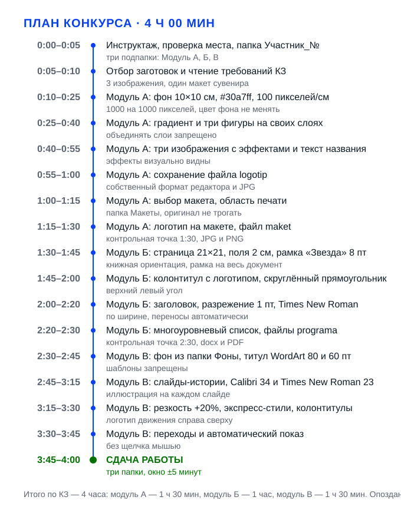
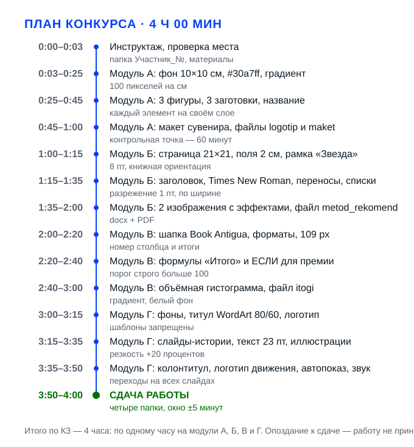
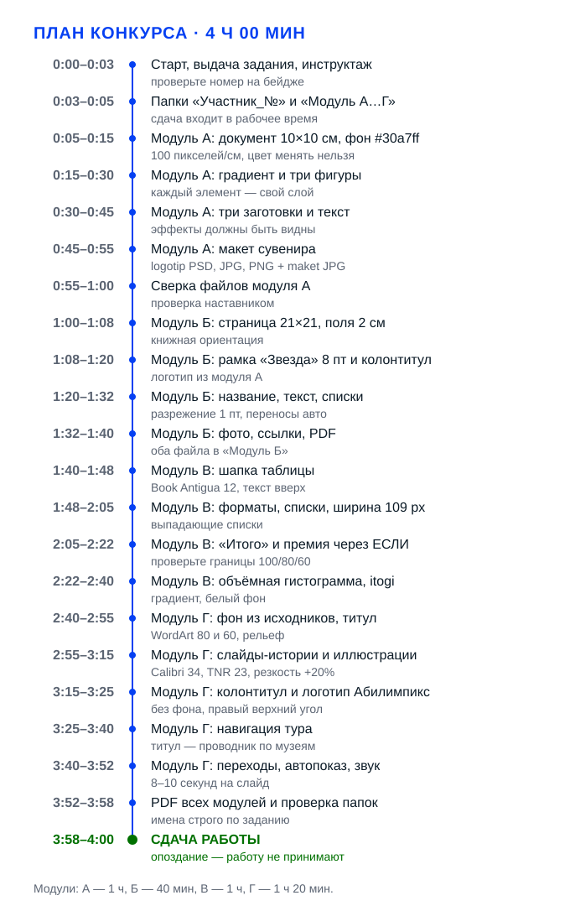

Мастер по обработке цифровой информации (Р,О)
Задания ниже — официальные файлы «Абилимпикс» (источник: abilympics-russia.ru), разложенные по категориям. Решения написаны по тексту задания, регламенту и критериям оценки; в них указано, что именно проверяет эксперт.
Школьник
14–16 лет, базовый уровень заданияВыдержка из официального конкурсного задания: страницы, относящиеся к категории «Школьник» (стр. 7–14 источника).
Пошаговое решение
Конкурсное задание категории «Школьники» построено вокруг одного события — фестиваля «Россия — единая семья: нити традиций», и разложено на три модуля общей длительностью четыре часа: полтора часа на графику, час на текст, полтора часа на презентацию. Сначала в растровом редакторе собирается логотип на холсте 10 на 10 сантиметров с фоном #30a7ff и разрешением 100 пикселей на сантиметр — градиентный слой, три фигуры и три обработанных изображения, текст названия с видимыми эффектами, — и размещается на макете сувенира. Потом в текстовом редакторе из файла «Структура мероприятия.doc» делается программа фестиваля: страница 21 на 21 сантиметр, поля по 2 сантиметра, рамка «Звезда» 8 пунктов, логотип в колонтитуле, многоуровневые списки. Последней собирается презентация «Моя малая родина в истории большой страны» с титулом из WordArt кеглем 80 и 60 пунктов.

Задача 1. Принять материалы и собрать папки сдачиМодуль А · 1 ч 30 мин · старт 0:00
До старта и в первые десять минут нужно сделать две вещи: убедиться, что весь комплект исходных материалов на месте и открывается, и создать на рабочем столе папку с номером участника и тремя подпапками по модулям. Это не формальность: по правилам КЗ иерархия папок задана заранее, сохранение работы входит в рабочее время, а файлы, лежащие вне указанной директории, при сборе результатов могут просто не найти.
Действие 1.1. Принять и проверить исходные материалы
Шаг 1.1.1
Открываем папку Исходные материалы и проходим все три модуля подряд, ничего не пропуская. В модуле А должны лежать фотографии по теме фестиваля в JPG, изображение сувенирной продукции «Кружка» в PNG и вложенная папка Макеты с несколькими дизайн-проектами; в модуле Б — один файл «Структура мероприятия.doc»; в модуле В — фотографии и папка Фоны. Выписываем на лист столбиком: какая папка, сколько в ней файлов, какие расширения, какие имена. Этот лист держим перед собой до конца конкурса, он же станет чек-листом при сдаче.
Комплект — единственное, что нельзя добрать потом: по правилам КЗ замена материалов после старта идёт только через главного эксперта и только если причина признана уважительной. Кроме того, фон для презентации разрешено брать строго из папки Фоны, а макет сувенира — строго из папки Макеты, поэтому важно сразу увидеть, что там действительно есть из чего выбирать.
В списке три строки, и число файлов в каждой совпадает с тем, что показывает проводник. Отдельно проверяем, что папки Макеты и Фоны не пусты и содержат больше одного варианта: если выбора нет, это надо озвучить эксперту до старта, а не обнаружить в середине модуля.
Типичная ошибка — просмотреть только модуль А, а модуль В открыть в 2:30 и увидеть, что фоны тяжёлые или лежат в другом формате. Тогда полтора часа уходят на пересборку вместо работы, и презентация получается из двух слайдов вместо пяти-шести.
Эксперт по деталям фонов и заготовок видит, взяты ли они из выданной папки или скачаны из интернета, — сеть на площадке, как правило, закрыта. Использование чужих материалов считается нарушением условий задания.
Шаг 1.1.2
Пробегаем по всем заготовкам глазами, открывая их в просмотрщике: у каждой смотрим размер в пикселях и резкость. Для логотипа нужны три изображения, которые читаются в маленьком размере — на десяти сантиметрах они займут два-три сантиметра, поэтому мелкие детали и пейзажи «на весь кадр» отбираем в последнюю очередь. Сразу намечаем карандашом на листе: какая заготовка станет главной, какая фоновой, какая акцентной.
Требование КЗ звучит как «предварительно обработав», и это значит, что изображение нельзя просто перетащить в холст. Отбор экономит время: если взять картинку с мелкой текстурой, её всё равно придётся упрощать и обесцвечивать, а на десяти сантиметрах она превратится в серое пятно, и композиция логотипа развалится.
У отобранных файлов разрешение по короткой стороне не меньше 800 пикселей — иначе при печати на сувенире пойдёт «лесенка». Проверьте каждую на увеличении 100 процентов: если уже видно зерно и артефакты сжатия, ищите другую заготовку.
Взять все три изображения одного плана — например, три общих вида сцены: логотип получается плоским, изображения спорят друг с другом, и композиция с фигурами не складывается. Вторая ошибка — выбрать картинку с водяным знаком, который потом нечем закрыть.
Смотрит на итоговый логотип и мысленно уменьшает его до двух сантиметров: читаются ли силуэты, не превратились ли фотографии в кашу. Именно поэтому отбор, а не обработка, решает половину оценки за композицию.
Шаг 1.1.3
Проверяем инструменты до старта: какая версия графического редактора установлена, есть ли шрифты Times New Roman и Calibri, работает ли WordArt в презентации, экспортируется ли документ в PDF без ошибок. Делаем два пустых пробных файла — документ и презентацию — и сохраняем их в свои папки, чтобы убедиться, что запись на диск разрешена. Заодно смотрим, где находится кнопка сохранения в собственном формате, а не только «Экспорт».
Требования к результатам жёстко привязаны к форматам: логотип — в собственном формате редактора, программа — в формате текстового редактора и в PDF, презентация — в формате программы презентаций. Если экспорт в PDF не работает, вы узнаете об этом в 2:25, когда на исправление останется пять минут.
Пробный документ сохранён, закрыт и снова открыт без предупреждений; PDF из него открывается и показывает тот же текст; в презентации доступна вставка WordArt. Если что-то из этого не работает, зовём эксперта сразу, а не в конце.
Проверять инструменты «по ходу»: чаще всего обнаруживается, что в презентации нет нужного шрифта, и Calibri подменяется другим, а кегль 34 при этом выглядит иначе, чем ожидал эксперт. Вторая ошибка — работать в пробном файле и забыть пересохранить его под нужным именем.
Обращает внимание, открывает ли участник нужные приложения сразу и по делу. Хаотичное переключение между редакторами в первые десять минут читается как отсутствие плана.
Действие 1.2. Создать папки сдачи и распределить время
Шаг 1.2.1
На рабочем столе создаём главную папку с обязательным обозначением номера рабочего места — «Участник_12», где 12 — ваш номер по жеребьёвке. Внутри — три подпапки с именами строго по модулям: «Модуль А», «Модуль Б», «Модуль В». Никаких «New folder», «Разное» и «Итог»: имена подпапок в КЗ заданы как наименования модулей, которые сдаются на проверку, и именно по ним эксперт ищет файлы.
Иерархия папок прописана в разделе 2.3 КЗ отдельным пунктом, и сохранение работы входит в рабочее время, то есть время на папки у вас есть, а времени на споры о них потом — нет. Если файл лежит вне указанной директории, при сборе результатов забираются только те файлы, которые участник укажет, — а на это нужны минуты, которых в конце не будет.
Путь выглядит так: Рабочий стол → Участник_12 → Модуль А (и две соседние папки). Проверьте, что номер в имени совпадает с номером на вашем столе, а не с номером соседа: перепутанный номер — самая обидная потеря, работу просто не идентифицируют.
Сохранять всё в одну папку «по именам файлов»: к концу конкурса там шесть-семь файлов, и на сдаче вы тратите время на объяснение, что где. Вторая ошибка — папка с пробелом в конце имени или с русской «А» вместо латинской в слове «Модуль А».
Проверяет структуру папок в момент сдачи, до просмотра содержимого. Отсутствие подпапки по модулю означает, что модуль формально не сдан, даже если файл существует.
Шаг 1.2.2
Настраиваем сохранение заранее: в графическом редакторе включаем автосохранение с интервалом 5 минут и формат по умолчанию — собственный формат редактора, в текстовом редакторе выставляем автосохранение и место по умолчанию — папку «Модуль Б», в презентации — «Модуль В». Проверяем свободное место на диске: под PSD, DOCX и PPTX с растровыми фонами уйдёт несколько сотен мегабайт.
Полтора часа на графику с десятком слоёв и эффектов — это работа, которую легко потерять из-за одного зависания. Автосохранение в собственный формат важно и по другой причине: восстановленный файл сохраняет слои, а JPG — нет, а объединять слои в этом модуле запрещено.
Создайте пробный файл, подождите интервал автосохранения, закройте без сохранения и откройте снова: редактор должен предложить восстановленную версию. Убедитесь также, что в строке состояния видно достаточно свободного места.
Работать в одном PSD без промежуточных сохранений: одно зависание на пятом эффекте — и модуль А начинается заново в 1:10. Вторая ошибка — сохранять только в JPG, где слои уже сведены, а это прямое нарушение требования «объединять слои запрещено».
При проверке открывает именно собственный формат и смотрит панель слоёв. Если в присланном файле один слой, пункт про отдельные слои не зачитывается независимо от красоты логотипа.
Шаг 1.2.3
Пишем на том же листе план на четыре часа по контрольным точкам: к 0:10 — холст и фон, к 0:40 — фигуры и изображения, к 1:00 — текст и файл logotip, к 1:30 — макет maket, к 2:30 — программа в DOCX и PDF, к 3:45 — презентация в PPTX, к 3:50 — сдача. Рядом с каждой точкой оставляем место, чтобы отмечать факт, а не держать время в голове. Пятиминутный запас на сдачу закладываем отдельно, иначе последний пункт съест время модуля В.
По КЗ модуль А занимает 1 час 30 минут, модуль Б — 1 час, модуль В — 1 час 30 минут, и перекос в любую сторону виден именно по контрольным точкам. Если в 1:00 логотипа нет, правильное решение — упростить композицию, а не сокращать модуль Б, где требования перечислены по пунктам и каждый проверяется отдельно.
На листе шесть строк с временами, и первая же проверка в 0:10 показывает, идёте вы по плану или отстаёте. Часы на экране или на столе должны быть видны, не отрываясь от работы; будильник на 3:30 — обязателен.
Планировать «успею»: без точек контроля участник застревает на градиенте до 1:20, потом делает макет за десять минут и полностью проваливает модуль Б. Вторая ошибка — наоборот, гнать и сдавать недоделанную графику, чтобы «успеть всё».
По поведению видит, управляет ли участник временем: спокойная работа с короткими остановками на проверку читается лучше, чем рывки и паника в последние двадцать минут.
Задача 2. Собрать логотип мероприятия в растровом редактореМодуль А · 1 ч 30 мин · окно 0:10–1:00
Ядро модуля А: холст 10 на 10 сантиметров с фоном #30a7ff и разрешением 100 пикселей на сантиметр, отдельный градиентный слой, не менее трёх геометрических фигур и трёх обработанных изображений, текст названия с эффектами. Каждый элемент — на своём слое, объединять слои запрещено: именно по панели слоёв эксперт проверяет, сделана работа сборкой или нарисована на одном слое.
Действие 2.1. Настроить холст, фон и градиент
Шаг 2.1.1
Создаём новый документ: ширина 10 сантиметров, высота 10 сантиметров, разрешение 100 пикселей на сантиметр, цветовой режим RGB, 8 бит на канал, содержимое — белый. После создания проверяем размер в пикселях: 10 умножить на 100 даёт 1000, значит документ должен быть 1000 на 1000 пикселей. Нижний слой переименовываем в «Фон» и заливаем цветом #30a7ff — либо через диалог «Выполнить заливку», либо основным цветом и сочетанием Alt плюс Backspace, чтобы заливка легла на весь слой без краёв.
Размер и цвет фона — первые два требования КЗ, и цвет фона менять запрещено, поэтому заливка должна быть именно #30a7ff, а не «похожий голубой». Разрешение тоже не формальность: при 100 пикселях на сантиметр десять сантиметров дают ровно 1000 пикселей, и это то разрешение, при котором логотип нормально печатается на сувенире.
В заголовке окна или в свойствах документа стоит 1000 на 1000 пикселей и 100 пикселей на сантиметр. Возьмите пипетку и щёлкните по углу холста: в палитре должен быть #30A7FF без отклонений. Масштаб поставьте 100 процентов и убедитесь, что по краям нет белой или прозрачной полосы.
Создать документ 10 на 10 пикселей, перепутав единицы, — тогда всё, что вы нарисуете, будет кашей из нескольких точек. Вторая ошибка — залить фон «Светло-голубым» из набора образцов: цвет отличается на несколько единиц, и пункт про #30a7ff не зачитывается.
Первым делом смотрит свойства документа и щёлкает пипеткой по фону. Несовпадение цвета или разрешения фиксируется сразу, до разговора о композиции. Отдельно он отмечает, совпадает ли разрешение документа с требованием 100 пикселей на сантиметр.
Шаг 2.1.2
Запираем слой «Фон»: на панели слоёв нажимаем замок, чтобы случайное движение кистью или заливка не легли на него. Сверху создаём пустой слой и называем его «Градиент». Дальше все работы идут только на новых слоях, а фон остаётся нетронутым до конца модуля. Если редактор не умеет запирать слой, достаточно держать его выделенным неактивным и не кликать по нему мышью.
Фон — единственный элемент, который по КЗ запрещено менять, и почти все нарушения по этому пункту происходят случайно: кисть задела край, градиент лёг на весь холст, ластик стёр угол. Запертый слой убирает этот риск полностью, а заодно приучает к дисциплине слоёв, которую эксперт проверяет отдельно.
На панели слоёв у «Фона» виден значок замка, и при попытке рисовать по нему редактор выдаёт предупреждение. Щёлкните пипеткой в четырёх углах и в центре — везде #30A7FF. Если хоть в одном месте цвет другой, отмените действие сочетанием Ctrl плюс Z.
Работать прямо на слое фона: через полчаса на нём уже и градиент, и фигуры, и тени, и вернуть исходный #30a7ff можно только заливкой, которая стирает всё нарисованное. Третья ошибка — залить градиент прямо на слой фона: цвет уходит в синеву, и вернуть точный #30a7ff без отмены действий не получится.
Проверяет цвет фона в нескольких точках и смотрит, существует ли отдельный слой под градиент. Работа «в один слой» видна по панели мгновенно. Если фон заперт, это видно по значку замка на панели, и вопрос снимается сразу.
Шаг 2.1.3
На слое «Градиент» строим градиентную подложку для логотипа: инструментом «Градиент» тянем от левого верхнего угла к правому нижнему, цвета берём самостоятельно — например, от насыщенного синего #0A47C8 к тёплому песочному #F2C879, чтобы получился мотив соединения традиций. Тип — линейный или радиальный, режим наложения «Перекрытие» или «Мягкий свет», непрозрачность слоя 60–75 процентов, чтобы базовый #30a7ff читался по краям кадра и фон формально остался прежним.
Градиентный фон на отдельном слое — отдельный пункт задания, и он же спасает логотип от плоской синей плашки. Режим наложения с частичной непрозрачностью нужен, чтобы выполнить оба требования сразу: градиент виден, но цвет фона #30a7ff не изменён. Без отдельного слоя градиент приходится рисовать поверх фигур, и они теряют задуманный цвет.
Градиент виден на 100 процентах масштаба, переход плавный, без полос и ступенек. Пипеткой в углу холста по-прежнему #30A7FF, а в центре — уже другой оттенок, то есть градиент действительно лежит отдельным слоем.
Залить градиентом весь холст в режиме «Нормальный» со стопроцентной непрозрачностью: цвет фона фактически заменён, и это прямое нарушение запрета. Вторая ошибка — градиент из трёх-четырёх ярких цветов, на котором не читается ни текст, ни фигуры.
Смотрит, есть ли градиент как самостоятельный слой, и проверяет края холста пипеткой. Отдельно оценивает, не мешает ли градиент читаемости остальных элементов.
Действие 2.2. Построить геометрические фигуры на отдельных слоях
Шаг 2.2.1
Создаём не менее трёх фигур, каждую — на своём новом слое, с именем по смыслу: «Круг», «Ромб», «Лента». Берём инструменты «Эллипс», «Прямоугольник со скруглением» и «Многоугольник» с числом сторон от трёх до шести; фигуру можно получить и через выделение с заливкой. Размеры подбираем в пикселях от 300 до 600 по большей стороне, чтобы фигуры занимали примерно две трети холста и не упирались в края.
«Не менее 3 из геометрических фигур, каждый элемент на отдельном слое, объединять слои запрещено» — самый формальный пункт модуля и самый дешёвый по времени. Три фигуры дают каркас композиции: одна работает как подложка, вторая как акцент, третья связывает изображения между собой.
На панели слоёв ровно три отдельных слоя фигур, у каждого своё имя, и при отключении видимости любого из них фигура исчезает по одной, а не вместе с соседними. Границы фигур не выходят за холст: проверьте на масштабе «По размеру окна».
Нарисовать три фигуры на одном слое и потом «разделить» их — на это уходит время, и после сведения слоёв разделение уже невозможно. Вторая ошибка — взять три одинаковых круга: формально три фигуры есть, но композиция читается как случайные пятна.
Считает слои с фигурами и проверяет, что каждый можно отключить отдельно. Три фигуры на одном слое — невыполненный пункт, даже если визуально их три. Имена слоёв он тоже читает: «Слой 1» и «Слой 2» затрудняют проверку.
Шаг 2.2.2
Выстраиваем композицию по правилу третей: главный элемент ставим в точку пересечения воображаемых линий — примерно 330 пикселей от левого края и 330 от верхнего, вторая фигура уходит в правый нижний угол, третья работает как дуга или лента, соединяющая первую со второй. Оставляем нижнюю четверть холста под текст названия: текст не должен лежать на фигурах, иначе он потеряется даже с обводкой.
Расположение фигур и их цветовое оформление отданы на усмотрение участника, то есть оценивается именно композиция. КЗ отдельно требует, чтобы расположение изображений создавало композицию с фигурами, — значит, элементы должны работать вместе, а не стоять по углам каждый сам по себе.
Уменьшите масштаб до 25 процентов и прищурьтесь: должна читаться диагональ или треугольник из трёх пятен, а не равномерная сетка. Проверьте, что между фигурами есть воздух не меньше 40 пикселей и что нижняя четверть свободна.
Расставить фигуры симметрично по центру — логотип выглядит как мишень и не оставляет места тексту, из-за чего название приходится накладывать на круг и уменьшать кегль. Вторая ошибка — заполнить фигурами весь холст «чтобы было плотно».
Смотрит на логотип целиком, а не на отдельные элементы, и оценивает, читается ли композиция с первого взгляда. Замечает и «воздух»: слишком плотная упаковка считается недостатком.
Шаг 2.2.3
К каждой фигуре применяем эффекты слоя так, чтобы они были видны: тень со смещением 6–10 пикселей, размытием 12–18 и непрозрачностью 55–65 процентов; обводку 4–6 пикселей контрастного цвета; для одной из фигур — фаску и рельеф с глубиной 80–120 процентов и подсветкой сверху. Если редактор не поддерживает эффекты слоя, делаем то же самое копией фигуры, размытием по гауссу и заливкой в тёмный цвет на отдельном слое под ней.
Требование звучит как «применить эффекты на усмотрение участника, так чтобы они были визуально видны». Именно видимость и проверяется: эффект с размытием один пиксель на печати пропадает, и пункт считается невыполненным, хотя технически работа сделана.
Отключите слой с тенью и включите снова — разница должна бросаться в глаза на 50 процентах масштаба. Проверьте, что эффект не «съел» край фигуры и не вышел за холст тёмным пятном; при необходимости уменьшите смещение до 5 пикселей.
Применить эффекты ко всем фигурам одинаково: они сливаются в один плоский блок, и композиция теряет глубину. Вторая ошибка — тень на 60 пикселей с размытием 100: фигура выглядит как грязное пятно, а не как объект над фоном.
Переключает видимость эффектов и смотрит разницу. Отдельно проверяет, применены ли эффекты к фигурам, к изображениям и к тексту — по КЗ это три разных пункта.
Шаг 2.2.4
Проверяем целостность структуры: на панели слоёв не должно быть ни одной операции «Объединить с предыдущим», «Свести изображение» или «Выполнить сведение». Фоновый слой остаётся снизу, над ним градиент, дальше фигуры, изображения и текст. Если случайно свели два слоя, отменяем через историю операций, а не пытаемся разделить. Перед сохранением ещё раз прокручиваем историю операций: последние действия должны быть без слова «объединить».
«Объединять слои запрещено» — отдельная строка КЗ, и она проверяется не глазами, а панелью слоёв. Даже идеально нарисованный логотип в один слой теряет этот пункт полностью, а восстановить структуру после сведения невозможно. Восстановить структуру после сведения невозможно: обратной операции в редакторе не существует.
Прокрутите панель слоёв сверху донизу и назовите каждый слой вслух: фон, градиент, три фигуры. Слоёв не меньше пяти, у каждого непустое имя, ни один не заблокирован по ошибке. Сохраните файл в PSD и откройте снова — слои должны остаться.
Свести слои «чтобы файл был легче» перед сохранением в JPG — и потерять структуру в основном файле, потому что JPG сохранялся поверх. Делать JPG всегда нужно через «Сохранить как копию», не меняя текущий документ.
Открывает PSD и первым делом смотрит панель слоёв, а не картинку. Один слой или сведённая группа — фиксация нарушения и минус по структурному пункту. По числу слоёв он сразу понимает, собиралась работа поэлементно или рисовалась целиком.
Действие 2.3. Вставить и обработать три изображения
Шаг 2.3.1
Вставляем отобранные заготовки через «Поместить» или «Импорт как смарт-объект» — каждый файл на своём слое, с именем по содержанию. Обрабатываем по одной: кадрируем так, чтобы осталась главная деталь, приводим к нужному размеру без растяжения, при необходимости убираем фон ластиком или маской, обесцвечиваем и подкрашиваем в тон градиента через «Цветовой баланс» или «Фотофильтр».
«Предварительно их обработав» — прямая формулировка задания, и необработанная вставка видна сразу: у заготовок разный цвет и свет, и вместе они выглядят как коллаж из чужих картинок. Единый тон и кадрирование — то, что превращает три файла в часть одного логотипа.
Все три изображения приведены к одному цветовому настроению: снимите насыщенность до нуля и посмотрите — по светлоте они должны быть близки. Фон у каждого либо прозрачный, либо совпадает с подложкой; белых прямоугольников не осталось.
Растянуть картинку за угол без Shift — пропорции ломаются, и люди на фотографии выглядят вытянутыми. Вторая ошибка — оставить белый фон заготовки: на голубом градиенте он читается как грубая заплатка.
Сравнивает изображения с исходниками и видит, что именно изменено: кадр, тон, удалённый фон. Вставка без обработки фиксируется как невыполненный пункт.
Шаг 2.3.2
Применяем к изображениям эффекты, видимые на печати: обводку 3–5 пикселей цветом фона, чтобы изображение отделилось от подложки; мягкую тень со смещением 8 пикселей; для одного изображения — свечение с размахом 20–30 пикселей. Края можно обработать растушёвкой через маску с мягкой кистью, чтобы фотография «входила» в фигуру, а не лежала поверх прямоугольником.
Второй пункт про эффекты относится уже к изображениям, и он отдельный в перечне требований. Растушёвка решает и композиционную задачу: изображение перестаёт быть врезкой и становится частью формы, что и требуется формулировкой «создавать композицию с геометрическими фигурами».
На масштабе 50 процентов у каждого изображения виден контур или тень, и при этом не видно резкой прямоугольной границы. Отключите эффекты по очереди: если картинка не меняется, эффект слишком слабый и его нужно усилить.
Обвести все три изображения одинаковой толстой рамкой — они начинают выглядеть как три отдельные фотографии в альбоме. Вторая ошибка — свечение на светлом фоне: его просто не видно, и пункт формально не закрыт.
Смотрит, различимы ли эффекты на изображениях и не спорят ли они с эффектами фигур. Единый визуальный язык ценится выше, чем количество наложенных эффектов.
Шаг 2.3.3
Собираем изображения в композицию с фигурами: главное изображение ставим внутрь самой крупной фигуры и подрезаем по её контуру маской, второе оставляем на пересечении двух фигур так, чтобы часть уходила под них, третье делаем маленьким акцентом рядом с текстом. Следим, чтобы лица и руки не обрезались краем фигуры и чтобы изображения не перекрывали друг друга целиком.
«Расположение изображений должно создавать композицию с геометрическими фигурами» — именно этот пункт отличает логотип от набора картинок. Подрезка по контуру фигуры показывает, что изображения и фигуры — единая конструкция, а не два независимых слоя.
Отключите слои с фигурами: изображения должны остаться связной группой, а не разлететься по углам. Включите обратно: контуры фигур должны читаться сквозь композицию, а не быть полностью закрытыми картинками.
Положить изображения ровным рядом в нижней части холста — это не композиция, а строка иллюстраций. Вторая ошибка — закрыть фигуры целиком: тогда пункт про фигуры формально есть, а визуально их нет. Третья ошибка — три изображения одного размера, которые не дают иерархии в композиции.
Проверяет, взаимодействуют ли изображения и фигуры: пересечения, подрезки, единый контур. Три независимые вставки он отмечает как слабую композицию. Если все изображения одного размера, композиция читается как ряд, а не как единое целое.
Действие 2.4. Добавить название и сохранить логотип
Шаг 2.4.1
Инструментом «Текст» набираем название — «Россия — единая семья: нити традиций» — в две или три строки, чтобы оно не превращалось в тонкую полосу. Шрифт берём с поддержкой кириллицы и хорошей читаемостью в мелком размере, кегль 60–72 пункта при разрешении 100 пикселей на сантиметр, то есть около 210–250 пикселей по высоте заглавной буквы. Выравнивание по центру, размещение — в свободной нижней четверти.
Текст с названием мероприятия — обязательный элемент, и он же самый уязвимый: мелкий кегль на десяти сантиметрах превращается в нечитаемую строку, а слишком крупный не помещается и переносится по одному слову. Разбивка на две-три строки — компромисс, при котором название читается и на кружке, и в презентации.
Отойдите от экрана на два шага: название должно читаться целиком, без разбора по буквам. Проверьте, что слова не разорваны переносом, тире стоит с пробелами, кавычки «ёлочки», а текст не задевает края холста ближе двух сантиметров.
Набрать название одной строкой на всю ширину — кегль падает до 30 пунктов, и на печати текст исчезает. Вторая ошибка — опечатка в названии: «нити традиций» вместо «нить традиций» стоит дорого, потому что название сверяется дословно.
Сверяет текст с формулировкой КЗ посимвольно. Опечатка или изменённое слово считаются несоответствием заданию независимо от оформления. Он же смотрит, влезает ли название в холст без обрезки по краям.
Шаг 2.4.2
Применяем к тексту эффекты слоя: обводку 4–6 пикселей контрастным цветом, тень со смещением 5 пикселей, для одной строки — градиентную заливку по тексту от тёплого к холодному. Если редактор позволяет, добавляем тиснение с небольшой глубиной. Держим баланс: два эффекта на строку — предел, иначе буквы слипаются в узор и название перестаёт читаться. Проверяем результат на уменьшении после каждого эффекта, а не только в самом конце.
Эффекты к тексту — отдельный пункт перечня, и требование то же: они должны быть визуально видны. Обводка решает практическую задачу — текст остаётся читаемым на градиенте и на фотографии, а это как раз то, что проверяется при уменьшении логотипа до двух сантиметров.
Отключите эффекты текста и включите снова: на 50 процентах разница обязана быть заметной. Проверьте, что обводка не залила внутренние просветы букв «о», «е», «в» и что текст не превратился в контур без заливки.
Обводка 15 пикселей на кегле 60: просветы в буквах закрываются, слово читается как одно пятно. Вторая ошибка — тень того же цвета, что и текст: она не видна, и пункт про видимые эффекты не закрыт. Третья ошибка — обводка светлее заливки: буквы выглядят размытыми и теряют контур.
Смотрит текст на уменьшении и проверяет читаемость. Отдельно фиксирует, что эффекты применены именно к тексту, а не ко всей группе сразу. Обводку в один пиксель он приравнивает к отсутствию эффекта.
Шаг 2.4.3
Сохраняем результат трижды и по-разному. Первый файл — в собственном формате редактора с именем logotip (logotip.psd), со всеми слоями, в папку «Модуль А». Второй — JPG максимального качества через «Сохранить как копию», чтобы текущий документ остался многослойным. Третий — PNG с прозрачным фоном (logotip.png): он понадобится в модуле В, где на титульный слайд вставляется логотип именно в этом формате.
Таблица результатов КЗ требует файл логотипа в собственном формате редактора, а в разделе про создание — ещё и PSD, JPG. PNG в перечне модуля А нет, но он прямо требуется на титульном слайде презентации, поэтому разумно сделать его сразу: возвращаться к логотипу в 3:20 — потерянные пятнадцать минут.
В папке «Модуль А» три файла с именем logotip и разными расширениями. Откройте PSD заново: слои на месте. Откройте PNG: фон прозрачный, виден шахматный узор, края логотипа чистые, без белой каймы. Откройте JPG и убедитесь, что на нём нет прозрачных участков.
Сохранить только PSD и вспомнить про PNG в модуле В, когда экспорт придётся делать из сведённой копии с белым фоном. Вторая ошибка — имя «logotip копия» или «logotip(1)»: имя файла сверяется с требованием КЗ.
Открывает папку и проверяет имена и расширения до просмотра содержимого. Отсутствие собственного формата означает, что ключевой результат модуля А не сдан.
Задача 3. Разместить логотип на макете сувенирной продукцииМодуль А · 1 ч 30 мин · окно 1:00–1:30
Вторая половина модуля А: из папки Макеты выбирается один дизайн-проект сувенира, открывается в том же растровом редакторе, на него помещается готовый логотип, и результат сохраняется как maket. Здесь оценивается не только картинка, но и понимание, что логотип идёт в массовое производство: он должен стоять ровно, не сползать в шов кружки и не закрывать блики настолько, чтобы сувенир перестал читаться как предмет.
Действие 3.1. Выбрать макет и подготовить область печати
Шаг 3.1.1
Открываем папку Исходные материалы/Модуль А/Макеты и просматриваем все проекты в режиме эскизов, не открывая каждый целиком. Выбираем один — обычно это кружка на нейтральном фоне, иногда с тенью и ручкой под определённым углом — и копируем файл в папку «Модуль А», а работаем уже с копией. Оригинал в папке исходников остаётся нетронутым. Отдельно смотрим, есть ли в макете слой с тенью: его нельзя полностью закрывать логотипом.
Задание разрешает выбрать один из предложенных дизайн-проектов, то есть придумывать сувенир с нуля нельзя, а испортить оригинал — значит остаться без макета вообще. Копия в своей папке ещё и страхует от вопроса «где ваш файл»: результат лежит там, где его ищет эксперт.
В папке «Модуль А» появился файл макета, а исходник на месте — проверьте по дате изменения, она не должна поменяться. Открытая копия показывается в редакторе целиком, разрешение не меньше 150 пикселей на сантиметр по короткой стороне.
Открыть макет прямо из папки исходников и сохранить поверх: файл с проектом испорчен для всех, а эксперту нечего сверять. Вторая ошибка — выбрать самый сложный проект с бликами и ручкой, где логотип некуда поставить без деформации.
Сверяет макет с выданным комплектом: видно, что взят именно предложенный проект, а не найденная в интернете фотография кружки. Подмену он отмечает как нарушение.
Шаг 3.1.2
Разбираем макет по слоям и смотрим, как устроен объект: где проходит граница передней плоскости, где начинается изгиб к ручке, где лежат блики и тень. На новом слое поверх макета рисуем мягкой кистью полупрозрачную зону печати — прямоугольник примерно 8 на 6 сантиметров, отступив от верхнего края и от ручки. Этот слой потом скроем или удалим, он нужен только для примерки.
Логотип, поставленный в шов или на ручку, выглядит как наклейка и сразу снижает впечатление от всей работы. Понимание геометрии предмета — то, что отличает макет для массового изготовления от простой вставки картинки, и это прямо записано в формулировке задания.
Зона печати целиком попадает на переднюю плоскость, не задевает ручку и верхний бортик, отступы слева и справа примерно равны. Проверьте на масштабе 100 процентов: край зоны должен идти параллельно верхнему краю кружки.
Поставить логотип по центру всего изображения, не учитывая перспективу: он оказывается на изгибе, половина уходит в тень, и надпись не читается. Вторая ошибка — занять логотипом всю высоту кружки, оставив сувенир без полей.
Смотрит, учтена ли форма предмета: положение относительно ручки, отступы, совпадение плоскости. Макет с «наклеенным» логотипом он отличает сразу. Он же смотрит, не заходит ли зона печати на ручку и на верхний бортик изделия.
Шаг 3.1.3
Приводим логотип к печатному размеру: ширина на кружке 6–8 сантиметров, то есть при 100 пикселях на сантиметр — от 600 до 800 пикселей по ширине. Уменьшаем строго с сохранением пропорций через «Свободное трансформирование» с зажатым Shift или через поле процентов, а не растягиванием за боковую ручку. Если макет низкого разрешения, логотип всё равно оставляем смарт-объектом, чтобы он не потерял резкость при повторном масштабировании.
Массовое изготовление означает печать: логотип, растянутый на 20 сантиметров из файла в 1000 пикселей, даёт видимую пиксельную сетку, а логотип в два сантиметра на кружке теряет текст названия. Соотношение 6–8 сантиметров — рабочий диапазон для стандартной кружки, при котором читается и графика, и надпись.
Измерьте ширину логотипа инструментом «Линейка» или по информационной панели: 600–800 пикселей при разрешении документа 100 пикселей на сантиметр. Пропорции исходные — сравните с оригиналом наложением или по числу пикселей сторон.
Растянуть логотип по ширине, чтобы он «заполнил» кружку: круг превращается в овал, шрифт плывёт — грубая ошибка, которую видно без измерений. Вторая — сделать логотип слишком мелким, из-за чего название не читается на макете.
Измеряет логотип на макете и сравнивает пропорции с исходником. Искажение пропорций фиксируется как дефект работы с изображением. Заодно он сверяет, хватает ли разрешения самого макета для печати в этом размере.
Действие 3.2. Смонтировать макет и сдать модуль А
Шаг 3.2.1
Помещаем логотип на макет как смарт-объект и ставим его в намеченную зону. Дальше подгоняем под форму: применяем «Деформацию» или «Искривление» с небольшим изгибом по вертикали, чтобы вертикальные линии логотипа повторяли кривизну кружки; режим наложения оставляем «Нормальный», но непрозрачность снижаем до 92–96 процентов, чтобы сквозь логотип слабо читались блики и он не выглядел плоской наклейкой.
Логотип на объёмном предмете без деформации читается как чужеродный прямоугольник. Небольшое искривление и почти полная непрозрачность — тот минимум, который показывает, что участник понимает, как логотип ляжет на изделие при печати, и это же требование «для массового изготовления» из формулировки задания.
На масштабе 100 процентов верхний и нижний края логотипа идут параллельно краям кружки с учётом изгиба, надпись читается целиком, блик не перерезает название пополам. Уменьшите до 50 процентов: логотип должен выглядеть как напечатанный, а не как вставленный файл.
Оставить логотип идеально прямым прямоугольником на выпуклой кружке — виден зазор и «парящий» вид. Вторая ошибка — опустить непрозрачность до 60 процентов «для реалистичности»: логотип бледнеет, и текст названия исчезает.
Смотрит на макет как на фотографию готового изделия: вызывает ли оно доверие. Отдельно проверяет читаемость названия и положение относительно ручки. Ему важно и то, не закрывает ли логотип блик целиком.
Шаг 3.2.2
Сохраняем макет дважды, потому что требования в КЗ расходятся: в таблице результатов указан формат PNG, а в тексте задания — JPG с именем maket. Делаем оба файла: maket.png и maket.jpg, качество JPG 10–12, цветовой профиль sRGB, без встроенного профиля монитора. Имя — строго maket, без приписок «итог», «финал» и номера версии. Оба файла сохраняем в sRGB, чтобы цвета на другом мониторе не ушли в зелень.
Расхождение между таблицей и текстом задания — не повод выбирать: эксперту нужен результат, а спор о формате съест время на сдаче. Два файла закрывают оба варианта проверки, и это занимает меньше минуты, если сохранять сразу парой. Лишняя минута на второй формат страхует от спора о расширении прямо на сдаче.
В папке «Модуль А» четыре файла: logotip.psd, logotip.png, maket.png, maket.jpg. Откройте оба макета: изображение не обрезано, логотип на месте, вес JPG в пределах двух-трёх мегабайт, PNG не тяжелее десяти.
Сохранить только JPG и услышать на сдаче, что нужен PNG, — а пересохранять уже нечем, если файл закрыт без сохранения слоёв. Вторая ошибка — имя «maket_final_2»: формальное требование к имени не выполнено.
Открывает папку и смотрит имена и расширения. Наличие обоих форматов он воспринимает как понимание задания, отсутствие нужного — как небрежность. Если формат один, он уточняет, какой именно требуется по таблице результатов.
Шаг 3.2.3
Проводим контрольную проверку модуля А в 1:25, за пять минут до конца окна. Проходим по списку из семи пунктов: фон #30a7ff и 1000 на 1000 пикселей, отдельный градиентный слой, три фигуры на своих слоях, три обработанных изображения с эффектами, текст названия с эффектами, файлы logotip и maket на месте, слои не сведены. Каждый пункт отмечаем на листе.
Модуль А — единственный, где проверяется структура файла, а не только картинка, и именно структурные пункты забываются к концу. Пять минут проверки в 1:25 дешевле, чем обнаружение объединённых слоёв в момент сдачи, когда исправлять уже нечем. Список из семи пунктов занимает полстраницы и закрывает весь модуль целиком.
Все семь пунктов отмечены, ни один не оставлен «на потом». Отдельно откройте logotip.psd заново: если редактор показал один слой, значит файл когда-то сохранили после сведения. Если хоть один пункт не отмечен, дорабатываем его до перехода к тексту.
Пропустить проверку и заняться «ещё одним эффектом»: типичный итог — красивый логотип с одним слоем и без файла maket. Вторая ошибка — проверять только картинку, не открывая папку сдачи. Третья ошибка — проверять работу по памяти, не открывая файлы заново.
На сдаче идёт по перечню требований сверху вниз: фон, слои, фигуры, изображения, текст, файлы. Пропущенный пункт он называет сразу, не дожидаясь конца проверки.
Задача 4. Собрать программу фестиваля в текстовом редактореМодуль Б · 1 ч 00 мин · окно 1:30–2:30
Модуль Б начинается с файла «Структура мероприятия.doc» и заканчивается двумя файлами programa — в формате текстового редактора и в PDF. Внутри восемь требований, каждое проверяется отдельно: страница 21 на 21 сантиметр в книжной ориентации, поля по 2 сантиметра, рамка «Звезда» толщиной 8 пунктов на весь документ, верхний колонтитул с логотипом из модуля А и эффектом «Скруглённый прямоугольник», заголовок по центру с разрежением 1 пункт, основной текст Times New Roman с выравниванием по ширине и автоматическими переносами, многоуровневые списки.
Действие 4.1. Открыть документ и настроить страницу
Шаг 4.1.1
Открываем «Структура мероприятия.doc» из папки Исходные материалы/Модуль Б и сразу сохраняем как programa.docx в папку «Модуль Б», формат — документ Word. Исходный файл закрываем или оставляем в режиме только для чтения. Перед правкой включаем отображение непечатаемых символов кнопкой на вкладке «Главная»: так видно, где стоят лишние абзацы, пробелы и разрывы, которые потом ломают вёрстку.
Сохранение под своим именем в первый же момент — правило безопасности: если редактор зависнет, у вас останется предыдущая версия, а не пустота. Имя programa и формат документа заданы в КЗ прямо, а неформатированные символы позволяют увидеть структуру текста до того, как вы начнёте её менять.
В заголовке окна стоит programa.docx, путь ведёт в «Модуль Б», исходный файл не перезаписан. На экране видны значки абзацев и точек, количество страниц показывает не больше пяти — если больше, в документе лишние разрывы.
Править исходный файл и сохранить его же: имя не соответствует требованию, а вернуться к исходной структуре нечем. Вторая ошибка — работать в формате doc, где часть настроек рамки и колонтитулов ведёт себя иначе.
Проверяет имя и формат файла первым делом, ещё до содержания. Файл с исходным именем считается несданным даже при идеальной вёрстке. Заодно он смотрит, не осталось ли в документе следов исходного имени файла.
Шаг 4.1.2
Задаём параметры страницы: вкладка «Макет», «Размер», «Другие размеры» — ширина 21 сантиметр, высота 21 сантиметр; ориентация книжная; поля все по 2 сантиметра, включая переплёт ноль и положение колонтитулов от края 1–1,2 сантиметра. Применяем ко всему документу, а не к текущему разделу, и проверяем, что разрывов раздела в файле нет. После применения проверяем, что поля не сбились на второй странице документа.
Размер 21 на 21 сантиметр и поля по 2 сантиметра — это не пожелание, а два отдельных требования КЗ, и они проверяются линейкой на экране за десять секунд. Разрывы разделов опасны тем, что часть требований применяется только к одному разделу, и тогда рамка или ориентация «съезжает» на второй странице.
Откройте «Параметры страницы» и прочитайте цифры: 21, 21, поля 2/2/2/2, ориентация книжная, «применить ко всему документу». Включите линейку и убедитесь, что текст начинается ровно в двух сантиметрах от края.
Оставить поля 2 сантиметра сверху и снизу и по 3 слева и справа, потому что так было в исходнике: пункт не выполнен. Вторая ошибка — применить размер только к первому разделу, и вторая страница выходит альбомной.
Открывает диалог параметров страницы и смотрит цифры, а не «на глаз». Проверяет и то, сколько разделов в документе: несколько разделов почти всегда означают, что настройки применены не полностью.
Шаг 4.1.3
Ставим рамку: «Дизайн», «Границы страниц», тип «Рамка», в списке «Рисунок» выбираем «Звезда», толщина линии 8 пунктов, цвет — на своё усмотрение, но контрастный к белому фону, например тёмно-синий #0540F2 или бордовый. В поле «Применить к» выставляем «ко всему документу» и нажимаем «ОК». Затем прокручиваем все страницы и смотрим, что рамка есть на каждой.
Рамка «Звезда» шириной 8 пунктов и применение ко всему документу — буквальное требование КЗ, причём оба параметра проверяются в одном диалоге. Восьмипунктовая линия при полях 2 сантиметра ещё и не должна залезать на текст: это отдельная тонкость, из-за которой работу приходится подгонять.
На всех страницах одинаковая звёздчатая рамка, толщина линии читается как 8 пунктов (в диалоге «Границы страниц» цифра сохранилась), текст не наезжает на зубцы. Проверьте последнюю страницу — чаще всего рамка пропадает именно там.
Применить рамку к текущему разделу: на второй странице её нет, и половина пункта потеряна. Вторая ошибка — взять рамку «Тень» вместо рисунка «Звезда»: рисунок в списке находится ниже, и его часто не замечают.
Открывает диалог границ и смотрит тип, рисунок, толщину и область применения. Затем листает документ до конца, чтобы убедиться, что рамка не пропала. Цвет рамки он не оценивает, а толщину линии и область применения проверяет точно.
Действие 4.2. Сделать колонтитул с логотипом и заголовок
Шаг 4.2.1
Двойным щелчком по верхнему полю открываем верхний колонтитул и включаем «Особый колонтитул для первой страницы» только если это разрешено заданием — по умолчанию ставим одинаковый на всех страницах. Вставляем logotip.png в левый верхний угол: «Вставка», «Рисунки», файл из папки «Модуль А». Высоту задаём 1,5 сантиметра, обтекание — «перед текстом», положение по горизонтали 0 от страницы, по вертикали 0,3 сантиметра от края.
Логотип в колонтитуле — требование КЗ с точным указанием места: верхний левый угол. Колонтитул, а не рисунок в тексте, нужен потому, что тогда логотип повторяется на каждой странице автоматически и не съезжает при правке абзацев. Положение в колонтитуле отсчитывается от края страницы, а не от первой строки текста.
Логотип виден на всех страницах, стоит в левом верхнем углу, не перекрывает рамку и не задевает первую строку. Высота — около 1,5 сантиметра, пропорции не нарушены: сравните ширину и высоту с исходным файлом.
Вставить логотип в текст первой страницы: на остальных страницах его нет, пункт про колонтитул не выполнен. Вторая ошибка — картинка «в тексте»: она разрывает строку и оставляет пустую полосу сверху. Третья ошибка — логотип слишком крупный, и он наезжает на зубцы рамки.
Листает документ и смотрит, повторяется ли логотип. Отдельно проверяет положение — верхний левый угол, а не центр или правый край. Проверяет он и обтекание: при варианте «в тексте» строка разрывается и остаётся пустая полоса.
Шаг 4.2.2
Применяем к логотипу эффект «Скруглённый прямоугольник»: выделяем рисунок, открываем «Формат рисунка», в разделе «Стили рисунков» выбираем скруглённую рамку либо задаём скругление через «Обрезку» по форме — «Скруглённый прямоугольник». Радиус подбираем такой, чтобы скругление было заметно на полутора сантиметрах: примерно 12–15 процентов от короткой стороны.
Название эффекта взято из КЗ дословно, и эксперт ищет именно скруглённые углы у картинки в колонтитуле. На маленьком размере скругление в два-три процента не видно, поэтому радиус приходится делать сознательно крупным — иначе формально применённый эффект выглядит как отсутствующий.
Увеличение до 200 процентов: все четыре угла логотипа скруглены одинаково, нет белых уголков, фон вокруг прозрачный. Сравните с исходником — там углы прямые, значит эффект действительно применён. Проверьте и то, что скругление одинаково выглядит на всех страницах документа.
Наложить на логотип прямоугольную рамку и считать это скруглением: углы остаются прямыми. Вторая ошибка — обрезать картинку по форме так, что срезается часть названия мероприятия на логотипе. Третья ошибка — скруглить так сильно, что углы срезают часть рисунка.
Открывает «Формат рисунка» и смотрит, задана ли форма обрезки или стиль. Скругление он проверяет на увеличенном фрагменте. Если эффект применён только к рамке рисунка, а углы остались прямыми, он просит переделать.
Шаг 4.2.3
Ставим заголовок: «Мероприятие «Россия — единая семья: нити традиций»» — по центру страницы, полужирным, без отступа первой строки. Для разрежения открываем «Шрифт», вкладку «Дополнительно», поле «Интервал» ставим «Разреженный», значение 1 пункт. Кегль — 16–18 пунктов, чтобы строка занимала две-три строки, а не растягивалась на всю ширину с переносами по одному слову.
Требование «интервал — разреженный на 1 пт» проверяется в диалоге шрифта, и именно 1 пункт, а не «чуть шире обычного». Выравнивание по центру и полужирное начертание в сочетании с разрежением дают тот вид заголовка, который показан в образце оформления на рисунке 1 в КЗ.
Выделите заголовок и откройте «Шрифт»: начертание полужирное, интервал разреженный, 1 пункт. На линейке заголовок стоит по центру, а между буквами виден небольшой дополнительный просвет по сравнению с обычным текстом.
Поставить разрежение 1 пункт только у одного слова или применить «Разреженный» без значения: по умолчанию там 0,5 пункта, и требование не выполнено. Вторая ошибка — выровнять заголовок по левому краю с отступом.
Выделяет заголовок и смотрит значения в диалоге шрифта. Разрежение, сделанное пробелами между буквами, он отличает от интервала и не зачитывает. Заодно он смотрит, не набраны ли пробелы между буквами вручную.
Действие 4.3. Отформатировать текст и собрать многоуровневые списки
Шаг 4.3.1
Выделяем весь основной текст, кроме заголовка, и задаём гарнитуру Times New Roman, кегль 12–14, выравнивание по ширине, отступ первой строки 1,25 сантиметра, межстрочный интервал одинарный, интервалы до и после абзаца по 0. Включаем переносы: «Макет», «Расстановка переносов», «Автоматически», ширина зоны переноса 0,5 сантиметра, максимальное число переносов подряд — 2. То же самое прописываем в стиле «Обычный», чтобы формат держался при правках.
Гарнитура, выравнивание по ширине и автоматические переносы — три отдельных требования одного пункта. Без переносов выравнивание по ширине даёт «реки» из пробелов, и текст на узкой странице 21 сантиметр выглядит рваным; с переносами строки становятся ровными.
Курсор в любом абзаце — в строке формул стиля стоит Times New Roman, выравнивание по ширине, перенос включён. Найдите строку, где нет «дыр» между словами: при включённых переносах таких строк большинство.
Выровнять по ширине, забыв про переносы: между словами появляются промежутки в два-три знака, и страница выглядит небрежно. Вторая ошибка — оставить фрагменты текста в Calibri, скопированные из другого документа.
Ставит курсор в разные абзацы и проверяет шрифт: вкрапления другой гарнитуры видны и в диалоге, и на глаз. Отдельно смотрит включённые переносы. Отдельно он проверяет, стоит ли стиль «Обычный» с этими же параметрами.
Шаг 4.3.2
Превращаем структуру в многоуровневый список: «Главная», «Многоуровневый список», выбираем вариант с нумерацией 1, 1.1, 1.1.1. Первый уровень — дни фестиваля, второй — блоки программы, третий — отдельные пункты с временем и площадкой. Для уровней задаём отступы 0; 0,6; 1,2 сантиметра, положение номера — по ширине текста, после номера ставим табуляцию, а не пробелы. Уровни переключаем клавишей Tab и Shift плюс Tab.
Многоуровневые списки — отдельное требование КЗ, и в образце на рисунке 1 видно, что программа читается именно как иерархия: день, блок, пункт. Списки, собранные вручную цифрами и пробелами, рассыпаются при любой правке и не считаются многоуровневым списком.
Щёлкните по номеру второго уровня: он должен быть светлее первого и сдвинут вправо. Проверьте Tab: уровень меняется, а не появляется отступ. При удалении одного пункта нумерация пересчитывается автоматически.
Набрать номера руками через точку и пробел: при вставке абзаца нумерация ломается, а эксперт видит обычный текст, а не список. Вторая ошибка — сделать три независимых одноуровневых списка вместо одного многоуровневого.
Ставит курсор в номер и смотрит, подсвечивается ли весь список. Ручная нумерация не подсвечивается и пункт не зачитывается. Если номера набраны вручную, список не подсвечивается целиком и пункт не зачитывается.
Шаг 4.3.3
Вычитываем и подгоняем вёрстку: убираем двойные пробелы и пустые абзацы, проверяем, что каждое название и время не разорваны переносом страницы, при необходимости ставим «не отрывать от следующего» в свойствах абзаца. Следим, чтобы текст не залезал под рамку «Звезда»: если зубцы задевают строки, увеличиваем отступ от границы на 0,2–0,3 сантиметра через «Границы страниц», кнопку «Параметры».
Рамка с рисунком съедает часть поля, и при полях 2 сантиметра текст может упереться в зубцы — это заметно и эксперту, и при печати. Аккуратные переносы и отсутствие пустых абзацев — то, что отличает сверстанный документ от набранного, и это видно на первом же экране.
Прокрутите документ целиком: ни одна строка не заходит на рамку, названия дней не оторваны от своих списков, в конце страниц нет одиноких строк из одного слова. Число страниц не изменилось после чистки.
Оставить текст под рамкой: зубцы перекрывают первые буквы строк, и читаемость падает. Вторая ошибка — вставить разрывы страниц вручную, из-за чего при малейшей правке появляются пустые листы. Третья ошибка — оставить пустые абзацы, из-за которых появляется лишняя страница.
Смотрит документ в режиме «Во весь экран» и листает подряд. Наезд текста на рамку и висячие строки он отмечает как дефект вёрстки. Он листает документ на полном экране и ищет наезды текста на зубцы рамки.
Действие 4.4. Сохранить документ в двух форматах
Шаг 4.4.1
Сохраняем programa.docx через «Сохранить» и сразу делаем PDF: «Файл», «Экспорт», «Создать PDF», имя programa.pdf, папка «Модуль Б». В окне экспорта отмечаем «Создать закладки» и снимаем лишние сжатия изображений, чтобы логотип в колонтитуле не размылся. После экспорта открываем PDF и листаем: рамка, логотип, разрежение в заголовке должны сохраниться.
Два файла — два отдельных требования к результату модуля Б. PDF нужен, чтобы эксперт увидел вёрстку без подмены шрифтов: если Times New Roman на его машине не установлен, в DOCX поедет вся страница, а PDF покажет исходный вид. Кроме того, PDF фиксирует вёрстку от правок, которые вы можете сделать уже после экспорта.
В папке «Модуль Б» два файла с именем programa. В PDF все страницы того же размера, рамка на месте, логотип не мыльный, заголовок по центру. Количество страниц в DOCX и PDF совпадает. Сравните размер страницы в обоих файлах: он должен быть 21 на 21 сантиметр.
Печатать в PDF через виртуальный принтер с масштабом «по размеру страницы»: поля сжимаются, рамка обрезается по краю. Вторая ошибка — отдать PDF, сделанный до последних правок, и получить расхождение с DOCX.
Открывает PDF и сверяет его с DOCX по трём признакам: размер страницы, положение рамки, колонтитул. Расхождение трактуется как два разных документа. Он открывает PDF первым, потому что вёрстка в нём не зависит от установленных шрифтов.
Шаг 4.4.2
Контрольная точка 2:30. Проходим по восьми требованиям модуля Б: размер 21 на 21, поля 2 сантиметра, книжная ориентация, рамка «Звезда» 8 пунктов на всём документе, верхний колонтитул с логотипом в левом углу, эффект скругления, заголовок с разрежением 1 пункт, Times New Roman с выравниванием по ширине и переносами, многоуровневый список. Плюс два файла в папке. Отмечаем каждый пункт и переходим к модулю В без остановок.
В модуле Б почти все потери — не от неумения, а от забытого пункта: чаще всего это разрежение в заголовке и эффект скругления у логотипа. Перечень из восьми строк занимает три минуты и закрывает именно те пункты, которые проверяются по диалогам, а не на глаз.
Восемь отметок на листе, две из них — про диалоги «Шрифт» и «Формат рисунка». Файлы programa.docx и programa.pdf открыты и закрыты без ошибок. На часах 2:30, и вы начинаете модуль В с чистого листа. Если что-то не отмечено, исправляем сразу, а не после презентации.
Уйти в презентацию, не проверив документ: в 3:50 выясняется, что заголовок не разрежен, а рамка есть только на первой странице, — исправлять уже некогда. Вторая ошибка — проверять «на глаз», не открывая диалоги.
На проверке модуля Б идёт по пунктам КЗ сверху вниз и открывает диалоги. Порядок в папке и оба файла он отмечает отдельно от вёрстки. На проверке модуля Б он идёт по перечню КЗ и открывает диалоги параметров.
Задача 5. Собрать мультимедийную презентацию «Моя малая родина»Модуль В · 1 ч 30 мин · окно 2:30–3:50
Модуль В — полтора часа на презентацию «Моя малая родина в истории большой страны». Требования перечислены по пунктам и почти все проверяются в диалогах: фон из папки Фоны без шаблонов, титул из WordArt с рельефом кеглем 80 и 60 пунктов, логотип из модуля А в PNG, слайды-истории с заголовками WordArt Calibri 34 и текстом Times New Roman 23 чёрного цвета, иллюстрация с экспресс-стилем и резкостью плюс двадцать процентов на каждом слайде, нижний колонтитул «Абилимпикс», логотип движения в правом верхнем углу без фона, переходы и автоматический показ.
Действие 5.1. Подготовить файл, фон и титульный слайд
Шаг 5.1.1
Создаём новую пустую презентацию и первым делом выставляем размер слайда: «Дизайн», «Размер слайда», «Настроить размеры слайдов» — 16 на 9 или 4 на 3, в зависимости от того, на каком проекторе идёт показ, ориентируемся на 16 на 9. Все заполнители с титульного слайда удаляем и оставляем пустой макет: ни одного «Заголовка слайда» с шаблонной плашкой, ни одной темы оформления из списка. Файл сразу сохраняем в «Модуль В» под рабочим именем.
«Использовать шаблоны запрещено» — отдельное требование КЗ, и шаблоном считается не только тема оформления, но и стандартные плашки заполнителей с их отступами и шрифтами. Пустая презентация с заданным размером слайда — чистовая основа, на которой потом выполняются все пункты по кеглям и шрифтам.
На первом слайде нет ни одной рамки-заполнителя с подсказкой «Заголовок слайда». В «Дизайне» выбрана тема «Office» или пустая, ни один вариант оформления не применён. Размер слайда совпадает у всех слайдов.
Взять готовую тему из списка «Дизайн»: фон, шрифты и плашки уже заданы шаблоном, и пункт про запрет шаблонов не выполняется, как бы вы ни перекрашивали слайды. Вторая ошибка — оставить заполнители, из-за которых текст встаёт не туда.
Открывает список тем и смотрит, какая применена. Стандартная тема с цветными плашками читается как шаблон и фиксируется сразу. Если тема применена, он видит это по первому же слайду, не выделяя объектов.
Шаг 5.1.2
Ставим фон: «Дизайн», «Формат фона», «Рисунок или текстура», «Файл», выбираем изображение из папки Исходные материалы/Модуль В/Фоны. Сразу нажимаем «Применить ко всем», чтобы фон встал на каждый слайд, и проверяем, что в списке фонов нет градиента поверх картинки. Если фон слишком пёстрый, добавляем полупрозрачную белую подложку под текст — прямоугольник без контура, заливка белая, прозрачность 75–85 процентов.
Фон берётся строго из папки Фоны — это указано в задании, и это же отличает работу от шаблонной презентации. Единый фон на всех слайдах даёт цельность, а подложка решает главную проблему готовых фотографий: чёрный текст Times New Roman 23 пункта на пёстром фоне местами не читается.
Прокрутите все слайды: фон одинаковый, без растянутых краёв и повторяющихся полос. Текст читается на самом светлом и на самом тёмном участке картинки — проверьте именно проблемные слайды, а не первый.
Поставить фон только на первый слайд и размножить его копированием вместе с содержимым: на слайдах-историях фон съезжает или двоится. Вторая ошибка — взять фон из интернета и получить несоответствие комплекту, что видно по стилю.
Сверяет фон с файлами в папке Фоны и проверяет, что он одинаковый на всех слайдах. Пёстрый фон без подложки он отмечает как потерю читаемости. Он же проверяет, что фон не растянут и не повторён плиткой.
Шаг 5.1.3
Собираем титульный слайд: вставляем WordArt и набираем первую строку — «Моя малая родина» кеглем 80 пунктов, вторую строку — «в истории большой страны» кеглем 60 пунктов. К тексту применяем текстовый эффект «Рельеф» и слегка поднимаем глубину, чтобы он был заметен; обе строки выравниваем по центру слайда. В свободный угол ставим logotip.png из папки «Модуль А» высотой около 3 сантиметров.
Кегли 80 и 60 пунктов и эффект рельефа заданы в КЗ дословно, причём «соответственно» означает привязку к строкам: 80 — первая, 60 — вторая. Логотип из модуля А на титуле связывает три модуля в одну работу, и эксперт проверяет именно эту связку, а не просто наличие картинки.
Выделите первую строку — в поле кегля 80, вторую — 60. Обе стоят по центру, между ними нет разрыва в треть слайда. Рельеф виден под углом на глаз: у букв есть светлая верхняя грань. Логотип не перекрывает текст.
Поставить весь заголовок одним кеглем 80: вторая строка не помещается и уезжает за край. Вторая ошибка — вставить логотип через «Снимок» или скриншот: он мыльный, и формат *.png, требуемый заданием, не соблюдён.
Проверяет кегли обеих строк и наличие эффекта рельефа, а затем смотрит, что логотип на титуле — тот же файл, что сдан в модуле А. Он же смотрит, читается ли рельеф на проекторе, а не только на мониторе.
Действие 5.2. Собрать слайды-истории с иллюстрациями
Шаг 5.2.1
Добавляем слайды по числу историй: у вас в папке модуля В лежат фотографии, и логично сделать пять-шесть слайдов — по одному на историю региона. На каждом создаём заголовок через WordArt, шрифт Calibri, размер 34 пункта, выравнивание по центру, положение — верхняя треть слайда, отступ от верхнего края около 2 сантиметров. Заголовок формулируем коротко: «Стерлитамак: соляная пристань», «Уфа: купеческая линия», «Салават: город нефтехимии».
«Для заголовков использовать WordArt, размер 34, шрифт Calibri, заголовок расположить по центру» — четыре параметра одного пункта, и они проверяются выделением текста. Заголовок WordArt, а не обычный текст, нужен потому, что в КЗ он назван отдельно и от него зависит композиция слайда.
На каждом слайде выделяется заголовок, и в панели видны Calibri и 34. Заголовки стоят на одной высоте на всех слайдах — щёлкните по ним по очереди: верхняя граница не должна прыгать. Ни один заголовок не переносится на три строки.
Сделать заголовки обычным текстом 34 пункта: визуально похоже, но WordArt не применён, и пункт не зачитывается. Вторая ошибка — заголовки на разной высоте, из-за чего при автоматическом показе слайды «дёргаются».
Щёлкает по заголовкам и смотрит тип объекта: WordArt определяется по рамке и панели работы с текстовыми эффектами. Кегль и гарнитуру он читает в строке формул.
Шаг 5.2.2
Набираем текст истории: гарнитура Times New Roman, размер 23 пункта, цвет чёрный, выравнивание по ширине, междустрочный интервал 1,0–1,1. Объём — 350–550 знаков на слайд, не больше: на 23 пунктах это семь-девять строк в половине слайда. Текст ставим в нижнюю или боковую половину, оставляя место под иллюстрацию и под логотип движения в правом верхнем углу.
Шрифт, размер и цвет текста заданы в КЗ, и чёрный цвет здесь не рекомендация: на фоне из фотографий серый или цветной текст теряется. Выравнивание по ширине даёт ровный правый край, а ограничение по объёму — это уже вопрос читаемости на проекторе: 23 пункта при трёхстах знаках читаются с последнего ряда.
Выделите абзац: Times New Roman, 23, чёрный, по ширине. На слайде нет строки длиннее 95 знаков, а последняя строка абзаца не короче двух слов. Текст не заходит в правый верхний угол, где будет логотип движения.
Скопировать текст из интернета вместе с форматированием: приходит Calibri 18 или Arial, и пункт про Times New Roman 23 не выполняется. Вторая ошибка — набить 900 знаков на слайд, и кегль приходится уменьшать до 16.
Ставит курсор в текст и читает параметры в панели. Отдельно смотрит, не уменьшен ли кегль «подгонкой»: 23 пункта должны стоять фактически, а не только в задании.
Шаг 5.2.3
На каждый слайд ставим одну иллюстрацию из папки модуля В: «Вставка», «Рисунки», файл, затем «Формат рисунка», «Экспресс-стили» — выбираем один стиль для всех иллюстраций, например с мягкой тенью. Резкость поднимаем через «Коррекция», «Резкость плюс 20 процентов»: в списке вариантов это второй пункт в блоке «Увеличить резкость». Размер подгоняем по ширине половины слайда, пропорции сохраняем перетаскиванием за угол.
«К иллюстрациям применить экспресс-стили по собственному выбору. Увеличить резкость каждой иллюстрации на 20%» — два пункта, и второй проверяется в диалоге коррекции: значение должно стоять 20, а не «на глаз похоже». Один стиль на все иллюстрации нужен для цельности: разные рамки и тени разваливают презентацию на куски.
Выделите рисунок, откройте «Коррекция»: выбран вариант с подписью «+20%». Проверьте, что изображение не растянуто (сравните пропорции с исходником) и что иллюстрация соответствует тексту рядом. Проверьте заодно, что резкость не дала белых контуров вокруг мелких деталей.
Вставить иллюстрации в исходном виде без стиля и коррекции: пункт про экспресс-стили и резкость не закрыт. Вторая ошибка — поставить картинку не по теме, просто чтобы было: соответствие теме указано в задании явно.
Открывает «Коррекцию» и ищет значение 20 процентов, затем смотрит стиль рамки. Несоответствие иллюстрации тексту он отмечает отдельно. Если коррекция применена ко всем рисункам сразу, это видно по единому значению.
Шаг 5.2.4
Выравниваем композицию слайда: текст и картинка не перекрывают друг друга и не заходят в правый верхний угол, где будет логотип движения; расстояние между блоками не меньше 0,8 сантиметра. Для единообразия копируем готовый слайд-историю и меняем в нём текст и картинку, а не собираем каждый слайд с нуля. Позиции блоков сводим по направляющим: «Вид», «Направляющие».
Эксперт смотрит презентацию подряд, и «плавающие» блоки читаются как небрежность даже при правильных шрифтах. Свободный правый верхний угол — техническая необходимость: по КЗ логотип движения должен быть виден и не закрыт текстом. Копирование слайда экономит время и держит одинаковые отступы на всех историях.
Пролистайте слайды и сравните положение заголовка и картинки: они должны совпадать с точностью до нескольких пикселей. В правом верхнем углу ни на одном слайде нет текста ближе трёх сантиметров к краю.
Собирать каждый слайд отдельно: блоки встают на разные места, и при показе всё «прыгает». Вторая ошибка — растянуть текст до самого верха, и логотип движения оказывается поверх букв. Третья ошибка — оставить картинку без отступа от края слайда, и её обрежет рамка.
Листает слайды подряд и смотрит, держится ли сетка. Отдельно проверяет правый верхний угол: там не должно быть ничего, кроме логотипа движения. Нарушение сетки он замечает при листании: блоки «прыгают» из слайда в слайд.
Действие 5.3. Добавить колонтитулы, логотип движения и автоматический показ
Шаг 5.3.1
Включаем нижний колонтитул: «Вставка», «Колонтитулы», ставим галочку «Нижний колонтитул», в поле пишем «Абилимпикс», размер 12–14 пунктов, выравнивание по центру или по правому краю. В том же окне отмечаем «Не показывать на титульном слайде». Применяем ко всем слайдам и проверяем, что на титуле надписи нет. Если надпись нужна другого цвета, меняем её в том же окне колонтитулов, а не вручную на каждом слайде.
Требование звучит как «добавить в нижний колонтитул надпись Абилимпикс на всех слайдах кроме Титульного» — то есть оба условия равнозначны. Галочка «не показывать на титульном» делает это автоматически; вписанный вручную текстовый блок на каждом слайде такой гарантии не даёт.
На втором и последующих слайдах внизу по центру стоит «Абилимпикс», на титульном — пусто. Проверьте последний слайд: колонтитул должен быть и там, иначе он применился не ко всем слайдам. Проверьте и то, что надпись не наезжает на нижний край иллюстрации.
Написать «Абилимпикс» текстовым блоком на первом слайде и размножить: на титуле надпись остаётся, и пункт про исключение не выполнен. Вторая ошибка — колонтитул виден в редакторе, но не в показе. Третья ошибка — надпись в колонтитуле другого цвета, чем на остальных слайдах.
Проверяет первый и последний слайд: на титуле надписи быть не должно, на остальных — обязательно. Смотрит и то, не перекрывает ли надпись иллюстрацию.
Шаг 5.3.2
Ставим логотип движения Абилимпикс в правый верхний угол: файл берём из комплекта материалов, а если его там нет — просим у эксперта в начале конкурса, не вырезая из интернета. Вставляем PNG, убираем белый фон через «Цвет», «Установить прозрачный цвет», если файл пришёл с подложкой. Затем копируем логотип на все слайды на одну и ту же позицию, высота 1,5–2 сантиметра, и в контекстном меню выбираем «На передний план», чтобы текст его не закрывал.
«Обеспечить, чтобы логотип движения Абилимпикс был виден на всех слайдах и не закрывался текстом, добавить логотип без фона» — три условия, и все три проверяются пролистыванием. Прозрачный фон обязателен: белый прямоугольник на фотографии читается как заплатка и сразу выдаёт вставку.
Пройдите все слайды: логотип в правом верхнем углу на одной и той же высоте, фон вокруг прозрачный, ни одна буква текста и ни один заголовок его не перекрывают. Увеличьте до 200 процентов и посмотрите на края.
Оставить белый фон: на цветных фонах логотип превращается в белую карточку. Вторая ошибка — поставить логотип на передний план только на части слайдов, и на одном-двух он уходит под текст, что видно именно при показе.
Смотрит презентацию в режиме показа, а не в редакторе: именно там видно, перекрыт ли логотип. Отсутствие прозрачности он отмечает как дефект вставки. Он смотрит именно показ: в редакторе перекрытие видно не всегда.
Шаг 5.3.3
Настраиваем переходы и автоматический показ. В «Переходах» выбираем один эффект, например «Плавное перемещение» или «Панорама», ставим длительность 1–1,5 секунды и нажимаем «Применить ко всем». Затем в «Переходах» на вкладке «Смена слайдов» ставим галочку «После» и время 6–8 секунд для каждого слайда. В «Показе слайдов», «Настройка презентации» выбираем «Автоматический (полный экран)» и отмечаем «Использовать записанные timings».
«Использовать анимацию при переходе слайдов» и «демонстрация должна проходить в автоматическом режиме» — два отдельных требования. Без записанных времён автоматический режим ждёт щелчка, и показ останавливается на первом слайде, что на защите выглядит как неработающая презентация.
Нажмите F5 и не трогайте мышку: слайды должны сменяться сами, примерно через семь секунд, с одинаковым эффектом. Посмотрите на слайд с самым длинным текстом — успевает ли он прочитаться за это время. Проверьте и то, что показ начинается с титульного слайда.
Включить автоматический показ, но не выставить время: слайды стоят до щелчка, и требование про автоматический режим фактически не выполнено. Вторая ошибка — разные эффекты перехода на каждом слайде, что выглядит хаотично.
Запускает показ с первого слайда и ждёт без нажатий. Если смена не произошла сама, пункт не зачитывается, даже когда переходы настроены. Он дожидается начала показа и проверяет, что смена идёт без вмешательства.
Действие 5.4. Проверить презентацию и сдать работу
Шаг 5.4.1
В 3:40 запускаем полный показ с начала и смотрим его как зритель, ничего не поправляя: фон, заголовки, читаемость текста, логотип движения, колонтитул, смену слайдов. Проблемы записываем на лист, а не правим на ходу, чтобы не сбить настройки показа. После прогона исправляем только то, что критично: перекрытый логотип, обрезанный текст, отсутствие перехода.
Редактор и показ показывают разное: в редакторе логотип на переднем плане, а в показе он может уйти под текст, шрифт подменяется, картинка вылезает за край. Прогон целиком занимает две минуты при семисекундных слайдах и закрывает именно те дефекты, которые видит эксперт.
Показ прошёл от титула до последнего слайда без остановок, ни один текст не обрезан, логотип виден везде. На каждом слайде прочитайте первую и последнюю строку — они чаще всего уезжают за границы. Запишите время, за которое проходит показ: оно должно укладываться в минуты.
Сдавать без прогона: на защите выясняется, что показ останавливается на третьем слайде или фон на нём другого цвета. Вторая ошибка — править презентацию во время показа и сбивать настройки времени. Третья ошибка — посмотреть первые три слайда и считать прогон сделанным.
Смотрит показ целиком, а не отдельные слайды. Остановки, обрезанный текст и невидимый логотип он фиксирует по ходу. Он оценивает показ как зритель: успевает ли прочитаться текст до смены слайда, и если слайд уходит раньше последней строки, просит увеличить время.
Шаг 5.4.2
Сохраняем презентацию в собственном формате программы — файл .pptx — в папку «Модуль В». Имя даём понятное и без пробелов в начале: «Моя малая родина» или «prezentaciya», главное — чтобы файл лежал в нужной подпапке. Отдельно проверяем, что в презентации нет ссылок на файлы с рабочего стола: все изображения и фоны должны быть встроены, а не подключены.
Результат модуля В по КЗ — файл, сохранённый в собственном формате программы презентаций, и он должен открываться на другой машине. Связанные, а не встроенные изображения на чужом компьютере превращаются в пустые рамки, и презентация теряет половину содержания.
Файл .pptx лежит в «Модуль В», открывается двойным щелчком, вес в пределах десяти-двадцати мегабайт. Закройте и откройте снова: все картинки на месте, фон не пропал, шрифты не заменились на другие. Проверьте и размер файла: если он меньше мегабайта, изображения не встроены.
Сохранить в PDF вместо .pptx: для этой категории требуется собственный формат, и PDF не принимается как основной результат. Вторая ошибка — оставить изображения связанными и получить пустые рамки на показе.
Открывает файл на своём компьютере — именно так выясняется, встроены ли изображения. Отсутствие фона или картинок он трактует как потерю содержания. Отдельно он смотрит, нет ли в презентации битых ссылок на рисунки.
Шаг 5.4.3
В 3:45 начинаем сдачу: проверяем, что в папке «Участник_№» три подпапки, в «Модуле А» — logotip.psd, logotip.png, maket.jpg и maket.png, в «Модуле Б» — programa.docx и programa.pdf, в «Модуле В» — презентация в .pptx. Закрываем лишние окна, оставляем открытыми проводник с папкой сдачи и презентацию. Поднимаем руку и ждём эксперта, не уходя с места.
Сдача входит в рабочее время и заканчивается в 4:00, а окно отклонения — пять минут; опоздание означает, что работу не принимают. Открытый проводник с папкой и готовый показ экономят эксперту минуты, а вам — нервы: искать файлы по всему диску в это время уже поздно.
Пересчитайте файлы по списку: четыре в модуле А, два в модуле Б, один в модуле В — семь штук. Каждый открывается. На часах не больше 3:55, и вы стоите у своего рабочего места. Если чего-то не хватает, ищем файл сразу, не дожидаясь эксперта.
Искать «ту самую версию» файла в 3:58 или доделывать эффект после сигнала: пять минут проходят мгновенно, и работу не принимают. Вторая ошибка — уйти из-за стола, оставив папку без присмотра. Третья ошибка — оставить открытыми десяток окон и путаться, где что лежит.
Принимает работу по папкам и фиксирует время. Полный комплект из семи файлов он проверяет первым, и это занимает у него меньше минуты. Он принимает папку целиком и отмечает время сдачи в протоколе.
Студент
учащиеся колледжей и техникумовВыдержка из официального конкурсного задания: страницы, относящиеся к категории «Студент» (стр. 7–8, 14–19 источника).
Пошаговое решение
Задание категории «Студенты» — четыре модуля по одному часу, всего четыре часа, и все они работают на одну тему: культурно-просветительский фестиваль «Россия — единая семья: нити традиций» и Год единства народов России. В модуле А вы делаете логотип и размещаете его на сувенирной продукции, в модуле Б — методические рекомендации в текстовом редакторе, в модуле В обрабатываете электронную таблицу по итогам отчётного периода и строите диаграмму, в модуле Г собираете презентацию «Моя малая родина в истории большой страны». Каждый модуль заканчивается файлом с точно заданным именем в папке Участник_№ на рабочем столе, и работа без этого файла не оценивается вовсе, какой бы красивой она ни была на экране. Ловушки распределены неравномерно: в модуле А запрещено менять цвет фона #30a7ff и запрещено объединять слои, в модуле Б страница квадратная 21 на 21 см с рамкой «Звезда» на 8 пт, в модуле В ширина числовых столбцов задана в пикселях, а в модуле Г нельзя использовать шаблоны и обязателен автопоказ со звуком. Ниже — 52 шага: что именно нажимать, зачем это требуется по конкурсному заданию, как проверить результат и что обычно ломается.

Задача 1. Модуль А: собрать логотип фестиваля в растровом редактореМодуль А · 1 час 00 мин
Первый час уходит на логотип: документ 10 на 10 см с разрешением 100 пикселей на сантиметр, неизменяемый фон #30a7ff, градиент на отдельном слое, не меньше трёх геометрических фигур и не меньше трёх обработанных заготовок, каждая на своём слое, и текст названия мероприятия с видимыми эффектами. Требования к логотипу перечислены в КЗ по пунктам, и проверяются они тоже по пунктам: цвет фона, разрешение, число фигур, число изображений, отдельные слои, эффекты, текст. Поэтому работа идёт не «нарисовать красиво», а «закрыть список», и красота добавляется уже внутри этого списка.
Действие 1.1. Настроить документ и рабочий фон
Шаг 1.1.1
Создаём новый документ не в пикселях на глаз, а через сантиметры: в диалоге создания ставим ширину 10 см, высоту 10 см, разрешение 100 пикселей на сантиметр, режим RGB, 8 бит на канал, содержимое — белое. Если редактор спрашивает разрешение в ppi, переключаем единицу в диалоге на пиксели на сантиметр: 100 ppi и 100 px/cm — это разные величины, и вторая даёт 254 ppi. После создания смотрим в заголовок документа: там должно стоять 1000 на 1000 пикселей, потому что 10 см умножить на 100 пикселей в сантиметре и есть тысяча.
Размер и разрешение в конкурсном задании заданы жёстко: 10 см, 10 см, 100 пикселей на сантиметр. Это не пожелание, а первый пункт проверки, и он измеряется линейкой в самом редакторе — «Размер изображения» показывает и сантиметры, и пиксели. Если холст создан в пикселях по привычке, все остальные centimetres в задании перестают сходиться: логотип на макете сувенира встанет не в тот масштаб, а разрешение при печати окажется заниженным вдвое.
Открываем «Изображение» — «Размер изображения» и читаем три числа: 10 см по ширине, 10 см по высоте, 100 пикселей на сантиметр. В строке пикселей — 1000 на 1000. Если хотя бы одно число другое, документ пересоздаём сразу, а не растягиваем готовый: растянутый холст меняет разрешение и размывает всё, что уже нарисовано.
Типичная ошибка — выставить 100 ppi вместо 100 пикселей на сантиметр: документ получается 394 на 394 пикселя, и логотип физически меньше требуемого почти в три раза, хотя на экране выглядит нормально. Вторая — создать холст 10 на 10 пикселей, приняв сантиметры за пиксели, и потом удивляться, почему фигуры не помещаются.
Эксперт открывает файл и первым делом смотрит «Размер изображения»: сантиметры, разрешение и число пикселей. Расхождение с 10 на 10 см и 100 пикселями на сантиметр фиксируется до оценки композиции и относится ко всему модулю А.
Шаг 1.1.2
Заливаем весь холст цветом #30a7ff инструментом «Заливка» с режимом «Основной цвет», предварительно введя шестнадцатеричный код в палитру точно, символ в символ: решётка, тридцать, a, семь, f, f. Никакой кисти, никакого градиента и никакой текстуры на этом слое: заливка должна быть ровной по всему полю, от угла до угла, без светлых полос у краёв. После заливки переименовываем слой в fon и ставим на него замок, чтобы случайное движение мышью не сдвинуло поле.
Цвет фона в задании помечен отдельно и с оговоркой «менять ЗАПРЕЩЕНО». Это значит, что любая попытка «улучшить» фон — затемнить его для контраста, добавить виньетку, перекрасить в более благородный оттенок — читается как невыполнение пункта, независимо от того, насколько лучше стала композиция. Ровная заливка плюс замок на слое решают две задачи сразу: цвет гарантированно тот, и фон не поедет, когда вы будете перетаскивать фигуры.
Берём пипетку и щёлкаем в четырёх точках: левый верхний угол, правый верхний, центр, левый нижний. Во всех четырёх информационная панель должна показать 30a7ff, без отклонений в соседние значения. Заодно смотрим на границы холста: если у края видна полоса другого оттенка, значит, заливка не дошла до края.
Самая частая беда — залить «похожим» голубым из готовой палитры: на глаз это тот же цвет, а пипетка показывает 2f9ff5 или 31a8fe, и пункт не закрыт. Вторая ошибка — залить фон кистью с мягким краем: по периметру остаётся полупрозрачная кайма, которая на печати сувенира превращается в грязную полосу.
Эксперт берёт пипетку и щёлкает по фону в нескольких точках, а не смотрит на цвет глазами: значение должно быть 30a7ff. Отдельно проверяется, нет ли на фоне виньетки, пятен и текстуры бумаги.
Шаг 1.1.3
До начала рисования раскладываем слой-структуру: создаём группы «Фон», «Геометрия», «Изображения», «Текст» и держим в голове правило — каждая фигура, каждая заготовка и надпись живут на своём слое с осмысленным именем (krug, zvezda, ramka, zagotovka_1, nazvanie). Параллельно создаём папку Участник_№ на рабочем столе и внутри неё папку Модуль А, куда сразу сохраняем пустой документ под именем logotip в собственном формате редактора: PSD, XCF или иной родной формат.
Требование «каждый элемент на отдельном слое, объединять слои запрещено» — самое дорогое в этом модуле, потому что его нельзя выполнить задним числом: если слои уже слиты, восстановить их из плоского изображения невозможно, и работа теряет сразу несколько пунктов. Структура, заложенная в первые пять минут, экономит двадцать минут в конце, когда обычно и выясняется, что половину слоёв вы случайно свели в один.
Открываем панель слоёв и считаем: фон — один слой, под него заведена группа, над ним пустые группы для фигур, изображений и текста. Файл logotip уже лежит в папке Участник_№/Модуль А и открывается оттуда без ошибок. Если панель слоёв показывает один единственный слой Background — структура не заложена, начинать надо с неё.
Две ошибки встречаются постоянно: сохранять логотип только в JPG, потому что «так проще посмотреть», и рисовать всё на одном слое, планируя «разложить потом». Первое лишает эксперта возможности увидеть слои вообще, второе — гарантированная потеря пункта про отдельные слои, и оба варианта не лечатся в последние пять минут.
Эксперт открывает родной формат и разворачивает панель слоёв: ему нужно увидеть отдельные элементы и осмысленные имена. Слитые слои восстановить нельзя, поэтому этот пункт он фиксирует первым.
Действие 1.2. Сделать градиентный фон на отдельном слое
Шаг 1.2.1
Над слоем fon создаём новый пустой слой и называем ego gradient. Берём инструмент «Градиент», тип — линейный, и выбираем два цвета самостоятельно: например, от насыщенного синего к бирюзовому или от белого к голубому. Тянем линию градиента по диагонали от левого верхнего угла к правому нижнему, удерживая Shift, чтобы угол был ровно 45 градусов. Градиент должен занять весь холст, а не только центральную часть.
Задание требует градиентный фон именно на отдельном слое и оставляет цвет на выбор участника — значит, оценивается не конкретный оттенок, а сам факт наличия градиента, его расположение на отдельном слое и то, что он не убил обязательный фон. Кроме того, градиент даёт объём: плоская заливка #30a7ff выглядит как технический фон, а мягкий переход превращает его в среду, на которой фигуры и заготовки читаются.
Включаем и выключаем видимость слоя gradient и смотрим разницу: с выключенным слоем виден ровный 30a7ff, с включённым — плавный переход без полос и ступенек. На панели слоёв градиент лежит выше фона и ниже всех фигур. Прогоняем взглядом по диагонали: переход должен быть непрерывным, без резкой границы посередине.
Ошибка новичка — нарисовать градиент прямо на слое фона, залив им исходный цвет: пункт про фон после этого не выполняется, и вернуть ровный 30a7ff уже нельзя, не переделывая документ. Вторая — растянуть градиент только на выделенную область в центре: по краям остаются заметные прямоугольные границы, которые на сувенире видны особенно отчётливо.
Эксперт переключает видимость слоя с градиентом: если при его отключении фон остаётся градиентным, значит, требование про отдельный слой не выполнено, и это видно за одно нажатие.
Шаг 1.2.2
Настраиваем прозрачность и режим наложения градиентного слоя так, чтобы под ним угадывался обязательный фон: ставим непрозрачность в диапазоне 55–75 процентов, режим — «Нормальный» или «Мягкий свет». Ориентир простой: в самой светлой части градиента цвет должен оставаться в голубой гамме, а не уходить в белый лист. Если градиент получился слишком плотным, правим не сами цвета, а непрозрачность, двигая её шагами по пять процентов.
Здесь решается конфликт двух пунктов задания: фон обязан остаться #30a7ff, и в то же время на отдельном слое должен быть градиент. Полупрозрачный градиент закрывает оба пункта — он виден, он на своём слое, и он не превращает фон в другой цвет. Плотный градиент на сто процентов формально тоже «есть», но тогда цвет фона на большей части холста фактически заменён, а пункт про запрет смены цвета становится спорным.
Выключаем градиент и берём пипетку в трёх точках: цвет под слоем остаётся 30a7ff. Включаем обратно и смотрим на самый светлый участок: он не белый и не серый, а всё ещё голубой. Кроме того, на градиенте не должно быть видимых ступенек — признак того, что переход строится в документе с достаточной глубиной цвета.
Слишком плотный градиент «чтобы было видно» — самая частая ошибка: он перекрывает фон и делает логотип бледным на светлой стороне, где белый текст и белые фигуры просто исчезают. Обратная ошибка — прозрачность пять процентов: градиента не видно, и эксперт не фиксирует его как отдельный эффект.
Эксперт смотрит на логотип с расстояния вытянутой руки и отдельно проверяет цвет фона под градиентом: полупрозрачность должна читаться как среда, а не как пятно поверх обязательного цвета.
Действие 1.3. Построить геометрические элементы
Шаг 1.3.1
Создаём первую фигуру: круг или эллипс инструментом «Эллипс» с зажатым Shift, диаметр примерно 320–360 пикселей, заливка — плотный цвет, контрастный к градиенту (белый, тёплый жёлтый, глубокий синий). Фигура создаётся как векторная или как фигурный слой — это важно, потому что такой слой остаётся редактируемым и отдельным. Сразу переименовываем слой в krug_1 и переносим его в группу «Геометрия».
Задание требует не меньше трёх геометрических фигур, и каждая должна лежать на отдельном слое, причём объединять слои запрещено. Отдельный фигурный слой — самый простой способ выполнить это без риска: фигура остаётся объектом, её можно двигать, масштабировать и накладывать эффекты, не трогая соседей. Круг при этом не случайность: круглые формы в логотипе читаются как единство и объединение, что прямо попадает в тему фестиваля.
На панели слоёв появился отдельный слой krug_1 внутри группы «Геометрия», при выключении его видимость пропадает только круг, фон и градиент остаются. Инструмент «Перемещение» двигает круг, не задевая остальное. Контур фигуры ровный, без зубцов по краю — признак векторной основы.
Рисовать круг выделением и заливкой на том же слое, где лежит градиент: круг оказывается вплавлен в фон, и слой перестаёт быть отдельным. Вторая ошибка — рисовать фигуру слишком мелкой, 80–100 пикселей: на сувенире размером с кружку такой элемент превращается в точку и не читается.
Эксперт считает фигуры и сверяет их с числом слоёв в группе «Геометрия»: три фигуры — три слоя. Фигура, вплавленная в фон, видна как отсутствующая, и объяснить это ничем нельзя.
Шаг 1.3.2
Добавляем вторую и третью фигуры, тоже каждая на своём слое: например, прямоугольник со скруглёнными углами (радиус скругления 40–60 пикселей) как подложку под текст и многоугольник-звезду либо треугольник как акцент. Размеры подбираем так, чтобы фигуры образовывали композицию: крупная форма в центре или снизу, две поменьше — по сторонам. Все три держим в пределах 60–80 процентов ширины холста, оставляя поля у краёв.
Три фигуры — минимальное требование задания, и лучше сделать именно три, а не четыре: каждая дополнительная фигура добавляет слой, эффект и риск сделать композицию перегруженной. Композиция из трёх форм разного размера читается как иерархия, а не как набор значков, и это то, что отличает логотип от учебной работы. Поля у краёв нужны потому, что сувенирная продукция обрезается по контуру: элемент, прижатый к границе холста, при печати теряется.
Пересчитываем слои в группе «Геометрия»: их ровно три, у каждого своё имя. Включаем и выключаем каждый по очереди — при выключении исчезает ровно одна фигура. Смотрим на холст в масштабе 25 процентов: композиция должна читаться как знак, а не как три отдельных пятна.
Сводить все фигуры в один слой для удобства — прямое нарушение запрета на объединение, и оно фиксируется сразу. Вторая ошибка — расположить фигуры вплотную друг к другу без воздуха: на уменьшенном логотипе они сливаются в одно бесформенное пятно.
Эксперт уменьшает логотип до размера иконки: если три фигуры читаются как единый знак, композиция выстроена, если рассыпаются в отдельные пятна — нет.
Шаг 1.3.3
Применяем к каждой фигуре видимый эффект: двойным щелчком по слою открываем «Стиль слоя» и добавляем тень с размытием 18–25 пикселей и смещением 8–10, обводку контрастного цвета толщиной 3–5 пикселей либо фаску и тиснение с небольшой глубиной. Эффекты ставим так, чтобы они читались на фоне: не белая тень на белой фигуре и не чёрная обводка толщиной в сантиметр, которая съест форму.
Задание прямо требует применить к фигурам эффекты «так, чтобы они были визуально видны». Это значит, что эффект должен быть заметен на распечатке и на экране без увеличения: слабая тень в два пикселя формально существует, но не читается, и пункт остаётся незакрытым. Тень и обводка заодно решают практическую задачу — отделяют фигуру от пёстрого градиента и от фотографий, которые появятся позже.
При увеличении до 100 процентов у каждой фигуры видна тень или обводка, причём с одной стороны светлее, с другой темнее — значит, эффект действительно объёмный. Смотрим на фигуру на светлом и на тёмном участке градиента: контур должен быть виден в обоих случаях.
Накладывать пять эффектов сразу — тень, обводку, свечение, тиснение и градиентную заливку: фигура превращается в кашу, а на печати появляются грязные ореолы. Вторая ошибка — забыть, что эффекты живут в родном формате: в JPG они сливаются в пиксели, и эксперт, открыв JPG, эффектов уже не увидит.
Эксперт проверяет эффекты в родном формате при увеличении и на превью размером с иконку: эффект должен читаться в обоих видах, иначе он считается невидимым и пункт не закрыт.
Действие 1.4. Ввести заготовки и название мероприятия
Шаг 1.4.1
Открываем папку Исходные материалы/Модуль А и выбираем не меньше трёх изображений — фотографии по теме фестиваля. Каждую перетаскиваем в документ как отдельный слой и сразу переименовываем: zagotovka_1, zagotovka_2, zagotovka_3. Перед вставкой каждую приводим к разумному размеру: длинная сторона 400–600 пикселей, чтобы при вписывании в логотип не пришлось уменьшать её в шесть раз с потерей качества.
Задание требует выбрать не меньше трёх изображений из предложенных заготовок и предварительно их обработать — просто вставить фотографию целиком считается невыполнением. Обработка нужна и технологически: исходные снимки обычно сняты с разным балансом белого и разным масштабом, и без приведения к общему виду они выглядят как набор случайных картинок. Три изображения — минимум, и на трёх проще удержать композицию, чем на пяти.
На панели слоёв три новых слоя с именами zagotovka_1–3, каждый включается и выключается отдельно. Ни одно изображение не выходит за холст. Проверяем, что вставлены именно файлы из папки Модуль А, а не найденные в интернете: своих материалов на конкурсе использовать нельзя.
Вставить одно и то же изображение трижды, чтобы формально набрать три слоя: эксперт видит повтор сразу, а пункт про три разных изображения не закрыт. Вторая ошибка — вставлять фотографии в исходном размере 4000 пикселей: документ становится тяжёлым, а лишние пиксели при уменьшении дают мыло вместо резкости.
Эксперт сверяет вставленные изображения с папкой исходных материалов: посторонние картинки, найденные в интернете, фиксируются как нарушение условий конкурсного задания.
Шаг 1.4.2
Обрабатываем каждую заготовку: убираем лишний фон ластиком или маской, если объект снимался на пёстром фоне, кадрируем по смыслу, выравниваем яркость и контраст через «Уровни» так, чтобы три изображения выглядели снятыми при одном свете. Затем применяем к каждой видимый эффект — тень, обводку в цвет фигур или лёгкую текстуру, — и располагаем изображения так, чтобы они взаимодействовали с геометрией: частично перекрывали фигуры, выходили из-за них, вставали в круглые «окна».
Два требования задания связаны в одно: изображения нужно предварительно обработать и применить к ним видимые эффекты, а их расположение должно создавать композицию с геометрическими фигурами. То есть оценивается не количество картинок, а то, стали ли они частью знака. Изображения, вставленные поверх фигур ровным рядом, читаются как коллаж и не дают баллов за композицию.
Отключаем группу «Геометрия» и смотрим на изображения отдельно: их видно, они обработаны, у каждого есть эффект. Включаем геометрию обратно: изображения должны касаться фигур, а не висеть в пустоте. Проверяем края вырезанных объектов на увеличенном масштабе — без белой каймы от старого фона.
Оставлять белую кайму вокруг вырезанного объекта: на голубом фоне она выглядит как грязная рамка и сразу выдаёт неаккуратную обработку. Вторая ошибка — применить эффект только к одной заготовке из трёх: пункт про эффекты относится к изображениям во множественном числе.
Эксперт смотрит границы вырезанных объектов при увеличении и проверяет наличие эффекта у каждого изображения, а не только у первого: требование относится ко всем заготовкам.
Шаг 1.4.3
Добавляем текст: инструментом «Текст» набираем название мероприятия «Россия — единая семья: нити традиций» без ошибок и без переносов внутри слов, шрифтом с засечками или геометрическим гротеском, кегль подбираем так, чтобы надпись занимала 70–80 процентов ширины подложки. Разбиваем на две строки по смысловым частям и применяем к тексту видимый эффект — обводку, тень или тиснение в цвет фигур. Слой называем nazvanie и кладём поверх остальных.
Название мероприятия — обязательный элемент логотипа, и в задании прямо сказано, что эффекты к тексту применяются «так, чтобы они были визуально видны». Типографика здесь важнее украшений: если надпись не читается в размере иконки, весь логотип перестаёт работать как знак. Две строки вместо одной нужны потому, что название длинное, а однострочный вариант пришлось бы сжать до нечитаемого кегля.
Читаем надпись вслух, сверяя с заданием: «Россия — единая семья: нити традиций», тире и двоеточие на месте, буквы не разъехались. Уменьшаем документ до размера иконки — текст должен оставаться различимым хотя бы по силуэту. Эффект виден на обеих строках одинаково.
Опечатка в названии — самая обидная потеря: работа может быть идеальной, но надпись «нити традиции» вместо «традиций» фиксируется как ошибка. Вторая — растянуть текст инструментом трансформации, чтобы влез в ширину: буквы становятся сплющенными, а типографика перестаёт читаться как профессиональная.
Эксперт читает название целиком и сверяет каждое слово с конкурсным заданием, отдельно отмечая, виден ли эффект на тексте при уменьшении до размера иконки.
Задача 2. Модуль А: разместить логотип на макете сувенираМодуль А · до 1 ч 00 мин
Вторая половина модуля А — перенос готового знака на объект сувенирной продукции. Из каталога Исходные материалы/Модуль А/Макеты выбирается один макет, открывается в том же растровом редакторе, логотип встаёт на него как отдельный объект с сохранением пропорций и разрешения, а результат сохраняется под именем maket. Здесь проверяется не рисунок, а понимание, что логотип на изделии живёт по другим правилам: он не растягивается, не выходит за поля и не садится на сгиб или шов.
Действие 2.1. Выбрать и подготовить макет
Шаг 2.1.1
Открываем каталог Исходные материалы/Модуль А/Макеты и просматриваем все предложенные варианты: обычно это кружка, футболка, блокнот, шоппер, ежедневник. Выбираем один, у которого есть ровная площадка под печать — без сложного рельефа и без мелких деталей в зоне нанесения. Открываем файл в растровом редакторе и первым делом смотрим размер в пикселях и разрешение: если макет дан в 300 ppi, работаем в нём, не пересчитывая документ.
Выбор макета — первый пункт задания, и он влияет на всё остальное: на плоской кружке логотип читается целиком, а на изделии с рельефом часть знака уйдёт в тень и на печати пропадёт. Разрешение исходного макета менять нельзя: при повышении интерполяцией появляется мыло, а при понижении теряется детализация, и печатный цех получит файл, непригодный для вывода.
Документ открылся без предупреждений о профиле, размер совпадает с исходным файлом, разрешение не ниже 300 ppi для печатного изделия. На изображении видна площадка под нанесение — ровная зона, куда встанет логотип.
Открыть макет и сразу начать с ним работать в режиме 72 ppi, потому что «так быстрее крутится»: при сохранении разрешение уходит в печатный брак. Вторая ошибка — выбрать макет с мелкой текстурой ткани и поставить логотип прямо на неё, не учтя, что тонкие линии на текстуре исчезнут.
Эксперт сверяет открытый макет с каталогом «Макеты»: он должен быть выбран из предложенных файлов, а не нарисован самостоятельно, и сохранён в исходном разрешении.
Шаг 2.1.2
Определяем зону нанесения: инструментом «Линейка» или через направляющие отмеряем площадку, куда встанет логотип, и оставляем от её краёв поля не меньше 1 см в масштабе макета. Если макет предполагает смарт-объект, дважды щёлкаем по нему и работаем внутри: так логотип автоматически исказится по форме изделия, а не ляжет плоской наклейкой. Создаём отдельный слой над макетом и называем ego logotip.
Макет сувенира почти всегда имеет перспективу или изгиб, и логотип, положенный плоским слоем, выглядит наклейкой — это видно сразу и снижает оценку за размещение. Поля в 1 см нужны потому, что при печати и обрезке края уходят в допуск, и элемент у границы зоны нанесения рискует обрезаться. Отдельный слой позволяет потом двигать и масштабировать знак, не трогая макет.
На панели слоёв над макетом есть слой logotip, он включается и выключается отдельно. Направляющие отмечают зону нанесения, и внутри неё остаётся свободное поле по периметру. Если макет в смарт-объекте, при двойном щелчке открывается отдельный документ с содержимым.
Работать прямо на слое макета, закрашивая его фрагменты: макет перестаёт быть исходным, и вернуть его в первоначальный вид можно только перезапуском. Вторая ошибка — игнорировать перспективу: плоский знак на изогнутой кружке читается как ошибка вёрстки.
Эксперт смотрит, остался ли макет узнаваемым и лежит ли логотип в зоне нанесения, а не поверх теней, швов и фона изделия. Отдельно проверяется, есть ли вокруг знака свободное поле.
Действие 2.2. Вписать логотип в макет
Шаг 2.2.1
Переносим логотип на макет: перетаскиваем слой из открытого документа logotip или копируем через «Скопировать» — «Вставить». Масштабируем только с зажатым Shift и только за угол, чтобы пропорции не поехали: ширина знака на изделии обычно 40–60 процентов ширины зоны нанесения. Если знак нужно повернуть под угол изделия, используем «Свободное трансформирование» и поворачиваем на 3–7 градусов, не больше: сильный наклон ломает читаемость.
Логотип, растянутый по одной оси, — классическая ошибка переноса: круг превращается в эллипс, буквы сплющиваются, и работа читается как небрежная независимо от качества самого знака. Пропорции сохраняются трансформацией с Shift, а не подгонкой ширины и высоты по отдельности. Размер в 40–60 процентов зоны нанесения — оптимум: знак виден, но остаётся воздух вокруг.
Смотрим на знак в макете: круг остался кругом, текст не сплющен, поля вокруг примерно равные. Включаем и выключаем слой logotip — на макете не должно оставаться следов от предыдущих попыток вставки. Пропорции проверяем, сравнив ширину и высоту знака с исходным файлом.
Подгонять логотип под ширину зоны, растягивая по горизонтали: пропорции нарушены, и это видно даже человеку, который не знает исходного знака. Вторая ошибка — вставить логотип дважды, забыв про первый слой: на макете остаётся двойной контур со смещением в пару пикселей.
Эксперт сравнивает пропорции знака на макете с исходным файлом: искажение по одной оси видно сразу, и оно фиксируется как ошибка размещения, а не как мелочь.
Шаг 2.2.2
Доводим посадку: если макет с изгибом, применяем «Деформацию» или трансформацию по перспективе так, чтобы края знака повторяли поверхность изделия, но текст оставался читаемым. Проверяем, что знак не попадает на шов, ручку, молнию и не выходит за границу зоны нанесения. При необходимости добавляем лёгкую тень под знаком, чтобы он не выглядел наклейкой, и снижаем непрозрачность до 95–100 процентов.
Требование «разместить логотип на объекте сувенирной продукции для массового изготовления» подразумевает, что макет выглядит как готовое изделие, а не как картинка с картинкой. Деформация по поверхности и учёт швов — это и есть разница между любительской вставкой и подготовкой к тиражу. Слишком сильная деформация делает текст нечитаемым, поэтому её всегда проверяют на уменьшенной копии.
Уменьшаем макет до 30 процентов и смотрим: знак читается, не съезжает на шов, не обрезан краем. В масштабе 100 процентов проверяем, что текст названия не искажён деформацией до нечитаемости. Отдельно смотрим, что знак не попал на шов и не обрезан краем макета.
Деформировать знак целиком, включая текст, «чтобы легло по форме»: буквы изгибаются волной, и надпись перестаёт читаться. Правильнее деформировать графическую часть, а текст оставить ровным, либо ограничиться лёгким поворотом.
Эксперт оценивает макет как готовое изделие: выглядит ли нанесение правдоподобно, не спорит ли знак с формой предмета и не уходит ли он в тень или на шов.
Действие 2.3. Сохранить и проверить файлы модуля А
Шаг 2.3.1
Сохраняем макет под именем maket: сначала в родном формате редактора, чтобы остались слои, затем через «Сохранить как» или «Экспорт» — в JPG с качеством 10–12 и встроенным профилем sRGB. Если в требованиях к результату модуля указан PNG для файла сувенирной продукции, дополнительно экспортируем maket.png: два файла закрывают обе формулировки конкурсного задания и стоят тридцати секунд. Оба файла кладём в папку Рабочий стол/Участник_№/Модуль А.
В задании результат модуля описан двумя файлами: логотип в собственном формате редактора и JPG, а сувенирная продукция — PNG. При этом в подробном описании макет требуется сохранить как maket в JPG. Сохранить оба варианта — единственный способ закрыть противоречие без риска: файл с расширением jpg проверяют по подробному описанию, png — по таблице результатов. Родной формат нужен, чтобы эксперт увидел слои и эффекты.
В папке Модуль А лежат logotip в родном формате, logotip.jpg, maket в родном формате, maket.jpg и maket.png. Каждый файл открывается двойным щелчком и не весит ноль байт. Размер JPG соответствует макету, а не уменьшенной копии для просмотра.
Сохранить только JPG, потеряв слои: эксперт не увидит ни фигур, ни эффектов, и часть пунктов модуля А проверить будет невозможно. Вторая ошибка — сохранить в папку по умолчанию «Загрузки» или на рабочий стол вне папки Участник_№: файл считается несданным.
Эксперт ищет файлы строго в папке участника и по именам из задания: файл с другим именем, другим расширением или в другом месте не оценивается вовсе, и объяснение тут не принимается.
Шаг 2.3.2
Проводим финальный контроль модуля А по чек-листу: размер 10 на 10 см, разрешение 100 пикселей на сантиметр, фон ровно 30a7ff, градиент на отдельном слое, три фигуры с видимыми эффектами на трёх слоях, три обработанных изображения с эффектами, текст названия без ошибок с видимым эффектом, слои не объединены, макет с логотипом сохранён. Каждый пункт отмечаем галочкой на бумаге или в блокноте — так видно, что ничего не пропущено.
Модуль А состоит из длинного перечня требований, и именно в нём теряются отдельные пункты: работа выглядит красиво, а цвет фона не тот или фигур две вместо трёх. Чек-лист, пройденный за три минуты до конца часа, возвращает больше баллов, чем двадцать минут доработки композиции. Кроме того, он защищает от ситуации, когда файл сохранён раньше последних правок и в нём нет части элементов.
Все пункты отмечены, и каждый проверен в самом файле, а не по памяти: открываем logotip, разворачиваем слои, включаем пипетку, считаем фигуры. Отдельно проверяем, что последняя версия сохранена после последней правки — время изменения файла должно быть позже времени последнего действия.
Проверять по памяти, не открывая файл: очень часто последняя правка осталась несохранённой, и на проверку уходит именно та версия, где нет половины элементов. Вторая ошибка — оставить проверку на последнюю минуту, когда исправлять уже некогда.
Эксперт проходит по пунктам модуля в том же порядке, что и чек-лист, и фиксирует каждый пункт отдельно, поэтому пропущенный пункт виден без дополнительных вопросов.
Задача 3. Модуль Б: методические рекомендации в текстовом редактореМодуль Б · 1 час 00 мин
Второй час — работа с текстом: файл Методические рекомендации к Году единства народов России нужно отформатировать и отредактировать по перечню требований. Страница квадратная 21 на 21 см в книжной ориентации, поля по 2 см со всех сторон, рамка «Звезда» толщиной 8 пт на весь документ, верхний колонтитул с логотипом из модуля А и эффектом «Скругленный прямоугольник», заголовок по центру полужирным с разрежением на 1 пт, основной текст Times New Roman по ширине с автопереносами, многоуровневые списки и не меньше двух изображений с эффектами. Результат — файл metod_rekomend в родном формате и PDF.
Действие 3.1. Задать страницу, рамку и колонтитул
Шаг 3.1.1
Открываем файл Методические рекомендации к Году единства народов России.doc из папки Исходные материалы/Модуль Б и сразу сохраняем копию в свою папку под именем metod_rekomend в родном формате редактора. Затем открываем «Разметка страницы» — «Параметры страницы»: ставим ширину 21 см, высоту 21 см, ориентацию книжную, «Применить ко всему документу». Если в исходном файле есть разрывы разделов с другими размерами, удаляем их до настройки, иначе параметры применятся только к первой странице.
Размер страницы 21 на 21 см и книжная ориентация заданы в первом пункте требований, и это самый простой пункт, который, однако, ломается чаще других: в исходном документе обычно стоит А4, а при вставке текста из другого файла параметры сбиваются. Квадратный лист выбран не случайно — он рассчитан на печать методички в формате брошюры, и при другом размере рамка и колонтитул съезжают относительно полей.
Открываем «Параметры страницы» повторно и читаем: 21 на 21 см, книжная, применить ко всему документу. Пролистываем все страницы — ни на одной размер не должен отличаться. Линейка сверху должна показывать квадрат, а не вытянутый прямоугольник.
Настроить первую страницу и забыть про разрывы разделов: середина документа остаётся в А4, и при печати часть текста уходит за край. Вторая ошибка — поставить 21 см только по ширине, оставив высоту 29,7 см: лист остаётся вытянутым, и все пропорции рамки ломаются.
Эксперт открывает «Параметры страницы» и читает три значения: ширина 21 см, высота 21 см, книжная ориентация. Проверяет он это на первой и на последней странице документа.
Шаг 3.1.2
В том же диалоге выставляем все четыре поля по 2 см: верхнее, нижнее, левое, правое. Если редактор показывает поля в дюймах, переключаем единицы измерения в настройках на сантиметры, чтобы не пересчитывать в уме. После применения проверяем, что текст не прилипает к рамке: между полем и рамкой должен оставаться визуальный зазор, потому что рамка рисуется по границе текстовой области.
Поля по 2 см со всех сторон — требование, которое определяет всю геометрию документа: от них зависят и положение рамки, и ширина колонтитула, и место для логотипа в углу. Если оставить поля разными (например, левое 3 см под подшивку), квадратная страница перестаёт быть симметричной, а рамка «Звезда» встаёт с перекосом, что видно на первом же распечатанном листе.
На линейках видны одинаковые отступы со всех четырёх сторон, курсор в начале строки стоит на одном и том же расстоянии от левого и правого края. Проверяем на первой и на последней странице: значения не должны отличаться.
Оставить «зеркальные поля» или поле под переплёт из старого шаблона: документ выглядит сдвинутым вправо, а рамка с одной стороны почти касается края. Вторая ошибка — задать поля в сантиметрах, но не применить ко всему документу.
Эксперт измеряет поля линейкой в редакторе и сверяет все четыре значения с требованием 2 см: разница хотя бы в одном поле фиксируется как невыполнение пункта.
Шаг 3.1.3
Ставим рамку: «Дизайн» — «Границы страниц», тип «Рамка», в списке выбираем «Звезда», в поле «Ширина» ставим 8 пт, цвет — на своё усмотрение, но контрастный к белому листу (тёмно-синий, бордовый, зелёный), «Применить к» — ко всему документу. В том же диалоге проверяем, что рамка не сдвигает текст: параметр «Параметры» оставляем по умолчанию, иначе поля уменьшатся и требование 2 см перестанет выполняться.
Рамка «Звезда» шириной 8 пт указана в задании дословно, включая название типа: это значит, что проверяется именно звёздный орнамент, а не любая декоративная рамка. Толщина 8 пт — заметная, она держит страницу и не даёт тексту «расползаться» по квадратному листу. Цвет оставлен на выбор, поэтому важно только, чтобы он читался на печати и не спорил с цветами логотипа в колонтитуле.
Рамка видна на всех страницах, рисунок звёздный, толщина при открытии диалога стоит 8 пт. Поля при этом остались 2 см — проверяем по линейке после установки рамки, потому что некоторые параметры рамки автоматически увеличивают отступ.
Выбрать рамку «Звезда» с толщиной 0,5 пт или 1,5 пт: узор есть, но требование по толщине не выполнено. Вторая ошибка — применить рамку только к текущему разделу: на страницах после разрыва рамки не будет, и документ выглядит развалившимся.
Эксперт проверяет тип рамки по названию в диалоге и её наличие на последней странице: рамка, стоящая только на первой, читается как незаконченная работа.
Шаг 3.1.4
Вставляем верхний колонтитул: «Вставка» — «Верхний колонтитул» — пустой, затем переходим в режим редактирования колонтитула и ставим курсор в левый верхний угол. Вставляем логотип, созданный в модуле А, из файла PNG, чтобы фон был прозрачным, масштабируем до высоты 1,2–1,5 см с сохранением пропорций. К вставленному изображению применяем эффект «Скругленный прямоугольник» через «Средства рисования» — «Стили изображения».
Колонтитул с логотипом — обязательный пункт модуля Б, и он связывает два модуля в одну работу: эксперт видит, что знак из модуля А использован по назначению. Эффект «Скругленный прямоугольник» указан по названию, поэтому применяется именно он, а не произвольное скругление углов. Прозрачный PNG нужен потому, что белый прямоугольник вокруг логотипа на белом листе почти не виден на экране, но на печати даёт серую рамку.
Логотип стоит в левом верхнем углу колонтитула, его высота около 1,5 см, фон прозрачный, углы скруглены. Колонтитул появился на всех страницах, включая последнюю. При увеличении видно, что скругление применено именно к изображению, а не нарисовано поверх.
Вставить логотип в текст первой страницы, а не в колонтитул: на остальных страницах его нет, и пункт не выполнен. Вторая ошибка — применить эффект к пустому прямоугольнику, нарисованному поверх логотипа: визуально похоже, но эксперт видит другой объект.
Эксперт листает документ и проверяет, есть ли логотип в колонтитуле на каждой странице и применён ли к нему именно эффект «Скругленный прямоугольник».
Действие 3.2. Оформить заголовок, текст и списки
Шаг 3.2.1
Ставим заголовок «Методические рекомендации к Году единства народов России» по центру страницы, применяем полужирное начертание и разреженный интервал на 1 пт: выделяем заголовок, открываем «Шрифт» — «Дополнительно» — «Интервал» и выбираем «Разреженный» со значением 1 пт. Кегль подбираем так, чтобы заголовок занял две строки и не разрывался по слогам; выравнивание — по центру, отступы до и после — 12 пт.
Заголовок — первое, что видит эксперт, и требования к нему перечислены по пунктам: центр, полужирный, разрежение 1 пт. Разрежение в один пункт — тонкая настройка, которая на мелком тексте не видна, но на крупном заголовке даёт воздух между буквами и читается как осознанная типографика. Две строки вместо одной нужны из-за длины названия: однострочный вариант пришлось бы сжать или вынести за поля.
Выделяем заголовок и открываем диалог «Шрифт»: начертание полужирное, интервал разреженный, значение 1 пт, выравнивание по центру. Заголовок не разрывается между страницами и не имеет висячих строк. Сверяем текст заголовка слово в слово с заданием.
Применить разрежение «на глаз», выбрав 0,5 или 2 пт: значение фиксируется в свойствах шрифта, и эксперт может его проверить. Вторая ошибка — выровнять заголовок по центру, но оставить отступ первой строки от старого абзаца: заголовок съезжает вправо.
Эксперт выделяет заголовок и открывает свойства шрифта: начертание, интервал разрежения 1 пт и выравнивание по центру проверяются именно там, а не на глаз.
Шаг 3.2.2
Выделяем весь основной текст, ставим гарнитуру Times New Roman, кегль 12–14 пт, выравнивание по ширине, отступ первой строки 1,25 см, междустрочный интервал полуторный. Включаем автоматическую расстановку переносов: «Разметка страницы» — «Расстановка переносов» — «Авто», с шириной зоны переноса 0,5 см и максимальным числом переносов подряд — 2. Отступы абзацев убираем, чтобы выравнивание по ширине не давало провалов.
Times New Roman и выравнивание по ширине заданы прямо в требованиях, а автопереносы там же названы обязательными. Без переносов выравнивание по ширине на узкой колонке квадратного листа даёт огромные пробелы между словами — так называемые «коридоры», которые сразу выдают непрофессиональную вёрстку. Ограничение на два переноса подряд нужно, чтобы не появлялись лесенки из переносов в конце нескольких строк.
Прокручиваем документ и смотрим на правый край: он ровный, но между словами нет провалов больше двух пробелов. В конце строк видны переносы, причём не больше двух подряд. Гарнитура в свойствах шрифта — Times New Roman, выравнивание — по ширине.
Выровнять по ширине, забыв про переносы: текст покрывается белыми полосами между словами, а на печати это выглядит как разрывы. Вторая ошибка — применить настройки только к части текста, оставив в середине абзацы с прежним шрифтом и выравниванием по левому краю.
Эксперт листает документ и смотрит на однородность: одинаковая гарнитура, ровный правый край, отсутствие провалов между словами и переносов лесенкой. Эти три признака видны сразу.
Шаг 3.2.3
Оформляем перечисления многоуровневыми списками: там, где в тексте идут перечни направлений и мероприятий, применяем «Многоуровневый список» с нумерацией 1, 1.1, 1.2 для первого уровня и маркерами-тире для второго. Уровень меняем клавишей Tab, а не пробелами, и следим, чтобы после списка текст продолжался с обычного абзаца, а не оставался в стиле списка.
Многоуровневые списки требуются в задании отдельным пунктом, и они проверяются по структуре, а не по внешнему виду: настоящий список — это абзацы со стилем списка и уровнями, а не строки, начатые вручную цифрами и тире. Разница видна сразу: в настоящем списке при добавлении пункта нумерация пересчитывается сама, а в ручном варианте всё разъезжается. Кроме того, структура списка помогает читателю, а методичка адресована организаторам мероприятий.
Ставим курсор в пункт второго уровня и нажимаем Tab — отступ увеличивается, а нумерация меняется на 1.1. Копируем список и вставляем в другое место — нумерация сохраняется и пересчитывается. Проверяем, что после последнего пункта следующий абзац начинается без номера.
Набирать номера вручную цифрами и точками: формально похоже, но стиль списка не применён, и пункт не закрыт. Вторая ошибка — делать отступы пробелами или несколькими Tab подряд: при изменении шрифта отступы разъезжаются, а уровни не распознаются.
Эксперт щёлкает внутри списка и смотрит на панель стилей: должен быть активен стиль многоуровневого списка, а не обычный абзац с набранными вручную номерами.
Действие 3.3. Ввести изображения и сдать файлы
Шаг 3.3.1
Вставляем не меньше двух изображений из папки Исходные материалы/Модуль Б: ставим курсор в подходящий абзац, «Вставка» — «Рисунки», выбираем файл, задаём обтекание «По контуру» или «Сверху и снизу», ширину 8–10 см, чтобы изображение не выходило за поля. К каждому изображению применяем эффект на своё усмотрение — тень, отражение, рамку с размытием, — через «Стили изображения», и подписываем под рисунком названием в одну строку.
Два изображения — минимум по заданию, и к ним требуется применить эффекты на выбор участника. Обтекание «По контуру» или «Сверху и снизу» нужно потому, что при обтекании «В тексте» рисунок ведёт себя как гигантская буква и рвёт абзац на части. Ширина в 8–10 см выбрана под поля: при 2 см с каждой стороны рабочая ширина листа составляет 17 см, и изображение шире десяти сантиметров выдавит текст в узкую колонку.
Оба изображения видны на своих местах, не выходят за рамку, у каждого есть эффект и подпись. Текст обтекает рисунок, не разрываясь на отдельные буквы. При печати в предварительном просмотре рисунки не съезжают на следующую страницу.
Вставить изображение «в тексте» и оставить как есть: абзац разваливается, а рисунок перескакивает при любом изменении текста. Вторая ошибка — применить эффект только к одному изображению, хотя требование относится к изображениям во множественном числе.
Эксперт считает изображения, проверяет обтекание и наличие эффектов, а также то, не перекрывают ли рисунки текст и не выходят ли за поля. Подписи к рисункам он тоже читает.
Шаг 3.3.2
Вычитываем документ целиком: включаем проверку орфографии, проходим по заголовкам и спискам, убираем двойные пробелы, лишние пустые абзацы, разрывы страниц «на глаз» и остатки исходного форматирования вроде подчёркиваний и цветного текста. Отдельно смотрим, не осталось ли в тексте служебных пометок и комментариев из исходного файла. Затем проверяем, что заголовок не висит в конце страницы, а первый абзац не начинается с середины предложения.
Редактирование — вторая половина требования модуля: документ нужно не только отформатировать, но и отредактировать. Ошибки и остатки старого форматирования видны на печати и читаются как небрежность, а разрывы страниц «на глаз» приводят к тому, что после любой правки текст уезжает. Чистка перед сохранением в PDF экономит самые заметные потери, потому что PDF фиксирует всё, включая случайные пустые страницы.
Прогоняем поиск по двум пробелам подряд и по пустым абзацам — не должно остаться ни одного. Орфография не подчёркивает слов красным. Пролистываем в режиме «Предварительный просмотр»: нет пустых страниц, нет абзаца из одной строки в начале страницы после заголовка.
Оставить разрывы страниц, вставленные вручную: при экспорте в PDF они дают пустые страницы, которые эксперт видит сразу. Вторая ошибка — вычитывать только начало документа, пропустив списки и подписи к рисункам, где чаще всего и остаются опечатки.
Эксперт читает документ как читатель методички: опечатки, пустые страницы и рваные абзацы он фиксирует в первую очередь, ещё до оценки оформления и рамки.
Шаг 3.3.3
Сохраняем результат дважды: в родном формате текстового редактора (docx) под именем metod_rekomend и в PDF через «Файл» — «Экспорт» — «Создать PDF», с включённой опцией «Сохранить разметку» и внедрением шрифтов. Оба файла кладём в папку Рабочий стол/Участник_№/Модуль Б. После экспорта открываем PDF и листаем: рамка, колонтитул с логотипом, списки и изображения должны выглядеть точно так же, как в редакторе.
Требование к результату модуля Б — два файла: родной формат и PDF. Родной нужен, чтобы эксперт проверил настройки (размер страницы, поля, свойства шрифта, стили списков), PDF — чтобы увидеть, как документ выглядит в неизменном виде. Без PDF работа читается как незаконченная, а без docx невозможно проверить половину пунктов, потому что в PDF все настройки превращаются в картинку.
В папке Модуль Б лежат два файла с именем metod_rekomend и разными расширениями. PDF открывается на любой машине без сдвигов: рамка на месте, логотип в колонтитуле, изображения там же, где были. Число страниц в PDF совпадает с числом страниц в редакторе.
Сохранить только docx, решив, что PDF «сделают потом»: пункт о результате модуля не закрыт. Вторая ошибка — печатать в PDF через виртуальный принтер с масштабированием «по размеру бумаги»: лист 21 на 21 см встаёт на А4 с белыми полями, и вся геометрия съезжает.
Эксперт открывает PDF первым и сверяет его с требованиями: размер листа, рамка, колонтитул с логотипом, списки и изображения должны быть видны в готовом файле без сдвигов.
Задача 4. Модуль В: обработать электронную таблицу и построить диаграммуМодуль В · 1 час 00 мин
Третий час — числовые данные: книга Книга 1 из папки Исходные материалы/Модуль В превращается в отчёт по мероприятиям учреждений в направлении этнокультурного многообразия России. Нужно выровнять шапку шрифтом Book Antigua 12 пт полужирным с заливкой и переносом, привести текстовые и числовые столбцы к разным форматам, задать числовым столбцам ширину 109 пикселей, посчитать «Итого мероприятий» формулой, назначить премию через функцию ЕСЛИ по порогу более 100 мероприятий и построить объёмную гистограмму «Итоговое количество мероприятий» с градиентной заливкой на белом фоне. Файл сохраняется под именем itogi.
Действие 4.1. Подготовить книгу и оформить шапку
Шаг 4.1.1
Открываем файл Книга 1 из папки Исходные материалы/Модуль В и сохраняем его копию в папку Рабочий стол/Участник_№/Модуль В под именем itogi в формате электронной таблицы. Затем изучаем структуру: сколько листов, где строка заголовков, где итоговая строка, нет ли скрытых столбцов и объединённых ячеек в шапке. Объединённые ячейки в заголовках разбиваем, потому что они мешают сортировке, автозаполнению и построению диаграммы.
Имя файла itogi задано в задании, и работа с другим именем или в другой папке не считается сданной. Разбор структуры до форматирования нужен потому, что исходная книга обычно содержит объединённые ячейки и пустые строки, из-за которых формулы считают диапазон неправильно. Пять минут на инвентаризацию экономят потом полчаса на поиск ошибки в сумме, которая «вдруг» не сходится.
Книга открыта и сохранена под именем itogi в нужной папке. На листе видна строка заголовков с названиями столбцов и строки с данными организаций. Объединённых ячеек в шапке нет, скрытых столбцов нет — проверяем через выделение всех столбцов и «Показать».
Форматировать книгу, не сохранив копию: исходный файл перезаписывается, и вернуться к нему уже нельзя. Вторая ошибка — оставить объединённые ячейки в шапке: при сортировке данные перемешиваются, а формула «Итого» захватывает не те строки.
Эксперт открывает файл по имени itogi и смотрит структуру: шапка на месте, данные не перемешаны, скрытых и объединённых ячеек нет. С этого начинается проверка модуля В.
Шаг 4.1.2
Оформляем шапку: выделяем строку заголовков, задаём шрифт Book Antigua, 12 пт, полужирный, выравнивание по центру и по середине ячейки, включаем перенос текста, заливаем ячейки цветом на своё усмотрение — светлым, чтобы чёрный текст читался. Высоту строки увеличиваем до 45–60 пикселей, чтобы длинные названия вроде «Презентации творческих проектов» вставали в две-три строки, а не обрезались.
Book Antigua 12 пт полужирным — требование задания дословно, включая название гарнитуры; заливка и перенос текста тоже указаны как обязательные. Перенос нужен из-за длинных заголовков: без него столбцы пришлось бы делать шириной в пол-экрана. Светлая заливка не случайна: тёмная заливка с чёрным текстом на печати превращается в нечитаемое пятно, а контраст шапки и данных помогает читать таблицу построчно.
Выделяем шапку и открываем свойства шрифта: Book Antigua, 12, полужирный. На панели выравнивания горят обе кнопки — по центру и по середине. В каждой ячейке шапки текст переносится по словам, ни один заголовок не обрезан и не выходит за границы столбца.
Оставить шрифт по умолчанию (Calibri или Arial) и только увеличить кегль: пункт про Book Antigua не закрыт, а эксперт проверяет именно название гарнитуры. Вторая ошибка — включить перенос, но не увеличить высоту строки: текст обрезается по нижней границе.
Эксперт выделяет ячейку шапки и читает имя шрифта в строке формул: там должно стоять Book Antigua, а не похожая гарнитура с засечками. Проверяются также заливка и перенос.
Шаг 4.1.3
Приводим в порядок столбец «№ пп»: выравниваем содержимое по центру и по середине ячейки, задаём шрифт Times New Roman 12 пт и числовой формат без десятичных знаков — через «Формат ячеек» — «Числовой», число десятичных знаков 0. Проверяем, что номера остались числами, а не текстом: у текстовых значений слева появляется зелёный треугольник, а выравнивание уходит влево даже при установленном центрировании.
Требования к столбцу «№ пп» отличаются от остальных: там Times New Roman вместо Book Antigua и обязательный числовой формат без дробной части. Это не придирка: числовой формат позволяет потом сортировать и фильтровать строки, а текстовый формат делает номер просто надписью. Ноль десятичных знаков нужен, чтобы в таблице не появлялись значения вида 1,00, которые на печати выглядят как ошибка.
Открываем «Формат ячеек» для столбца: формат числовой, десятичных знаков 0, шрифт Times New Roman 12. Номера идут по порядку без пропусков, выровнены по центру, зелёных треугольников в углу ячеек нет. Ширина столбца позволяет видеть двузначные номера целиком.
Оставить номера текстом из исходного файла: числовой формат к ним не применяется, и пункт не выполнен. Вторая ошибка — задать формат «Общий» и получить в номерах даты вроде 1 янв, потому что таблица распознала число как дату.
Эксперт открывает «Формат ячеек» для столбца «№ пп» и проверяет оба требования сразу: Times New Roman 12 пт и числовой формат без десятичных знаков. Формат виден в свойствах.
Шаг 4.1.4
Оформляем остальные столбцы по группам. Текстовые — «Наименование организации» — Times New Roman 12 пт, текстовый формат, выравнивание по центру и по середине, перенос текста. Числовые — «Юбилейные вечера и встречи», «Национальные праздники», «Фотовыставки», «Презентации творческих проектов», «Творческие встречи», «Мастер-классы», «Круглые столы», «Итого мероприятий», «Премия» — Times New Roman 12 пт, числовой формат без десятичных знаков, по центру и по середине, и ширина каждого такого столбца ровно 109 пикселей.
Задание разделяет столбцы на текстовые и числовые и требует разного формата: текст — текстовый, числа — числовой без дробной части. Ширина 109 пикселей указана для числовых столбцов дословно, и это параметр, который легко проверить. Числовой формат важен не только для вида: по нему работают формулы суммирования, а текстовая запись числа в формуле игнорируется, и «Итого» получается заниженным.
Выделяем числовые столбцы по одному и в «Ширине столбца» ставим 109 пикселей — проверяем через «Формат» — «Ширина столбца», где значение показано в пикселях. Числа выровнены по центру, без дробной части, не превратились в даты. Текст в столбце наименований переносится по словам и не обрезан.
Задать ширину «на глаз», растянув границу мышью: получается 112 или 105 пикселей, и требование формально не выполнено. Вторая ошибка — применить числовой формат к столбцу «Премия», где по результату будет текст («Премия I степени»): числа и текст в одном столбце с числовым форматом дают ошибки и странное выравнивание.
Эксперт проверяет ширину числовых столбцов через диалог «Ширина столбца» и формат ячеек: оба значения должны совпадать с заданием, а не быть примерно такими же.
Действие 4.2. Посчитать итоги и назначить премию
Шаг 4.2.1
В первом столбце «Итого мероприятий» ставим формулу суммы по строке: в первую ячейку вводим =СУММ( и выделяем диапазон от «Юбилейные вечера и встречи» до «Круглые столы», закрываем скобку и нажимаем Enter. Затем тянем маркер автозаполнения за правый нижний угол ячейки вниз до последней строки с данными — формула размножается по всем организациям с относительными ссылками. Проверяем, что формула не захватила столбец «Премия» и не вышла за последнюю строку данных.
Расчёт «Итого мероприятий» с помощью формулы — отдельный пункт задания, и он проверяется именно как формула: если в ячейке стоит число, посчитанное в уме или на калькуляторе, эксперт увидит в строке формул константу и пункт не зачтёт. Автозаполнение гарантирует, что все строки считаются одинаково, а не «примерно так же». Ограничение диапазона нужными столбцами важно потому, что сумма с «Премией» даст бессмысленные значения и выдаст ошибку типа.
Щёлкаем по первой ячейке итога: в строке формул видно =СУММ(диапазон), а не число. Проверяем две-три строки вручную: складываем значения столбцов на калькуляторе и сравниваем с результатом. Сумма по всем строкам совпадает с суммой по столбцам — перекрёстная проверка ловит ошибки диапазона.
Посчитать итог вручную и вписать числа: пункт про формулу не закрыт, а при любой правке данных значения перестают соответствовать таблице. Вторая ошибка — растянуть формулу на строку итогов: она суммирует саму себя, и появляется ошибка циклической ссылки.
Эксперт ставит курсор в ячейку «Итого» и смотрит строку формул: там должна стоять функция суммы с диапазоном, а не вписанное вручную число. Второе он отличает мгновенно.
Шаг 4.2.2
В столбце «Премия» вводим функцию ЕСЛИ с порогом по количеству мероприятий: =ЕСЛИ(итог>100;"Премия I степени";"Благодарственное письмо"). В качестве первого аргумента указываем ссылку на ячейку «Итого мероприятий» этой же строки, а не число. Размножаем формулу вниз по всем строкам и проверяем, что ссылки сдвигаются вместе со строкой. Ссылки в формуле задаём вручную, а не автозаполнением, если структура строк в исходной книге неоднородна.
Задание формулирует условие дословно: если проведено более 100 мероприятий, организация получает премию I степени, остальные получают благодарственные письма. Именно поэтому в условии стоит знак «больше», а не «больше или равно»: организация с ровно 100 мероприятиями премию не получает, и это тонкость, на которой теряют баллы. Ссылка на ячейку вместо числа нужна, чтобы результат пересчитывался при изменении данных.
В строке формул видно =ЕСЛИ(…>100;…;…), а в ячейке — либо «Премия I степени», либо «Благодарственное письмо», без промежуточных значений. Находим в таблице организацию с итогом ровно 100 и убеждаемся, что у неё стоит благодарственное письмо. Проверяем строки с итогом 101 и 99 — результат должен переключаться.
Написать условие «>=100»: организация с сотней мероприятий получает премию, хотя по заданию порог строгий. Вторая ошибка — вписать в формулу фиксированное число вместо ссылки: формула работает только для первой строки, а после размножения все получают одинаковый результат.
Эксперт проверяет не только значения, но и саму формулу: наличие функции ЕСЛИ, знак строгого сравнения и ссылку на столбец «Итого мероприятий» вместо фиксированного числа.
Шаг 4.2.3
Проверяем расчёты целиком: выделяем столбец «Итого мероприятий» и смотрим сумму в строке состояния — она должна совпадать с суммой всех числовых столбцов. Сверяем количество строк с исходными данными: ни одна организация не потерялась и не задвоилась. Если в таблице есть итоговая строка, ставим в неё формулы суммы по столбцам, а не числа, и форматируем так же, как остальные числовые данные.
Перекрёстная проверка — единственный способ поймать ошибку диапазона до эксперта: сумма итогов по строкам и сумма по столбцам должны сходиться. Потерянная строка или задвоенная организация выглядят в таблице нормально, но меняют все результаты, включая распределение премий. Формула в итоговой строке нужна по той же причине, что и в остальных: числа, введённые вручную, перестают соответствовать данным при любой правке.
Сумма по столбцу «Итого» равна сумме по шести столбцам мероприятий. Число строк с данными совпадает с числом организаций в исходном файле. Итоговая строка пересчитывается при изменении любого значения — проверяем, поменяв одно число и вернув его обратно.
Сверить только первые строки и успокоиться: ошибка обычно сидит в середине или в последней строке, где диапазон формулы оборвался на строку раньше. Вторая ошибка — вписать итог числом: после правки данных он врёт.
Эксперт проверяет сходимость сумм по строкам и по столбцам и пересчитывает одну-две строки вручную: так видно, работают формулы или в них вписаны числа.
Действие 4.3. Построить диаграмму и сохранить книгу
Шаг 4.3.1
Выделяем данные для диаграммы: столбец «Наименование организации» и столбец «Итого мероприятий», удерживая Ctrl для несмежных диапазонов, включая строку заголовков. Вставляем объёмную гистограмму: «Вставка» — «Диаграмма» — «Гистограмма» — «Объёмная». Диаграмму размещаем на отдельном листе или на том же, но так, чтобы она не перекрывала таблицу и не обрезалась при печати.
Объёмная гистограмма указана в задании как тип диаграммы, и она должна отражать название учреждения, мероприятия и числовые результаты по ним — то есть в категориях должны стоять организации, а в значениях итог. Выделение несмежных диапазонов через Ctrl — единственный способ взять два далёких столбца без лишних данных. Объёмный вид нужен не для красоты: он прямо назван в требованиях, и плоская гистограмма считается другим типом.
На диаграмме по горизонтали подписаны организации, по вертикали — числовые значения, столбцы объёмные, с видимой глубиной. Легенда не дублирует категории. Диаграмма не перекрывает таблицу и целиком помещается на листе.
Построить диаграмму по всем столбцам сразу: получается двадцать рядов, диаграмма превращается в частокол, и прочитать её невозможно. Вторая ошибка — выбрать плоскую гистограмму, потому что она по умолчанию первая в списке: тип не соответствует требованию.
Эксперт смотрит тип диаграммы в свойствах и подписи организаций под столбцами: объёмная гистограмма по двум столбцам данных узнаётся сразу, без пояснений.
Шаг 4.3.2
Настраиваем элементы диаграммы: название «Итоговое количество мероприятий» шрифтом Times New Roman 16 пт полужирным, подписи данных над каждым столбцом, оси с подписями, сетку по горизонтальной оси, легенду можно убрать, если ряд один. Заливку столбцов делаем градиентной: «Формат ряда данных» — «Заливка» — «Градиентная», два оттенка одного цвета. Фон области диаграммы — сплошной белый, без рамки.
Название, метки данных, оси и сетка перечислены в задании по пунктам, и каждый элемент проверяется отдельно. Градиентная заливка элементов и белый фон области диаграммы тоже указаны дословно: белый фон нужен, чтобы диаграмма вставлялась в документ без серой подложки, а градиент отделяет столбцы друг от друга при одинаковой высоте. Times New Roman 16 пт полужирным для названия — единственное место в модуле, где требуется этот размер, и его легко проверить.
Название диаграммы читается полностью и совпадает с заданием слово в слово. Над каждым столбцом стоит число. Видны обе оси и горизонтальная сетка. Столбцы залиты градиентом, фон диаграммы белый, без серого прямоугольника вокруг.
Оставить название по умолчанию («Итого мероприятий» или «Диаграмма1»): название из задания не совпадает, пункт не закрыт. Вторая ошибка — включить метки данных, но оставить их мелким шрифтом, который на печати сливается.
Эксперт проверяет элементы диаграммы по списку из задания: название, метки данных, оси, сетка, градиентная заливка и белый фон области диаграммы. Каждый элемент считается отдельно.
Шаг 4.3.3
Финальная проверка книги и сохранение: листаем таблицу, убеждаемся, что все столбцы видны и ни один не обрезан, заголовок таблицы оформлен Times New Roman 16 пт полужирным, диаграмма стоит рядом с данными или на отдельном листе с понятным именем. Сохраняем файл под именем itogi в папку Рабочий стол/Участник_№/Модуль В в формате электронной таблицы, закрываем и открываем заново, чтобы убедиться, что формулы пересчитались и ничего не потерялось.
Имя itogi и папка Модуль В заданы в задании, и файл с другим именем не оценивается. Перезапуск файла — единственная надёжная проверка того, что книга не содержит несохранённых изменений и что формулы не зависят от кэша: после открытия значения должны остаться теми же. Проверка видимости столбцов важна потому, что при ширине 109 пикселей и переносе текста часть данных легко уходит за границу печатной области.
После повторного открытия все значения на месте, формулы в строке формул сохранены, диаграмма отображается. В режиме предварительного просмотра печати таблица и диаграмма помещаются на страницы без обрезки.
Сохранить книгу, не проверив пересчёт: после открытия оказывается, что часть формул сохранена как значения, и эксперт не видит расчёта. Вторая ошибка — оставить диаграмму поверх данных, закрыв половину таблицы.
Эксперт открывает файл заново, чтобы убедиться, что формулы сохранены: работа, в которой расчёт превратился в числа, читается как незаконченная, даже если значения верны.
Задача 5. Модуль Г: собрать презентацию «Моя малая родина в истории большой страны»Модуль Г · 1 час 00 мин
Последний час — презентация «Моя малая родина в истории большой страны»: новая презентация без шаблонов, фоны из папки исходных материалов, титульный слайд с WordArt 80 и 60 пт и рельефом, логотип из модуля А в PNG, дальше по слайду на каждую историю региона с заголовками WordArt 34 Calibri и текстом Times New Roman 23 чёрным, каждая иллюстрация с экспресс-стилем и повышенной на 20 процентов резкостью, надпись «Абилимпикс» в нижнем колонтитуле, логотип движения без фона в правом верхнем углу, анимация переходов, автоматический показ и звуковое сопровождение из папки Аудио. Результат — файл в формате программы и PDF в папке Модуль Г.
Действие 5.1. Создать основу и титульный слайд
Шаг 5.1.1
Создаём новую пустую презентацию, а не берём готовый шаблон: «Файл» — «Создать» — «Пустая презентация». Ставим формат слайда 16:9 через «Дизайн» — «Размер слайда», потому что на широком формате текст и иллюстрации размещаются свободнее. Фон подбираем из папки Исходные материалы/Модуль В/Фоны (именно туда указывает задание): открываем картинку, «Формат фона» — «Рисунок», вставляем и растягиваем на весь слайд. Один и тот же фон применяем ко всем слайдам через «Применить ко всем».
В задании прямо запрещено использовать шаблоны, поэтому любая стандартная тема оформления — это минус по пункту. Фон обязан быть из папки исходных материалов, а не найден в интернете: эксперт сверяет изображение с исходниками. Единый фон на всех слайдах нужен для цельности: разные фоны читаются как склейка из чужих презентаций, даже если каждый по отдельности красив.
Проверяем в режиме сортировщика слайдов: фон одинаковый на всех, картинка растянута без белых полос по краям и без искажения пропорций. Ни один слайд не остался с пустым белым или стандартным цветным фоном темы. Смотрим, что фон не мешает чтению: под будущим текстом нет пёстрого участка.
Оставить фон только на первом слайде, а на остальных — белый: в задании фон требуется для слайдов, и «пустые» слайды читаются как незаконченные. Вторая ошибка — растянуть фон с искажением пропорций, от чего фотография мылится и «плывёт».
Эксперт в режиме сортировщика проверяет единообразие фона на всех слайдах и его происхождение из папки исходных материалов, а не из интернета или стандартной темы программы.
Шаг 5.1.2
На титульном слайде создаём название «Моя малая родина в истории большой страны» объектом WordArt: «Вставка» — «WordArt», выбираем стиль, вводим текст в две строки. Задаём кегль 80 пт для первой строки и 60 пт для второй — именно так указано в задании. К тексту применяем эффект рельефа: «Средства рисования» — «Эффекты текста» — «Рельеф», глубина небольшая, и выравниваем блок по центру слайда по горизонтали и по вертикали.
Требование к титулу перечисляет три параметра: WordArt, рельеф, кегли 80 и 60 пт. Это значит, что обычная надпись, даже очень крупная, не считается: нужен именно объект WordArt с эффектом объёма. Разные кегли для двух строк — приём типографической иерархии: главная часть названия крупнее, уточняющая мельче, и вместе они читаются как одно целое, а не как два равных куска.
Выделяем объект и открываем размер шрифта: в первой строке 80, во второй 60. В свойствах текста активен рельеф, и он виден на экране — буквы имеют объём, а не плоскую тень. Блок стоит по центру: расстояния от него до левого и правого края равны.
Сделать обе строки одинаковым кеглем 80: вторая строка не помещается по ширине или съедает весь слайд. Вторая ошибка — применить к тексту «тень» вместо «рельефа»: эффект похож, но в свойствах указан другой тип, и пункт не закрыт.
Эксперт выделяет объект на титуле и проверяет три параметра в одном месте: тип WordArt, кегли 80 и 60 пт и наличие рельефа. Плоская надпись нужного размера его не убедит.
Шаг 5.1.3
Добавляем на титульный слайд логотип, созданный в модуле А: «Вставка» — «Изображение», выбираем файл PNG, чтобы фон был прозрачным. Ставим логотип в правый нижний угол титула, высотой 2,5–3 см, с сохранением пропорций, так чтобы он не перекрывал название и не выходил за поля. Если логотип сохранён только в JPG, экспортируем его из растрового редактора в PNG до вставки.
Логотип на титуле связывает модуль А и модуль Г в одну работу: эксперт видит собственный знак участника, а не чужой. PNG обязателен по требованию задания и по смыслу: белый прямоугольник вокруг знака на цветном фоне выглядит как грубая наклейка. Размер в 2,5–3 см и место в углу выбраны так, чтобы знак был заметен, но не спорил с названием.
Логотип виден на титуле, фон вокруг него прозрачный, пропорции не нарушены. При увеличении масштаба до 100 процентов по краям знака нет белой или серой каймы. Логотип не перекрывает текст названия. Отдельно проверяем, что логотип не выходит за поля слайда.
Вставить JPG с белым фоном: вокруг логотипа появляется белый прямоугольник, который на цветном фоне читается как ошибка подготовки. Вторая ошибка — растянуть логотип по ширине, чтобы он стал заметнее: знак искажается, и это видно даже без сравнения с оригиналом.
Эксперт смотрит на титул целиком: знак должен читаться, стоять в углу и не спорить с названием, а фон вокруг него — быть прозрачным. Белый квадрат вокруг логотипа виден сразу.
Действие 5.2. Собрать слайды-истории и оформить текст
Шаг 5.2.1
Создаём слайды по числу историй региона: каждый следующий слайд — отдельная история, без склейки двух историй в один слайд. Для заголовков используем WordArt, шрифт Calibri, кегль 34, выравнивание по центру: «Вставка» — «WordArt», стиль без тяжёлой обводки, цвет контрастный к фону. Заголовок ставим в верхней части слайда, оставляя слева и справа свободное место для логотипа в правом верхнем углу.
Задание требует отдельного слайда на каждую историю региона, WordArt 34 Calibri для заголовков и центрирование. Отдельный слайд нужен потому, что слайд с двумя историями невозможно прочитать за время показа, а оценка идёт по каждому слайду. Кегль 34 выбран как компромисс: заголовок крупный, но не занимает половину экрана. Свободное место справа вверху оставляем заранее — там встанет логотип движения, который не должен закрываться текстом.
Проверяем: в каждом заголовке WordArt, шрифт Calibri, размер 34, выравнивание по центру. Заголовков столько же, сколько историй региона. В правом верхнем углу каждого слайда остаётся свободная зона шириной не меньше 3 см.
Набрать заголовки обычным текстовым блоком: шрифт и размер можно выставить любые, но объект WordArt не создан, и пункт не выполнен. Вторая ошибка — поставить заголовок вплотную к правому верхнему углу: позже туда встанет логотип движения, и текст придётся переверстывать.
Эксперт проверяет тип объекта заголовка, шрифт Calibri и кегль 34, а также то, что на каждом слайде одна история региона, а не две склеенные ради экономии места.
Шаг 5.2.2
Оформляем основной текст: шрифт Times New Roman, кегль 23, цвет чёрный, выравнивание по ширине, междустрочный интервал 1,0–1,15, отступ первой строки не нужен. Текст разбиваем на два-три коротких абзаца, чтобы он читался со сцены. Объём — не больше 60–70 слов на слайд: при 23 кегле это как раз то количество, которое помещается без уменьшения шрифта.
Times New Roman 23 чёрным и выравнивание по ширине указаны в задании дословно. Чёрный цвет выбран потому, что на светлых фонах он даёт максимальный контраст; при выборе другого цвета на фоне с фотографией текст теряется. Объём в 60–70 слов — техническое ограничение: при 23 кегле больше не влезает без выхода за поля, а уменьшать кегль нельзя, потому что он задан.
Выделяем текстовый блок и проверяем в свойствах: Times New Roman, 23, чёрный, по ширине. Текст не выходит за поля, правый край ровный, междустрочный интервал одинаковый на всех слайдах. Смотрим слайд в режиме показа с расстояния двух метров: текст читается без напряжения.
Выровнять текст по левому краю «потому что так ровнее»: требование по ширине не выполнено, и правый край рваный. Вторая ошибка — уменьшить кегль до 18, чтобы влез весь подготовленный текст: размер задан, и уменьшение фиксируется сразу.
Эксперт выделяет текстовый блок и читает три параметра: Times New Roman, кегль 23 и чёрный цвет; отдельно смотрит выравнивание по ширине и величину пробелов между словами.
Шаг 5.2.3
К каждому тексту добавляем иллюстрацию из папки Модуль Г, соответствующую содержанию слайда: «Вставка» — «Изображение», масштабируем с сохранением пропорций, ставим справа или слева от текста, не перекрывая колонтитул и зону логотипа. К изображению применяем экспресс-стиль из галереи «Стили рисунков» — например, с рамкой и тенью, — и повышаем резкость на 20 процентов через «Коррекция изображения» — «Параметры коррекции изображения» — «Резкость».
Задание требует, чтобы каждый текст сопровождался иллюстрацией по теме, к иллюстрациям применялись экспресс-стили по выбору участника и резкость повышалась ровно на 20 процентов. Соответствие иллюстрации тексту проверяется глазами: картинка не по теме читается как случайная вставка. Резкость в 20 процентов — конкретное значение, которое видно в параметрах коррекции, поэтому «на глаз» его не подбирают.
На каждом слайде есть иллюстрация, и она по смыслу связана с текстом. В параметрах коррекции стоит резкость +20 процентов, применён экспресс-стиль. Иллюстрация не перекрывает текст и не выходит за поля слайда.
Поставить одну и ту же картинку на все слайды: формально иллюстрация есть, но соответствия тексту нет, и пункт не закрыт. Вторая ошибка — повысить резкость на 50 процентов: на фотографии появляются шумы и белая кайма по контурам.
Эксперт сверяет иллюстрации с текстом слайда и открывает параметры коррекции: резкость должна стоять ровно на плюс 20 процентах, а не примерно и не «на глаз».
Действие 5.3. Ввести фирменные элементы и настроить показ
Шаг 5.3.1
Добавляем в нижний колонтитул надпись «Абилимпикс» на всех слайдах, кроме титульного: «Вставка» — «Колонтитулы» — «Верхний и нижний колонтитулы», ставим галочку «Нижний колонтитул», вводим текст, выбираем «Не показывать на титульном слайде» и нажимаем «Применить ко всем». Шрифт колонтитула — Calibri или Times New Roman 12–14 пт, цвет контрастный, положение — по центру или у правого края.
Надпись в колонтитуле требуется заданием именно в нижнем колонтитуле и на всех слайдах, кроме титульного. Через штатный механизм колонтитулов это делается одной операцией и сразу на всю презентацию, а не копированием надписи на каждый слайд, где она обязательно съедет по положению. Галочка «не показывать на титульном» закрывает исключение, указанное в задании.
В режиме сортировщика видно, что надпись есть на всех слайдах, кроме первого. При выделении надписи на любом слайде видно, что это элемент колонтитула, а не отдельный текстовый блок. Надпись не обрезана и не наезжает на текст.
Набирать надпись вручную на каждом слайде: на одном из них она съедет или исчезнет, и пункт будет считаться невыполненным частично. Вторая ошибка — поставить надпись и на титульном слайде, хотя задание требует исключения.
Эксперт листает слайды и проверяет две вещи: надпись есть на всех слайдах и её нет на титульном, как требует задание. Пропуск на одном слайде считается невыполнением.
Шаг 5.3.2
Добавляем логотип движения «Абилимпикс» в правый верхний угол: вставляем PNG без фона, высота 1,5–2 см, положение одинаковое на всех слайдах. Чтобы логотип не закрывался текстом, либо ставим его на слой поверх остальных объектов, либо добавляем в образец слайда: «Вид» — «Образец слайда», вставляем логотип в макет и закрываем режим. Второй способ надёжнее — логотип автоматически появляется на новых слайдах и не двигается при правке текста.
Задание требует, чтобы логотип движения был виден на всех слайдах, не закрывался текстом и был без фона. Размещение через образец слайда решает все три требования сразу: логотип не участвует в правке содержимого, не выделяется случайно и всегда лежит сверху. Это же экономит время: не нужно вставлять его на каждый слайд вручную и следить за одинаковым положением.
В режиме показа логотип виден на каждом слайде в одном и том же месте, фон вокруг него прозрачный. Увеличиваем масштаб и проверяем, что ни один текстовый блок не заходит на логотип. Правка текста на слайде не сдвигает логотип — проверяем, добавив строку.
Вставить логотип поверх текста, не проверив наложение: на слайде с длинным абзацем логотип перекрывает последние строки, и текст становится нечитаемым. Вторая ошибка — вставить JPG с белым фоном: на цветном фоне вокруг логотипа виден белый квадрат.
Эксперт пролистывает показ и смотрит, виден ли логотип движения на каждом слайде и не перекрывает ли он текст на плотных слайдах. Фон вокруг логотипа должен быть прозрачным.
Шаг 5.3.3
Настраиваем переходы и анимацию: «Переходы» — выбираем один эффект для всех слайдов (например, «Появление» или «Сдвиг»), длительность 0,75–1 секунды, и нажимаем «Применить ко всем». В «Показе слайдов» — «Настройка времени» прокрутки ставим автоматическую смену слайдов через 8–10 секунд, снимаем галочку «По щелчку» и включаем «Непрерывный цикл» только если он нужен на стенде.
Анимация при переходе слайдов и автоматический режим показа названы в задании двумя отдельными пунктами, и они связаны: презентация должна демонстрироваться сама, без участника за ноутбуком. Один переход на все слайды выбран потому, что разные эффекты на каждом слайде выглядят хаотично и отвлекают от содержания. Восемь-десять секунд — время, за которое зритель успевает прочитать 60–70 слов текста.
В режиме «Показ слайдов» презентация листается сама, без нажатия клавиш. На каждом слайде есть эффект перехода, и он одинаковый. В настройках времени стоит автоматическая смена, галочка «По щелчку» снята. Прогон целиком не прерывается.
Оставить смену по щелчку: презентация стоит на первом слайде и не движется, а требование об автоматическом показе не выполнено. Вторая ошибка — поставить разный переход на каждый слайд и разную длительность: показ превращается в калейдоскоп.
Эксперт запускает показ и ждёт: если презентация не листается сама, пункт об автоматическом режиме не закрыт, каким бы красивым ни был выбранный переход.
Действие 5.4. Подключить звук, прогнать показ и сдать файлы
Шаг 5.4.1
Добавляем звуковое оформление всей презентации: берём аудиофайл из папки Исходные материалы/Аудио, вставляем на первый слайд через «Вставка» — «Звук» — «Аудиофайл на компьютере». В появившихся «Параметрах звука» ставим «Начало» — «Автоматически», включаем «Непрерывно» и «Скрыть при показе», затем в «Области анимации» открываем параметры эффекта и указываем «Прекратить после» — «после последнего слайда», а также «Начинать воспроизведение» — «С начала».
Звук должен сопровождать всю презентацию, а не один слайд — так сформулировано требование. Три настройки («автоматически», «непрерывно», «прекратить после последнего слайда») превращают короткий файл в фоновое сопровождение без ручного перезапуска. Галочка «скрыть при показе» убирает значок динамика с экрана, который на показе выглядит как техническая деталь.
Запускаем показ с первого слайда: звук начинается сам, не прерывается при переходе слайдов и замолкает на последнем. Значка динамика на слайдах не видно. В «Области анимации» у звука стоит «Прекратить после последнего слайда».
Вставить звук на каждый слайд отдельно: файлы начинаются заново и накладываются друг на друга, получается каша. Вторая ошибка — оставить настройку «по щелчку»: звук не запустится в автоматическом показе, и пункт не закрыт.
Эксперт запускает показ и слушает: звук должен начинаться сам, идти фоном через все переходы и замолкать на последнем слайде, не обрываясь на середине.
Шаг 5.4.2
Прогоняем презентацию целиком в режиме показа: смотрим, не обрезается ли текст, видны ли логотипы, не наезжают ли иллюстрации на колонтитул, успевает ли зритель прочитать слайд за отведённое время. Затем сохраняем: «Файл» — «Сохранить как» в папку Рабочий стол/Участник_№/Модуль Г в формате программы, и отдельно «Экспорт» — «Создать PDF». Имя файла — по названию темы или по требованию площадки, главное, чтобы оба файла лежали в папке Модуль Г.
Требование к результату модуля Г — файл в формате программы и PDF в папке Рабочий стол/Участник_№/Модуль Г. Прогон целиком ловит ошибки, которые не видны в режиме редактирования: обрезанный текст, наложение логотипа, слишком быстрый переход. PDF нужен для проверки без программы и для печати раздаточного материала; при экспорте важно, чтобы эффекты и фон сохранились.
Оба файла лежат в папке Модуль Г и открываются. В PDF все слайды на месте, фон и иллюстрации не потерялись, текст не сдвинулся. Прогон показа занимает предсказуемое время, и на каждом слайде текст читается.
Сохранить только файл программы: пункт о PDF не закрыт. Вторая ошибка — экспортировать PDF с настройкой «высокое качество для печати» на слабом ноутбуке и не дождаться завершения: файл остаётся нулевого размера.
Эксперт открывает PDF и файл программы: оба должны быть на месте, а показ — запускаться и идти без ручного вмешательства, с той же скоростью смены слайдов.
Шаг 5.4.3
Финальная проверка всех четырёх модулей перед сдачей: в папке Участник_№ лежат Модуль А с logotip и maket, Модуль Б с metod_rekomend в двух форматах, Модуль В с itogi и Модуль Г с презентацией и PDF. Проверяем по списку требований каждого модуля: цвет фона, размеры, число элементов, шрифты, формулы, эффекты. Убеждаемся, что последние версии сохранены, и сообщаем эксперту о готовности, не дожидаясь сигнала.
Четыре модуля — четыре набора файлов, и самая частая потеря на финале не в качестве работы, а в отсутствии одного файла или в сохранённой промежуточной версии. Список требований по каждому модулю уже знаком, поэтому проверка занимает пять-семь минут и возвращает больше, чем любая доработка в эти же минуты. Сообщить о готовности заранее нужно потому, что эксперту требуется время на фиксацию времени сдачи.
Все файлы на месте, имена совпадают с заданием, каждый открывается. Время последнего изменения файлов позже последней правки. Чек-лист по четырём модулям пройден полностью, и ни один пункт не отмечен как «потом доделаю».
Оставить проверку на последнюю минуту: тогда обнаруживается, что презентация сохранена без звука, а таблица — без диаграммы, и исправлять уже некогда. Вторая ошибка — держать файлы в разных местах, например часть на рабочем столе вне папки участника.
Эксперт принимает работу по наличию файлов в папке участника и по времени сдачи; отсутствие файла не объясняется и не компенсируется, поэтому проверка идёт до сигнала.
Специалист
работающие профессионалыВыдержка из официального конкурсного задания: страницы, относящиеся к категории «Специалист» (стр. 7–10, 19–34 источника).
Пошаговое решение
Четыре часа и четыре модуля вокруг одной темы: фестиваль «Россия — единая семья: нити традиций» и Год единства народов России. В модуле А вы создаёте логотип в растровом редакторе и размещаете его на макете сувенира (24 балла), в модуле Б оформляете методические рекомендации (17 баллов и 40 минут), в модуле В обрабатываете таблицу и строите объёмную гистограмму (34 балла), в модуле Г собираете интерактивный виртуальный тур по музеям (25 баллов и 80 минут). Ловушки распределены неравномерно: в модуле А запрещено менять цвет фона #30a7ff и объединять слои, в модуле Б страница 21 на 21 сантиметр с рамкой «Звезда» на 8 пунктов и рабочими ссылками, в модуле В ширина числовых столбцов задана в пикселях, а в модуле Г нельзя брать шаблон и обязателен автопоказ со звуком. Каждый модуль заканчивается файлами с точными именами в папке «Участник_№». Ниже — 51 шаг по всем модулям.

Задача 1. Модуль А, часть первая: собрать логотип фестиваля в растровом редактореМодуль А · 24 балла на весь модуль
Логотип — единственный артефакт, который переиспользуется во всех остальных модулях: он уходит в колонтитул документа и на титульный слайд презентации, поэтому его качество влияет не на 24 балла модуля А, а на всю работу. На час даётся документ 10 на 10 сантиметров с жёстко закреплённым цветом фона, градиентный слой, не меньше трёх фигур и трёх обработанных заготовок, текст названия с эффектами. Главная особенность задания — запрет менять цвет фона и запрет объединять слои: за первое снимают балл сразу, за второе теряется проверяемость всего остального.
Действие 1.1. Завести папки и подготовить документ
Шаг 1.1.1
Сразу после старта открываем рабочий стол и создаём главную папку с именем «Участник_№», где вместо решётки стоит ваш номер по жеребьёвке — тот же, что на бейдже и на табличке рабочего места. Внутри заводим четыре подпапки строго с именами «Модуль А», «Модуль Б», «Модуль В», «Модуль Г»: по-русски, без подчёркиваний вместо пробела, без «Модуль_А» латиницей и без общего «Разное». Как только папки появились, открываем их рядом в проводнике, чтобы путь был перед глазами при каждом сохранении, и сразу отключаем автосохранение в «Документы».
Правильное место сохранения — отдельная строка в критериях модуля А, она стоит 1 балл, но от неё зависит судьба остальных: файл, лежащий вне папки «Участник_№/Модуль А», при сдаче ищут именно по этой директиве. Один и тот же логотип даёт сразу четыре зачётных строки — собственный формат редактора, JPG, PNG и размещение на сувенире, — и все четыре снимаются с файлов в одной папке.
Смотрим дерево в проводнике: Рабочий стол, затем Участник_5, внутри четыре папки с точными именами. Открываем свойства каждой и проверяем, что в названии нет лишних пробелов в начале и в конце и что буква «ё» нигде не заменена на «е».
Частая ошибка — назвать папку «Участник 5» через пробел или создать её в «Документах», потому что оттуда якобы удобнее. Вторая — сделать одну папку «Мои работы» и складывать всё туда: эксперту придётся разбирать файлы по времени изменения, и спорные пункты он трактует не в вашу пользу.
Эксперт подходит в первые три-четыре минуты и сверяет имя главной папки с номером на бейдже; содержимое он смотрит при сдаче, но путь фиксирует сразу и потом к нему не возвращается.
Шаг 1.1.2
Создаём новый документ и сразу выставляем три параметра: ширина 10 сантиметров, высота 10 сантиметров, разрешение 100 пикселей на сантиметр. Единицы измерения переключаем на сантиметры до ввода чисел — иначе 10 дюймов дадут лист в 25 сантиметров и поедут все пропорции. Цветовой режим RGB, 8 бит на канал — этого достаточно. Заливаем фон цветом #30a7ff инструментом «Заливка», переименовываем слой в «Фон» и блокируем замком. Затем сохраняем документ как logotip в собственном формате редактора прямо в «Модуль А» — до появления первого элемента.
Размер фона, цвет фона и разрешение — три отдельные строки критериев по 1 баллу каждая, и проверяются они механически: линейкой и пипеткой. Цвет #30a7ff задан как жёсткое требование с прямым запретом менять его, поэтому любая «улучшенная» подложка обнуляет пункт. Раннее сохранение в родном формате нужно и для балла за формат редактора, и для страховки: сбой питания или зависание не должны стоить часа работы.
Открываем «Размер изображения» и читаем: 10 на 10 сантиметров, 100 пикселей на сантиметр, то есть 1000 на 1000 пикселей. Берём пипетку, ставим её в центр и в каждый из четырёх углов: панель цвета должна показывать 30A7FF без отклонений. Миниатюра слоя «Фон» имеет замок, файл logotip лежит в «Модуле А».
Самая дорогая ошибка — оставить разрешение 72 пикселя на дюйм: на экране всё выглядит нормально, но при проверке размер в сантиметрах не совпадает, и снимаются сразу два пункта. Вторая — залить фон похожим оттенком «на глаз», например 31A8FF, и потерять балл за цвет, хотя визуально разницы не видно.
Эксперт проверяет документ в середине модуля, когда логотип уже собран: он открывает «Размер изображения» и снимает пробу цвета пипеткой, а не глазами.
Действие 1.2. Сделать градиентный фон на отдельном слое
Шаг 1.2.1
Над заблокированным фоном создаём пустой слой и называем его «Градиент». Берём инструмент «Градиент», тип «Радиальный» или «Линейный» на ваш выбор, и растягиваем от центра или от угла к краю. Цвета подбираем в родственной гамме с #30a7ff: например, от насыщенного синего 0540F2 к голубому 8FD3FF, чтобы логотип читался на праздничном фоне. Растяжку делаем один раз и целиком: стыки между двумя растяжками видны как полосы. Плотность держим умеренной — непрозрачность слоя 45–60 процентов или режим «Мягкий свет», чтобы при скрытии слоя фон читался как #30a7ff.
Отдельный слой под градиентный фон — самостоятельный критерий на 1 балл, и он же спасает основной: пока градиент лежит сверху, рабочий фон остаётся неизменным и проверяемым. Цвета градиента задание оставляет на ваше усмотрение, но итог оценивают ещё и по строке «цветовое сочетание логотипа» на 3 балла, поэтому случайные кислотные пары здесь дороже, чем кажется.
Включаем и выключаем видимость слоя «Градиент»: при выключенном пипетка по любому месту даёт ровно 30A7FF, при включённом поверхность плавная, без полос и ступенек. На панели слоёв градиент лежит отдельной строкой, а не внутри слоя «Фон».
Ошибка новичка — применить градиент прямо к слою фона: фон перестаёт быть #30a7ff, и пункт за цвет теряется безвозвратно, потому что восстановить точный оттенок по памяти нельзя. Вторая — оставить градиент с резкой границей и получить видимый шов поперёк всей работы.
Эксперт смотрит на панель слоёв, а не на картинку: ему важно, что градиент — отдельная строка с осмысленным именем, и что под ним лежит нетронутый фон.
Шаг 1.2.2
Приводим панель слоёв в порядок, пока их немного: «Фон» — внизу и заблокирован, выше «Градиент», дальше пойдут фигуры, заготовки и текст. Каждый слой получает осмысленное имя по содержимому («Круг-основа», «Лента», «Заготовка-1»), а не «Слой 4» и «Слой 5 копия». Для групп используем папки слоёв: три фигуры в одну папку «Геометрия», три изображения в «Заготовки», текст в «Название».
Слои, не объединённые в один, — отдельная строка критериев на 1 балл, и проверяют её именно по панели слоёв. Именованные слои и группы нужны не для красоты: при правках в последние минуты вы будете искать нужный элемент по имени, а не щёлкать наугад, и на этом экономятся минуты, которых в модуле всего час.
На панели слоёв видно ровно столько строк, сколько элементов сделано, плюс группы; ни одна группа не превращена в один растровый слой. Пиктограмма замка стоит только у «Фона», остальные доступны для правки.
Объединение слоёв «чтобы файл был легче» — прямая потеря балла и одновременно ловушка на будущее: из объединённого слоя уже не поправить ни цвет одной фигуры, ни положение заготовки. Вторая ошибка — оставить всё в «Слое 1», где фон, градиент и фигуры нарисованы в один проход.
Эксперт открывает файл logotip и прокручивает панель слоёв до конца: количество видимых слоёв и наличие групп он фиксирует в протоколе до оценки картинки.
Действие 1.3. Построить геометрическую основу из трёх фигур
Шаг 1.3.1
Строим не меньше трёх геометрических элементов, каждый на своём слое. Удобная схема для этой темы: большой круг как смысловой центр, шестиугольник или ромб как «нить традиций» вокруг него и вытянутая лента или волна, объединяющая композицию по диагонали. Фигуры рисуем инструментами «Эллипс», «Многоугольник» с числом сторон 6 и «Прямоугольник со скруглением», обязательно с зажатым Shift для правильной геометрии. Каждую фигуру создаём отдельным слоем-фигурой, чтобы остались векторные контуры, а не залитые пиксели.
Три фигуры — это нижняя граница требования, за неё дают 2 балла, и проверяют по панели слоёв, а не по внешнему виду. Фигуры-слои с векторным контуром выигрывают дважды: их можно свободно трансформировать без потери качества и менять заливку одним щелчком, тогда как растровая заливка при масштабировании даёт зубцы.
Считаем строки на панели слоёв с иконкой фигуры: их минимум три, у каждой свой цвет и своё положение. Контур выделяется инструментом «Перемещение» с зажатым Ctrl, и в палитре видны узловые точки — значит, фигура осталась вектором.
Ошибка — нарисовать три фигуры на одном слое подряд: условие «не менее 3» формально выполнено, но проверить его невозможно, и строка закрывается нулём. Вторая — растянуть круг в овал мышью без Shift: форма выглядит небрежно и сразу читается как недоработка.
Эксперт смотрит количество фигур и наличие у них отдельных слоёв, а качество композиции оценивает позже, вместе с цветовым решением. Фигуры, нарисованные в один слой, он отмечает как невыполненное условие.
Шаг 1.3.2
К каждой фигуре применяем минимум один хорошо заметный эффект. Через «Стили слоя» ставим обводку контрастным цветом толщиной 3–6 пикселей, тень со смещением 8–12 пикселей и размытием 15–25, либо «Тиснение» с глубиной около 100 процентов. Для круга работает внутреннее свечение, для ленты — градиентная накладка с переходом от белого к светло-голубому. Эффекты настраиваем так, чтобы они читались с расстояния метра: если тень видна только вплотную, она не считается визуально заметной.
Критерий прямо требует, чтобы эффекты были «визуально видны», и оценивает их отдельной строкой; невидимый эффект на 5 процентов непрозрачности эксперт засчитать не может. Кроме того, аккуратные тени и обводки дают глубину, без которой плоские фигуры на градиенте выглядят как случайные пятна, а за цветовое сочетание и оригинальность вместе дают 6 баллов.
Отключаем по очереди каждый эффект в панели «Стили слоя» и смотрим, меняется ли картинка. Если при выключении ничего не заметно — эффект слабый, добавляем контраста. На масштабе 50 процентов обводка и тень должны оставаться различимыми.
Слишком агрессивные эффекты — вторая крайность: чёрная обводка в 15 пикселей и тень во все стороны превращают логотип в наклейку и убивают композицию. Чаще же встречается обратное — эффект выставлен формально, чтобы «было», и не виден ни на экране, ни в протоколе.
Эксперт проверяет эффекты, открывая панель слоя: ему нужно увидеть включённые галочки и результат на изображении, а не только ваши слова о том, что эффект применён.
Шаг 1.3.3
Собираем фигуры в композицию: крупный элемент ставим в оптический центр, чуть выше геометрической середины, второй — на пересечении диагоналей, третий ведём как связующую линию через всю работу. Следим за воздухом: между краями фигур и границей холста оставляем не меньше 40–50 пикселей, иначе при печати на сувенире край обрежется. Цвета фигур берём из двух-трёх родственных оттенков и держим правило: одна фигура — акцент, остальные поддерживают.
Композиция напрямую влияет на строки «цветовое сочетание логотипа» и «оригинальность созданного логотипа» — это 6 баллов, которые нельзя получить перебором эффектов. Отступы от края нужны практически: логотип пойдёт на макет сувенира и в колонтитул документа, а там поля съедают около сантиметра по периметру.
Уменьшаем масштаб просмотра до 25 процентов и смотрим на миниатюру: композиция читается как единое целое, а не как набор фигур. Отмечаем курсором расстояние от крайней фигуры до края холста через панель «Информация» — оно должно быть не меньше 40 пикселей.
Растянуть фигуры по всему холсту «чтобы было крупно» — самая частая композиционная ошибка: края срезаются, и на сувенире логотип выглядит обрезанным. Вторая — поставить все элементы по центру друг на друга, получив невнятное пятно вместо иерархии.
Эксперт отходит от экрана на два шага и смотрит работу целиком — именно на этом расстоянии видно, держится композиция или рассыпается. Отдельно он смотрит отступ от края: под обрез остаётся не меньше 40 пикселей.
Действие 1.4. Ввести и обработать три заготовки
Шаг 1.4.1
Открываем папку «Исходные материалы/Модуль А» и отбираем не меньше трёх заготовок, которые ложатся в тему «нити традиций»: орнамент, ткань, силуэт, фрагмент узора. Каждую переносим в логотип отдельным слоем через «Поместить», а не «Открыть как» — так изображение станет смарт-объектом и останется редактируемым. Дальше убираем лишний фон: для однотонной подложки хватает «Волшебной палочки» с допуском 25–35 и растушёвки 1–2 пикселя, для сложной — маска слоя с мягкой кистью. По краю вырезанного объекта обязательно проходим один пиксель внутрь, чтобы не осталось светлого ореола.
Три изображения — отдельная строка критериев на 2 балла, а их предварительная обработка — ещё 2 балла: заготовки нельзя просто набросать на холст, задание требует «предварительно их обработав». Смарт-объект нужен, чтобы при уменьшении изображение не теряло резкость, а убранный ореол не давал белой каймы на синем фоне.
На панели слоёв три слоя-смарт-объекта с миниатюрами изображений. Включаем и выключаем каждый: фон вокруг объекта отсутствует, край чистый, без белой полосы. Проверяем масштаб 100 процентов — детали узора не размыты.
Вставить изображение прямо в фон двойным щелчком — тогда оно сливается с ним и правки невозможны, а пункт за отдельные изображения теряется. Вторая ошибка — вырезать «Волшебной палочкой» без растушёвки и получить рваный, зубчатый край.
Эксперт смотрит, лежат ли изображения отдельными слоями и убран ли у них фон, — это видно по панели слоёв за пару секунд. Он же проверяет, что фон у заготовок убран, а не замазан цветом холста.
Шаг 1.4.2
Обрабатываем каждую заготовку по-своему. Тёмную вытягиваем «Уровнями»: белый ползунок влево до первого пика гистограммы, чёрный вправо, средний до 1,10–1,20. Блёклую правим «Кривыми» — плавная S-образная линия с лёгким подъёмом светов и спуском теней. Цвет приводим к палитре логотипа через «Цветовой баланс» или «Цветовой тон/Насыщенность» с включённой раскраской. В конце — «Умная резкость» с радиусом 1,0–1,5 пикселя и эффектом 50–70 процентов; для мелкого узора достаточно 30–40.
За «дополнительно обработаны 3 выбранных изображения» дают 2 балла, и проверяют это сравнением с исходником: должно быть видно, что изображение приведено к общему свету и цвету, а не вставлено как есть. Яркие и тёмные заготовки рядом без выравнивания дают пёструю работу, и это снижает балл за цветовое сочетание.
Раскладываем исходник и обработанную версию рядом на двух окнах: яркость и цвет сопоставимы, детали не «звенят» от перешарпа. Гистограмма в «Уровнях» показывает, что свет и тени не срезаны в ноль. Увеличиваем фрагмент до 200 процентов: ступенек и каймы быть не должно.
Перекрутить резкость — типичная ошибка: на экране кажется «чётче», а по краям узора появляются светлые контуры, и логотип выглядит дешёвым. Вторая — обработать все три заготовки одним пресетом, из-за чего разные по сюжету изображения получают одинаковый, «пластиковый» вид.
Эксперт сверяет обработанные изображения с исходниками в исходной папке — на этом этапе видно, применялись ли коррекции вообще. Перекрученная резкость видна именно при сравнении с исходником бок о бок.
Шаг 1.4.3
Применяем к изображениям заметные эффекты и вписываем их в композицию с фигурами. Орнамент можно пустить по дуге круга, ткань — подложить под ленту, силуэт — поставить на пересечение фигур так, чтобы он частично перекрывал одну из них. К изображениям добавляем «Тень» с размытием 10–20 пикселей, «Обводку» в 2–3 пикселя цветом фона или лёгкое «Свечение». Масштаб каждого держим таким, чтобы изображение было узнаваемым, но не спорило с текстом названия.
За эффекты к изображениям дают ещё 2 балла, и применение должно быть видимым, а не формальным. Композиция из фигур и изображений — прямое требование задания: элементы должны перекрываться и образовывать единую сцену, иначе работа читается как коллаж из отдельных картинок.
Смотрим на работу в масштабе 50 процентов: изображения не выпадают из общей сцены, есть передний и задний план, перекрытия выглядят намеренными. Снимаем галочку эффекта — картинка заметно меняется. На миниатюре в 25 процентов сцена должна читаться так же, как в полном размере.
Разложить изображения рядами, как в каталоге, — частая ошибка: требование композиции не выполнено, и оба балла за эффекты выставляются без зачёта связки. Вторая — увеличить заготовку на весь холст, закрыв фигуры и текст.
Эксперт оценивает связку «фигуры плюс изображения» целиком и отдельно отмечает, есть ли между ними перекрытия и общий ритм. Без перекрытий набор изображений читается как каталог, а не как сцена.
Действие 1.5. Добавить текст названия с эффектами
Шаг 1.5.1
Пишем текст ровно так, как в задании: «Россия — единая семья: нити традиций», с длинным тире и двоеточием, без кавычек и без переносов на две строки посередине слова. Гарнитуру берём без засечек с хорошей читаемостью на малом кегле, кегль подбираем от 40 до 60 пунктов при ширине 10 сантиметров, регистр — как в названии, но допускается первая строка капсом. Размещаем название в нижней трети композиции или по дуге вокруг центра, выравниваем по центру и следим, чтобы между текстом и краем оставалось не меньше 30 пикселей.
Текст с названием мероприятия — обязательный элемент, отдельная строка на 1 балл, и формулировка проверяется дословно: пропущенное слово или замена тире на дефис считается несоответствием. Кегль и положение задание оставляет на усмотрение участника, поэтому здесь важна не точность цифры, а читаемость и связь с композицией.
Сверяем посимвольно с текстом задания, включая тире и двоеточие. Уменьшаем масштаб до 25 процентов: название читается без напряжения. Проверяем, что текст не наезжает на фигуры и не выходит за границы холста.
Написать «Россия единая семья» без тире или заменить его дефисом — самая обидная потеря: пункт закрывается, хотя работа сделана. Вторая — поставить текст поперёк изображения, из-за чего половина букв теряется на пёстром фоне.
Эксперт читает название вслух и сверяет с заданием: любые расхождения в словах он фиксирует как несоответствие. Дефис вместо длинного тире он фиксирует как расхождение с названием.
Шаг 1.5.2
К тексту применяем эффекты, которые видно: «Обводку» 3–5 пикселей контрастного цвета, «Тень» со смещением 6–10 пикселей или градиентную заливку от белого к светло-жёлтому. Если название лежит на светлом участке градиента, подложите под него полупрозрачную плашку в 30–40 процентов или тёмную обводку. Держите два цвета в тексте максимум: основной и контурный, иначе надпись начинает рябить.
За эффекты и цветовое оформление текста дают ещё 2 балла — это одна из самых весомых строк модуля, и она же решает судьбу названия на сувенире, где мелкий контраст теряется при печати. Читаемость текста напрямую влияет и на итоговую оценку цветового сочетания логотипа.
Отключаем эффекты и сравниваем: с ними надпись должна читаться заметно лучше. Проверяем в масштабе 25 процентов и на уменьшенной копии шириной 200 пикселей — так логотип будет выглядеть в колонтитуле документа.
Обвести текст тонкой обводкой в 1 пиксель того же цвета — эффект есть, но не виден, и балл не засчитывается. Обратная ошибка — тяжёлая чёрная обводка и тень во все стороны: название превращается в надпись с плаката девяностых.
Эксперт смотрит текст на общем плане работы: если название читается с двух шагов, эффекты засчитываются как визуально заметные. Он смотрит уменьшенную копию: так название будет жить в колонтитуле.
Задача 2. Модуль А, часть вторая: разместить логотип на сувенирной продукцииМодуль А · размещение на сувенире и три формата файла
Вторая половина модуля А проверяет, умеете ли вы отдать готовый логотип в производство: открыть предложенный макет, вписать в него работу без искажений и сохранить файлы ровно с теми именами, которые требует задание — logotip в родном формате, logotip в JPG, logotip в PNG и maket в JPG. Здесь теряют баллы не за дизайн, а за арифметику: неверный масштаб, растянутые пропорции, забытый третий формат. Проверка занимает десять минут, но именно она решает, увидит ли эксперт вашу работу вообще.
Действие 2.1. Выбрать макет и подготовить место под логотип
Шаг 2.1.1
Открываем каталог «Исходные материалы/Модуль А/Макеты» и просматриваем предложенные варианты: кружка, футболка, блокнот, сумка — набор зависит от площадки. Выбираем тот, где есть ровная площадка под печать, и открываем файл в растровом редакторе, а не в просмотрщике. Сразу смотрим «Размер изображения»: у макета должно быть не меньше 300 пикселей на дюйм, иначе печать будет мыльной. Дальше сохраняем копию под именем maket в свою папку «Модуль А» и работаем только с копией, оригинал в исходниках не трогаем.
За размещение логотипа на сувенирной продукции дают 1 балл, но условие входа в этот пункт — выбранный из предложенных макет, а не собственный рисунок. Разрешение проверяем потому, что макет для массового изготовления печатают с плотностью 300 пикселей на дюйм, и на низком разрешении логотип получится с рваными краями.
В заголовке окна стоит имя maket, файл лежит в «Модуле А». В свойствах документа разрешение не ниже 300 ppi, физический размер соответствует изделию. Оригинал в папке «Макеты» остался с прежней датой изменения.
Открыть макет двойным щелчком в привязанном редакторе и рисовать поверх оригинала — тогда через десять минут исходник уже испорчен, а восстановить его нельзя. Вторая ошибка — взять макет с разрешением 72 ppi: на экране всё резко, но к печати файл непригоден, и балл за сувенир спорный.
Эксперт проверяет, что макет взят из папки задания, а не нарисован заново, и что работа велась в копии — по имени файла и по неизменённому оригиналу. Оригиналы в папке «Макеты» должны остаться нетронутыми по дате.
Шаг 2.1.2
Готовим посадочное место: определяем на макете зону, где логотип будет выглядеть естественно, — центр груди для футболки, лицевая сторона для кружки, середина обложки для блокнота. Если перспектива макета наклонная, сначала выпрямляем площадку или используем «Свободное трансформирование» с искажением по четырём углам. Затем создаём пустой слой над макетом и называем его «Логотип» — вся вставка пойдёт на него, чтобы макет оставался целым.
Отдельный слой под логотип нужен, чтобы можно было подвинуть или заменить его без пересборки макета, и чтобы эксперт видел структуру работы. Правильная посадочная зона — часть оценки «созданный логотип размещён на сувенирной продукции»: логотип, повисший на шве или срезанный краем, читается как небрежность.
Слой «Логотип» существует и пуст, макет под ним не изменён. Зона печати совпадает с реальной площадкой изделия: на кружке — между ручкой и краем, на футболке — выше линии груди. На уменьшенном масштабе логотип целиком в площадке и не заходит на шов.
Вставить логотип прямо в слой макета — частая ошибка: при попытке сдвинуть он тянет за собой фон, и макет расползается. Вторая — поставить логотип на самый край площадки, где при печати его обрежет. В обоих случаях работа выглядит небрежной, и балл спорный.
Эксперт смотрит на панель слоёв макета: наличие отдельного слоя с логотипом он отмечает как признак аккуратной сборки. Пустой слой под вставку он отличает от логотипа, вклеенного в фон.
Действие 2.2. Вписать логотип в макет без искажений
Шаг 2.2.1
Возвращаемся в документ logotip, выделяем все слои, кроме фона, через «Слой → Объединить видимые» только для копии, либо — что правильнее — копируем выделенную область через «Совмещённую копию» и вставляем её в макет. В макете вставленное изображение автоматически становится смарт-объектом: так его можно масштабировать сколько угодно раз без потери резкости. Масштабируем с зажатым Shift, потянув за угловой маркер, и доводим до размера примерно трети площади изделия.
Смарт-объект сохраняет исходное разрешение: при уменьшении и повторном увеличении логотип не «мылится», а на макете это критично, потому что печатная область невелика. Размер около трети площади — не вкусовое решение: логотип меньше четверти теряется в мелкой печати, крупнее половины выглядит как наклейка.
Маркеры трансформации вокруг логотипа, в панели слоя стоит значок смарт-объекта. При увеличении до 100 процентов края фигур и текст остаются резкими, без ступенек. Масштабируем до 150 процентов и назад: контур чистый, без мыла.
Вставить логотип растровым слоем и растянуть его вверх в полтора раза — типичная потеря: края превращаются в лесенку, и на печати это видно сразу. Вторая — масштабировать за боковой маркер, сплющивая логотип по одной оси.
Эксперт проверяет резкость краёв на увеличенном фрагменте: смарт-объект выдаёт чистый контур, растянутый растр — зубцы. Ему важно, что вставка сделана смарт-объектом, а не растровым слоем.
Шаг 2.2.2
Выставляем пропорции и положение: держим Shift при масштабировании, чтобы круг остался кругом, а текст — читаемым по ширине. Разворачиваем логотип под углом площадки, если макет снят в перспективе, но не больше 10–15 градусов. Центруем по оптической оси изделия, а не по геометрической: на кружке ось смещена от ручки. Проверяем, что название не наезжает на тени и складки ткани макета и остаётся читаемым в мелком масштабе.
Пропорции — первое, что бросается в глаза: сплющенный круг или растянутые буквы сразу читаются как брак, и строка «логотип размещён на сувенирной продукции» закрывается без зачёта. Оптическое центрирование нужно потому, что глаз воспринимает композицию относительно визуального центра изделия, а не его геометрической середины.
Включаем и выключаем слой с логотипом: положение не «съезжает». Измеряем ширину и высоту выделения в панели «Информация» — соотношение сторон совпадает с исходным логотипом до второго знака. В «Информации» ширина и высота относятся примерно как 1 к 1.
Растянуть логотип по ширине изделия «чтобы заполнить» — самая частая ошибка на этом шаге. Вторая — поставить его ровно в геометрический центр кружки, из-за чего композиция кажется сдвинутой в сторону ручки.
Эксперт сравнивает логотип на макете с файлом logotip и смотрит, сохранены ли пропорции и углы наклона. Он проверяет, что логотип не растянут по одной оси и не повёрнут косо.
Шаг 2.2.3
Сохраняем макет через «Сохранить как» с именем maket в формате JPG в папку «Модуль А», качество — 10–12 или 90–95 процентов, цветовой профиль sRGB. Перед сохранением убираем вспомогательные слои: направляющие, пустые слои, временные копии, — но рабочий PSD-вариант макета оставляем на всякий случай вторым файлом. Проверяем итоговый вес: для макета сувенира он обычно от 1 до 5 мегабайт, файл на 200 килобайт говорит о сильном сжатии и потерях.
Имя maket и формат JPG заданы в задании прямо, и проверяются они формально — по имени и расширению в папке. JPG нужен потому, что макет уходит в производство как обычная картинка, а sRGB гарантирует, что цвета не «уедут» при печати на другом оборудовании.
Открываем сохранённый maket.jpg заново, отдельным окном: логотип на месте, края резкие, артефактов сжатия вокруг текста не видно. Вес файла в пределах нормы, дата изменения свежая. Дата изменения обоих файлов совпадает — сохранены в один заход.
Сохранить макет в PNG «на всякий случай» — расширение не совпадёт с требованием, и балл за макет не выставляется. Вторая ошибка — поставить качество JPG на 3–4: вокруг букв появляются квадратные пятна, и работа выглядит испорченной.
Эксперт открывает maket.jpg именно из папки «Модуль А»: имя, расширение и содержимое он сверяет одновременно. Если в папке два maket, он открывает тот, что назван в задании точно.
Действие 2.3. Сдать файлы модуля А полностью
Шаг 2.3.1
Проходим по списку требуемых файлов и проверяем каждый: logotip в родном формате редактора (PSD, XCF — тот, что даёт ваша программа), logotip.jpg, logotip.png и maket.jpg. Все четыре лежат в «Участник_№/Модуль А», без вложенных папок и без приписок вроде «копия» и «финал». PNG сохраняем с прозрачным фоном, потому что этот файл пойдёт в колонтитул документа и на титульный слайд: там фон не нужен и будет мешать.
Форматы оценивают тремя отдельными строками: родной формат, JPG и PNG — по 1 баллу каждая, плюс 1 балл за место сохранения. PNG с прозрачностью нужен не для красоты: в модуле Б логотип встаёт в колонтитул, в модуле Г — в угол слайда, и белый прямоугольник вокруг него испортит обе работы.
В проводнике переключаем вид на «Таблица» и читаем имена и расширения четырёх файлов. Каждый открываем двойным щелчком: PSD открывается со слоями, JPG и PNG — как изображение, PNG показывает шахматный фон вокруг логотипа.
Забыть PNG — самая частая потеря в этом модуле: он не нужен на экране, и о нём вспоминают уже после сдачи. Вторая ошибка — сохранить PNG с белым фоном, а потом вставить его в колонтитул и получить белый квадрат на цветной странице.
Эксперт сверяет список файлов с заданием построчно и отмечает каждый формат отдельно, не «в целом». Отсутствие одного формата он пишет отдельной строкой, добрать его нельзя.
Шаг 2.3.2
Делаем финальную проверку на «свежий взгляд»: закрываем все документы в редакторе и открываем файлы заново из папки, будто вы эксперт. Смотрим три вещи — размер холста 10 на 10 сантиметров при 100 пикселях на сантиметр, цвет фона 30A7FF под градиентом, сохранность слоёв в родном файле. Затем фиксируем время: до конца модуля должно остаться не меньше пяти минут, чтобы не сдавать в спешке.
Повторное открытие ловит то, что не видно в рабочем окне: несохранённые правки, «поехавший» цветовой профиль, случайно объединённые слои. Пять минут запаса нужны потому, что сдача входит в рабочее время и опоздание к ней означает, что работу не принимают.
В строке состояния редактора читается 1000 на 1000 пикселей и разрешение 100 пикселей на сантиметр. Пипетка даёт 30A7FF при скрытом градиенте. Панель слоёв показывает все слои, ни один не потерян. Открываем PSD и проверяем, что группы «Геометрия» и «Заготовки» на месте.
Сдавать, не закрыв документ ни разу: часть правок живёт только в памяти, и при сдаче файла на диске их нет. Вторая ошибка — потратить оставшиеся минуты на улучшение композиции вместо проверки форматов.
Эксперт принимает работу по файлам на диске и по времени сдачи; открытая на экране, но не сохранённая версия для него не существует. Файлы, сохранённые после сигнала о сдаче, он уже не смотрит.
Задача 3. Модуль Б: собрать методические рекомендации в текстовом редактореМодуль Б · 17 баллов · 40 минут
Модуль Б — самый короткий по времени и самый плотный по требованиям: сорок минут на документ, в котором одновременно проверяют геометрию страницы, рамку, колонтитул с логотипом, оформление названия, шрифт основного текста, многоуровневые списки, три фотографии и две работающие гиперссылки. Здесь почти нет творчества и почти всё решает точность: страница 21 на 21 сантиметр, поля по 2 сантиметра, рамка «Звезда» шириной 8 пунктов. Документ сдают в двух форматах, и PDF проверяют отдельно, потому что именно в нём видно, попали ли рамка и колонтитул на все страницы.
Действие 3.1. Задать страницу, поля и рамку документа
Шаг 3.1.1
Открываем файл «Методические рекомендации к Году единства народов России.doc» из папки «Исходные материалы/Модуль Б» и сразу сохраняем его в свою папку «Модуль Б» под тем же именем, чтобы правки не остались в исходниках. Дальше «Макет → Параметры страницы»: ширина 21 сантиметр, высота 21 сантиметр, ориентация книжная, все четыре поля по 2 сантиметра — верхнее, нижнее, левое, правое. В том же окне проверяем, что «применить» стоит ко всему документу, и только после этого нажимаем «ОК».
Размеры страницы и размеры полей — две отдельные строки критериев, по 1 баллу каждая, и проверяются они в свойствах документа, а не на глаз. Квадратная страница 21 на 21 нужна для печати методички в формате буклета: на стандартном А4 рамка «Звезда» обрежется по краям, и работа будет выглядеть браком.
Открываем «Параметры страницы» повторно и читаем цифры: 21 на 21 сантиметр, книжная, все поля 2 сантиметра. Линейка сверху и слева показывает деления, начинающиеся с двух сантиметров, а не с нуля. Проверяем последнюю страницу: поля там те же, что на первой.
Оставить поля по 3 сантиметра по умолчанию — самая частая потеря: документ выглядит нормально, но два пункта не засчитываются. Вторая ошибка — задать поля в сантиметрах только для первой страницы, а остальные оставить с прежними настройками.
Эксперт открывает свойства страницы на любом листе документа — размеры должны совпадать на всём протяжении, а не только на первом листе. Значения полей он сверяет с заданием, а не с настройками файла.
Шаг 3.1.2
Ставим рамку: «Дизайн → Границы страниц», вкладка «Страница», тип «Художественная», в списке узоров находим «Звезда». Ширину выставляем 8 пунктов, цвет — на ваше усмотрение, но не белый и не слишком светлый: на белой бумаге он должен читаться. В поле «Применить к» выбираем «всему документу» и нажимаем «ОК». После этого прокручиваем документ до конца и проверяем, что рамка повторяется на каждом листе, а не только на текущем.
Рамка «Звезда» шириной 8 пунктов — отдельный критерий на 1 балл, причём проверяют и узор, и ширину, и охват: рамка только на первой странице считается невыполненным пунктом. Толщина в 8 пунктов выбрана не случайно — на квадратной странице тонкая рамка в 2–3 пункта сливается с текстом и выглядит как линия обрезки.
Прокручиваем весь документ: рамка на всех страницах, узор одинаковый, ширина в «Границах страниц» стоит 8 пт. Печатаем предварительный просмотр — рамка не обрезана по краю листа. Смотрим нижний край: рамка целиком в листе, без обрезки на последнем листе.
Применить рамку к «текущему разделу» вместо всего документа — типичная ошибка: на второй странице рамки нет, и пункт не закрывается. Вторая — выбрать похожий узор «Снежинка» или «Звёздочки» вместо «Звезда»: название узора сверяют.
Эксперт листает документ целиком и смотрит рамку на каждой странице, а в окне границ проверяет тип и ширину. Он смотрит, что рамка не обрезана краем листа и не наезжает на колонтитул.
Действие 3.2. Вставить колонтитул с логотипом из модуля А
Шаг 3.2.1
Дважды щёлкаем по верхнему полю страницы — открывается область верхнего колонтитула. В «Конструкторе» проверяем, что снята галочка «Особый колонтитул для первой страницы» и что раздел один: иначе колонтитул появится не везде. Вставляем логотип из модуля А в формате PNG через «Вставка → Рисунки», ставим его в левый верхний угол, задаём высоту около 1,5 сантиметра и обтекание «по контуру». Затем закрываем колонтитул и убеждаемся, что логотип виден на всех листах.
Верхний колонтитул ко всему документу и логотип в его левом верхнем углу — две строки критериев, по 1 баллу, и выполняются они одним действием: если колонтитул не привязан ко всему документу, второй пункт тоже теряется. PNG нужен из-за прозрачности: белый прямоугольник вокруг логотипа на странице с рамкой сразу заметен.
Закрываем колонтитул и листаем: логотип в левом верхнем углу на каждой странице, на первой тоже. В «Параметрах страницы» на вкладке «Источник бумаги» колонтитул не отключён для первой страницы. Колонтитул не «съел» поле: текст начинается через два сантиметра.
Оставить галочку «Особый колонтитул для первой страницы» — тогда на титуле логотипа нет, и пункт считается выполненным частично. Вторая ошибка — вставить логотип в текст первой страницы, а не в область колонтитула: при листании он исчезает.
Эксперт смотрит титульную страницу и последнюю: расхождение между ними сразу говорит, что колонтитул привязан не ко всему документу. Логотип должен стоять именно слева вверху, а не по центру колонтитула.
Шаг 3.2.2
Применяем к логотипу эффект «Скруглённый прямоугольник»: выделяем рисунок, открываем «Формат рисунка», в галерее стилей рисунка выбираем вариант со скруглёнными углами и видимой окантовкой. Если готового стиля нет, задаём вручную: «Контур фигуры» толщиной 1–1,5 пункта контрастного цвета и скругление углов в параметрах рисунка. Следим, чтобы скругление читалось — угол должен быть визуально срезан, иначе эффект не засчитают. Логотип при этом остаётся в пределах 1,5–2 сантиметров и не сдвигает текст.
Эффект «Скруглённый прямоугольник» — отдельная строка критериев, и формулировка в задании точная, поэтому нужен именно узнаваемый скруглённый контур, а не тень или рамка. Кроме того, аккуратно оформленный логотип в колонтитуле задаёт вид всему документу, а небрежный, с обрезанным краем, снижает впечатление от остальных пунктов.
Увеличиваем масштаб отображения до 150 процентов и смотрим на углы: они срезаны, контур ровный, без «ступенек». Логотип не наезжает на текст названия и не выходит в поле. В предварительном просмотре скругление видно и на печатном виде.
Поставить обычную прямоугольную рамку — самый частый промах: пункт называется иначе, и балл не начисляют. Вторая ошибка — увеличить логотип до трёх сантиметров, из-за чего колонтитул становится выше верхнего поля и текст съезжает.
Эксперт приближает колонтитул на экране и проверяет именно форму контура, а не наличие любой рамки вокруг рисунка. Прямоугольная рамка вокруг рисунка для него не равна скруглённому контуру.
Действие 3.3. Оформить название, основной текст и списки
Шаг 3.3.1
Ставим курсор в строку названия «Методические рекомендации к Году единства народов России», выравниваем по центру и включаем полужирное начертание. Затем открываем «Шрифт → Дополнительно» и в поле «Интервал» выбираем «Разреженный», значение 1 пункт — именно разреженный, а не «обычный» с самодельными пробелами между буквами. Кегль подбираем так, чтобы название заняло две строки и не разрывало слова, обычно это 18–22 пункта.
Оформление названия мероприятия — строка критериев на 1 балл, и складывается она из трёх признаков: центр, полужирный, разрежение 1 пункт. Разрежение задаётся средствами шрифта, а не пробелами: при проверке эксперт смотрит параметры абзаца, и вставленные вручную пробелы видны как лишние символы.
Выделяем название и открываем «Шрифт → Дополнительно»: интервал «Разреженный», 1 пт, начертание полужирное. На линейке название стоит по центру страницы, а не по центру текстовой колонки с отступом. Двойных пробелов в названии нет, иначе разрежение сделано вручную.
Добиться «разреженности» пробелами между буквами — ошибка, которую видно сразу: слова начинают разваливаться, а в параметрах шрифта стоит «Обычный». Вторая — выровнять название по левому краю, посчитав, что центр не важен.
Эксперт выделяет строку названия и открывает диалог шрифта: ему нужны значения в полях, а не впечатление от вида. Он проверяет, что в названии не наставлены пробелы между буквами.
Шаг 3.3.2
Выделяем весь основной текст (Ctrl+A, затем снимаем выделение с названия) и задаём гарнитуру Times New Roman, кегль 12–14 пунктов, выравнивание по ширине, отступ первой строки 1,25 сантиметра, междустрочный интервал 1,15. Включаем автоматическую расстановку переносов: «Макет → Расстановка переносов → Авто». Проверяем, что в тексте не осталось кусков с прежним шрифтом — таблиц, врезок, подписей под фото.
Основной шрифт рекомендаций — Times New Roman с выравниванием по ширине и автоматическими переносами: в критериях это одна строка на 1 балл, но её приходится собирать из трёх настроек. Без переносов выравнивание по ширине даёт «реки» из пробелов, и документ выглядит небрежно даже при верной гарнитуре.
Ставим курсор в разные абзацы и смотрим панель шрифта: везде Times New Roman, выравнивание по ширине, в «Расстановке переносов» отмечено «Авто». Правый край ровный, без глубоких провалов между словами.
Выровнять по ширине, забыв про переносы, — типовая ошибка: между словами появляются полосы белого, и текст читается хуже. Вторая — применить шрифт только к первому абзацу и оставить остальные в Calibri.
Эксперт выборочно щёлкает по абзацам в начале, середине и конце документа: гарнитура должна быть одинаковой по всему тексту. Он смотрит переносы: при автопереносе правое поле ровное, без «рек».
Шаг 3.3.3
Превращаем перечни внутри рекомендаций в многоуровневые списки: выделяем нужные абзацы, открываем «Главная → Многоуровневый список» и выбираем шаблон с нумерацией вида 1, 1.1, 1.1.1. Для вложенных пунктов используем «Увеличить отступ» на панели абзаца, а не пробелы и не Tab вручную. Проверяем, что уровни отражаются в нумерации: первый пункт — 1, вложенный — 1.1, следующий уровень — 1.1.1. Если список не пересчитывается, сбрасываем нумерацию через контекстное меню «Начать заново».
Многоуровневые списки — отдельная строка критериев на 1 балл, и проверяют именно уровни, а не наличие цифр в начале строки. Списки, собранные пробелами, ломаются при любой правке текста и не считаются многоуровневыми: при изменении шрифта они разъезжаются по ширине.
Первый уровень показывает 1, 2, 3, второй — 1.1, 1.2, третий — 1.1.1. При добавлении нового пункта в середину нумерация пересчитывается сама. Отступы вложенных уровней увеличиваются ступенями по 0,5–0,6 сантиметра.
Сделать список вручную, набирая номера с клавиатуры: при вставке абзаца нумерация сбивается, и в конце документа появляются два пункта с одним номером. Вторая ошибка — использовать один уровень вместо трёх и потерять сам смысл «многоуровневости».
Эксперт проверяет список, нажав Enter в его середине: настоящий многоуровневый список сам продолжит нумерацию нужного уровня. Список из пробелов при нажатии Enter теряет уровень и выдаёт сборку.
Действие 3.4. Добавить фотографии и рабочие ссылки
Шаг 3.4.1
Вставляем не меньше трёх фотографий по теме рекомендаций: «Вставка → Рисунки», затем для каждой задаём обтекание «Вокруг рамки» или «Сверху и снизу», ширину 7–9 сантиметров и выравнивание по центру. Под каждым фото оставляем подпись курсивом 10–11 пунктов, чтобы изображение было привязано к тексту по смыслу. К самим фотографиям применяем эффекты: «Формат рисунка» — рамка 1–2 пункта, тень с размытием, при необходимости скруглённые углы. Эффекты держим в одном стиле для всех трёх, иначе документ выглядит собранным из разных источников.
Три фотографии и эффекты к ним — две отдельные строки критериев, по 1 баллу каждая: сначала считают количество, потом смотрят, применена ли обработка. Единый стиль эффектов важен не меньше: разные рамки и тени на соседних снимках читаются как небрежность, а в методических рекомендациях, которые печатают для педагогов, это заметно сразу.
В документе три изображения и больше, у каждого задана ширина в сантиметрах и обтекание. Все три имеют видимую рамку или тень одного типа. Текст не обтекает фото вплотную, между рисунком и строками есть отступ.
Вставить фото «как есть» без обтекания — типичная ошибка: изображение разрывает абзац, и рядом остаётся пустое место в полстраницы. Вторая — применить к одному снимку тяжёлую тень, а к другому ничего: пара выглядит как коллаж из разных документов.
Эксперт считает фотографии и проверяет эффекты у каждой: строка оценивается по количеству обработанных изображений, а не по наличию хотя бы одного. Подписи под фото он тоже смотрит: они должны быть связаны с текстом.
Шаг 3.4.2
Ставим ссылки на источники в те абзацы, которые указаны в задании. Выделяем нужный фрагмент текста, вызываем «Вставка → Гиперссылка», в поле «Адрес» вставляем https://rus4all.ru/ для первого абзаца и https://abo.aonb.ru/vmeste-s-knigoj.html для второго, текст ссылки оставляем осмысленным — название портала, а не «здесь». Адрес копируем из задания целиком, вместе с завершающей косой чертой, и обязательно проверяем, что редактор не добавил «http://» перед «https://». После вставки каждую ссылку открываем через Ctrl и щелчок мышью.
Ссылки на источники и их работоспособность — две отдельные строки критериев: за адрес дают балл, но если ссылка не открывается, второй пункт закрывается. Косая черта в конце и протокол https — часть адреса: при замене на http часть сайтов отвечает ошибкой, и проверка «ссылки работают» проваливается.
Наводим курсор на ссылку: всплывает адрес, он совпадает посимвольно с заданием. Ctrl плюс щелчок открывает страницу в браузере, и на ней виден материал по теме. В параметрах ссылки не стоит «Оформление: как текст».
Скопировать адрес без завершающей косой черты или с лишним пробелом в конце — и ссылка ведёт на ошибку 404. Вторая ошибка — оформить ссылки синим подчёркнутым шрифтом вручную, без настоящей гиперссылки: внешне похоже, но при проверке Ctrl-щелчок ничего не открывает.
Эксперт проверяет ссылки Ctrl-щелчком прямо в документе и в PDF: адрес, доступность страницы и то, что ссылки стоят именно в указанных абзацах. Если ссылка ведёт на главную страницу вместо материала, адрес неточен.
Действие 3.5. Сохранить документ в двух форматах и проверить PDF
Шаг 3.5.1
Сохраняем файл в папку «Участник_№/Модуль Б» в родном формате редактора под именем из задания, без приписок и без изменения названия. Затем «Файл → Экспорт → Создать PDF/XPS»: в диалоге выбираем «Стандарт» и обязательно отмечаем «Структурные теги для доступности» и «Создать закладки с использованием», если редактор это предлагает. PDF сохраняем в ту же папку, с тем же именем. В конце проверяем, что в папке лежат два файла — документ и PDF, а не один.
Файл в формате текстового процессора и файл PDF — две строки критериев по 1 баллу, плюс 1 балл за папку: три балла в модуле, где весь вес 17. PDF нужен потому, что рамка «Звезда» и колонтитул с логотипом по-разному отображаются в разных версиях редактора, и эксперт смотрит именно PDF как эталон вёрстки.
В папке «Модуль Б» два файла с одинаковым именем и разными расширениями, оба свежие по дате. Открываем PDF: рамка видна, логотип в колонтитуле на месте, квадратная страница не обрезана. Размер PDF не нулевой и больше 20 килобайт — файл собрался целиком.
Экспортировать PDF из окна предварительного просмотра с настройкой «только текущая страница» — частая ошибка: в PDF попадает один лист, и вся работа выглядит незаконченной. Вторая — сохранить PDF под другим именем, например «Рекомендации_финал», и потерять балл за соответствие имени.
Эксперт сверяет имена обоих файлов с заданием и открывает PDF, потому что в нём видны рамка, колонтитул и ссылки в том виде, в котором документ уйдёт читателю.
Шаг 3.5.2
Проводим финальную вычитку PDF по пунктам критериев: страница 21 на 21, поля 2 сантиметра, рамка «Звезда» 8 пунктов на каждом листе, логотип в левом верхнем углу колонтитула со скруглёнными углами, название по центру полужирным с разрежением, Times New Roman по ширине с переносами, многоуровневые списки, три фото с эффектами, две кликабельные ссылки. Всё, что не совпало, правим в исходном документе и экспортируем PDF заново, а не «дорисовываем» в самом PDF.
Финальная сверка по списку критериев — самая выгодная трата пяти минут в модуле: каждая строка стоит 1 балл, а ошибки здесь не дизайнерские, а механические. Правки в PDF невозможны без потери качества, поэтому любую недоделку исправляют в исходнике и пересобирают файл.
Читаем PDF с первой до последней страницы, отмечая пункты карандашом на распечатке задания. Все отмеченные строки закрыты; если по какому-то пункту сомневаетесь — подойдите к эксперту и уточните формулировку.
Оставить проверку на последнюю минуту: тогда любая найденная недоделка уже не исправляется, и вы сдаёте документ с известной ошибкой. Вторая ошибка — проверять только экран редактора, где рамка и колонтитул выглядят иначе, чем в PDF.
Эксперт открывает PDF и идёт по своему оценочному листу сверху вниз: каждая строка закрывается наличием признака в файле, а не объяснением участника. Ссылки он проверяет в PDF, а не в исходном документе.
Задача 4. Модуль В: обработать электронную таблицу и построить диаграммуМодуль В · 34 балла · 1 час
Модуль В — самый дорогой в задании: 34 балла из 100, треть всей оценки. Здесь нужно оформить отчётную таблицу по мероприятиям учреждений в направлении этнокультурного многообразия, посчитать итоги, назначить премии по условию и построить объёмную гистограмму. Половина баллов набирается форматированием, которое проверяется механически: шрифт заголовков Book Antigua 12 пунктов полужирный, поворот текста вверх, ширина числовых столбцов 109 пикселей, числовой формат без десятичных знаков. Вторая половина — расчёты: сумма по строке и вложенная функция ЕСЛИ, где важно правильно расставить границы диапазонов.
Действие 4.1. Открыть книгу и оформить шапку таблицы
Шаг 4.1.1
Открываем файл «Книга 1» из папки «Исходные материалы/Модуль В» и просматриваем все листы: данные могут лежать на втором листе, а на первом быть пустая заготовка. Находим таблицу «Данные отчетного периода по мероприятиям учреждений в направлении этнокультурного многообразия России» и определяем её границы: строка заголовков, строки организаций, столбцы видов мероприятий, столбец «Итого мероприятий» и пока пустой столбец «Премия». Сохраняем книгу в папку «Модуль В» под рабочим именем, чтобы исходник остался нетронутым, и фиксируем, сколько строк данных — от этого зависит диапазон в формулах.
Место сохранения — отдельная строка критериев на 1 балл, и она же страхует от потери работы при сбое. Разметка таблицы нужна до форматирования: если начать с оформления, а потом обнаружить, что столбцов на один больше, придётся переставлять ширины и заново поворачивать заголовки, а это в моделе час времени.
В строке состояния видно количество строк и столбцов выделенного диапазона. На листе нет пустых столбцов внутри таблицы и нет объединённых ячеек в шапке — иначе формулы и диаграмма построятся с ошибками.
Начать оформление, не проверив все листы: половина данных оказывается на «Листе 2», и расчёты идут по неполной таблице. Вторая ошибка — объединить ячейки шапки «для красоты»: Excel перестаёт видеть заголовки, и диаграмма получает безымянные ряды.
Эксперт смотрит структуру таблицы в начале модуля: цельность диапазона и отсутствие объединённых ячеек он отмечает раньше, чем оценивает оформление. Разрыв данных пустой строкой он читает как разорванный диапазон.
Шаг 4.1.2
Выделяем строку заголовков и задаём шрифт Book Antigua, кегль 12, полужирное начертание. Выравниваем содержимое по центру по горизонтали и по центру по вертикали: «Формат ячеек → Выравнивание», оба списка по центру, галочка «Переносить по словам». Заливаем ячейки цветом на ваше усмотрение — светлый фон с тёмным текстом читается лучше всего. Затем в том же диалоге открываем «Ориентация» и ставим поворот на 90 градусов, чтобы текст читался снизу вверх: это и есть требуемый «текст вверх».
Заголовки столбцов — самая весомая строка модуля В: 4 балла, и складывается она из шрифта, начертания, кегля, выравнивания, заливки и поворота текста. Поворот нужен из-за длинных названий видов мероприятий: вертикально они занимают узкий столбец шириной 109 пикселей, горизонтально такой заголовок не поместился бы вовсе.
В «Формат ячеек» на вкладке «Выравнивание» стоит ориентация 90 градусов, оба выравнивания по центру, шрифт Book Antigua 12 полужирный. На экране заголовки стоят вертикально, заливка видна, текст не обрезан.
Забыть про поворот — типичная потеря четырёх баллов сразу: остальное оформление верное, но строка не закрывается. Вторая ошибка — сделать ориентацию «-90», из-за чего текст читается сверху вниз, а не снизу вверх, как требует задание.
Эксперт открывает «Формат ячеек» на одной из ячеек шапки и сверяет все параметры сразу: шрифт, кегль, начертание, выравнивание, ориентацию. Заливка должна стоять на шапке, а не на всей таблице целиком.
Шаг 4.1.3
Подгоняем геометрию: высоту строки заголовков увеличиваем так, чтобы вертикальный текст был виден целиком, — обычно это 90–120 пикселей, в зависимости от длины названий. Затем задаём ширину столбцов: для перечисленных в задании числовых столбцов ровно 109 пикселей, для остальных — по содержимому, без лишнего свободного места. Точную ширину удобно поймать перетаскиванием границы заголовка: при движении всплывает подсказка с числом пикселей, и вы отпускаете кнопку на 109. Двойной щелчок по границе даёт автоподбор по самой длинной записи.
Ширина 109 пикселей задана в задании буквально, и проверяют её инструментально по подсказке или параметрам столбца. Общая подгонка ширины — отдельная строка критериев: данные должны читаться, но лишнего свободного места быть не должно, потому что пустые поля «разваливают» таблицу и затрудняют сравнение строк.
Наводим курсор на границу каждого числового столбца: подсказка показывает 109 пикселей. Заголовки видны целиком, ни одна ячейка не помечена решётками вместо числа. На экране таблица занимает ширину без горизонтальной прокрутки.
Оставить ширину по умолчанию — 8,43 знака: вертикальные заголовки обрезаются, а числа прижимаются к краю. Вторая ошибка — растянуть столбцы «на всю страницу», из-за чего появляется пустое поле в треть экрана и пункт про лишнее место не засчитывается.
Эксперт проверяет ширину через контекстное меню «Ширина столбца» и всплывающую подсказку у границы: значение 109 пикселей должно совпадать у всех требуемых столбцов.
Действие 4.2. Заполнить данные и настроить форматы
Шаг 4.2.1
Оформляем столбец «№ пп»: выделяем его ячейки с данными, задаём шрифт Times New Roman 12 пунктов, выравнивание по центру по горизонтали и по центру по вертикали, затем «Формат ячеек → Число → Числовой, число десятичных знаков 0». Проверяем, что в столбце стоят настоящие числа, а не текст: у чисел выравнивание по умолчанию правое, а слева появляется зелёный треугольник, если число записано как текст. Если треугольники есть, выделяем столбец и выбираем «Преобразовать в число».
Столбец «№ пп» — отдельная строка критериев на 2 балла: проверяют шрифт, выравнивание и числовой формат без десятичных знаков. Формат важен не косметически: при текстовом формате сортировка идёт как 1, 10, 2, и таблица теряет смысл, а при формате с десятичными вместо 1 появляется 1,00.
В «Формат ячеек» на вкладке «Число» выбран «Числовой», в поле «Число десятичных знаков» стоит 0. Номера в столбце идут по порядку и выровнены по центру, зелёных треугольников в углу ячеек нет. Вводим «1,5»: формат должен округлить значение до 2.
Оставить номера текстом с апострофом в начале — частая ошибка при вставке из другого документа: визуально всё верно, но формат не числовой, и пункт не закрывается. Вторая — задать формат «Общий», при котором число 12,0 может отобразиться с дробной частью.
Эксперт проверяет формат ячейки и её тип: числовой формат с нулём десятичных знаков он видит в диалоге, а тип данных — по характеру выравнивания. Зелёный треугольник в углу ячейки он читает как признак текста.
Шаг 4.2.2
Настраиваем выпадающие списки для перечисленных в задании столбцов: «Данные → Проверка данных», тип «Список», источник — диапазон с допустимыми значениями. Для столбца «Наименование организации» источником служит список организаций, для видов мероприятий — числовые значения, для столбца «Премия» — четыре допустимых результата: премия I, II, III степени и благодарственное письмо. Источник удобно держать на отдельном листе «Справочники», чтобы он не попадал в область печати, и подставлять его абсолютной ссылкой.
Применение выпадающего списка — отдельная строка критериев на 3 балла, одна из самых дорогих в модуле, и её наличие проверяют открытием списка в ячейке. Списки не только дают баллы: они исключают опечатки в названиях организаций, из-за которых диаграмма разбивает один учреждение на две категории.
Становимся на ячейку и нажимаем стрелку у правого края: раскрывается список с допустимыми значениями. В «Проверке данных» тип «Список», источник указан ссылкой, галочка «Игнорировать пустые ячейки» включена. Попытка ввести значение вне списка блокируется сообщением.
Настроить проверку только для одной ячейки вместо всего столбца — типичный промах: списка нет в остальных строках, и балл не начисляется. Вторая ошибка — вписать значения источника вручную через точку с запятой и ошибиться в разделителе, из-за чего список не открывается вовсе.
Эксперт нажимает стрелку в нескольких ячейках столбцов: наличие выпадающего списка в каждой из требуемых колонок он отмечает по протоколу. Он смотрит, что лист со справочником не попал в область печати.
Шаг 4.2.3
Оформляем числовые и текстовые столбцы: содержимое по центру по горизонтали и по центру по вертикали, шрифт Times New Roman 12 пунктов, для числовых данных «Числовой» формат с нулём десятичных знаков, для текстовых — «Текстовый» с включённым переносом по словам. Текст в ячейках не должен вылезать за границы: включаем «Переносить по словам» и при необходимости увеличиваем высоту строк. Отдельно проверяем столбцы видов мероприятий — там числа небольшие, но именно в них чаще всего попадают пробелы вместо цифр.
Данные в столбцах и числовые данные в столбцах — две строки критериев на 3 балла каждая, и это половина всего форматирования модуля. Перенос текста нужен из-за узкой ширины в 109 пикселей: без него названия организаций обрезаются, и таблица перестаёт читаться, что снижает и оценку за подгонку ширины.
Проверяем каждую ячейку в спорных столбцах: числа выровнены по центру, десятичных знаков нет, длинные названия перенесены по словам и видны целиком. В «Формат ячеек» тип соответствует содержимому. Ни в одной ячейке нет двойных пробелов.
Задать один формат на все столбцы подряд — самая частая ошибка: текст получает числовой формат и превращается в нули или даты. Вторая — забыть перенос по словам, из-за чего названия организаций обрезаются по краю столбца.
Эксперт выборочно открывает «Формат ячеек» в текстовом и числовом столбцах: разные типы данных требуют разных форматов, и это фиксируется отдельными строками.
Действие 4.3. Посчитать итоги и назначить премии
Шаг 4.3.1
В столбце «Итого мероприятий» ставим формулу суммы по строке: становимся в первую строку данных и вводим =СУММ( от первого столбца видов мероприятий до последнего, закрываем скобку и нажимаем Enter. Затем копируем формулу вниз по всему столбцу двойным щелчком по маркеру заполнения — так она протянется ровно до последней строки с данными. Формулу обязательно прописываем, а не вписываем числа вручную: при изменении любого значения итог должен пересчитываться сам.
Расчёт в столбце «Итого мероприятий» — строка критериев на 2 балла, и эксперт открывает ячейку, чтобы увидеть формулу, а не число. Сумма по строке — основа всех дальнейших выводов: от неё зависит и премия, и вид диаграммы, поэтому ручной ввод здесь означает, что любая правка в данных делает таблицу неверной.
Становимся на ячейку с итогом: в строке формул видно =СУММ(B2:J2) с диапазоном именно по строке. Сверяем одну-две строки на калькуляторе — сумма совпадает. При изменении любого слагаемого итог меняется автоматически.
Сложить только часть столбцов или захватить в диапазон столбец с названием организации — типичная ошибка: итог получается завышенным или заниженным, и все премии назначаются неверно. Вторая — вписать итог числом, и тогда при правке данных таблица рассыпается.
Эксперт выделяет ячейку итога и смотрит строку формул: наличие СУММ с корректным диапазоном он отмечает как выполненный расчёт. Число, набранное руками, он отличает от формулы по отсутствию знака равенства.
Шаг 4.3.2
В столбце «Премия» пишем вложенную функцию: =ЕСЛИ(J2>100;"Премия I степени";ЕСЛИ(J2>=80;"Премия II степени";ЕСЛИ(J2>=60;"Премия III степени";"Благодарственное письмо"))). Здесь J2 — адрес ячейки с итогом в вашей таблице, подставьте свой. Обратите внимание на стык условий: задание говорит «более 100 — первая степень, от 90 до 80 — вторая, от 79 до 60 — третья», и промежуток 91–100 в тексте не описан; вложенное ЕСЛИ относит его ко второй степени, и это стоит проговорить с экспертом. Формулу протягиваем вниз и проверяем граничные строки: 100, 101, 90, 80, 79, 60, 59.
Расчёт в столбце «Премия» — 3 балла, самая дорогая вычислительная строка модуля. Вложенная конструкция нужна потому, что условий четыре, а функция ЕСЛИ проверяет одно; порядок проверок задаёт приоритет, и если поставить >=60 первым, все организации получат третью степень.
Проверяем на границах: 101 даёт первую степень, 100 — вторую, 90 — вторую, 80 — вторую, 79 — третью, 60 — третью, 59 — благодарственное письмо. В строке формул видна вся вложенная конструкция с тремя ЕСЛИ. Ни в одной ячейке нет #Н/Д или #ИМЯ.
Поставить условия в неверном порядке — самая частая и самая дорогая ошибка: при проверке >=60 первым все получают третью степень, хотя формула синтаксически верна. Вторая — использовать русские кавычки в формуле или точку с запятой там, где система ждёт запятую: Excel выдаст ошибку разбора.
Эксперт открывает ячейку премии и читает формулу целиком: порядок условий, границы диапазонов и корректность ссылок он проверяет именно в строке формул.
Действие 4.4. Построить объёмную гистограмму
Шаг 4.4.1
Выделяем диапазон для диаграммы: столбец с названиями учреждений и столбец «Итого мероприятий», при этом заголовки тоже входят в выделение, чтобы подписи подставились автоматически. Вставка → Диаграмма → Гистограмма → «Объёмная гистограмма» (в некоторых версиях она называется «Объёмная цилиндрическая»). Диаграмму сразу переносим на отдельный лист или ставим на свободное место справа от таблицы, не закрывая данные. Затем добавляем элементы: «Элементы диаграммы» — оси, сетка, метки данных, легенда.
Объёмная гистограмма — отдельная строка критериев на 2 балла, и тип диаграммы проверяют по типу, а не по внешнему виду: плоская гистограмма не засчитывается. Оси, сетка и метки данных — обязательные элементы по заданию, а метки нужны ещё и потому, что по ним эксперт читает числовые результаты, не сверяясь с таблицей.
На диаграмме есть вертикальная ось значений, горизонтальная ось категорий, сетка по оси значений и подписи чисел над столбцами. В «Типе диаграммы» отмечена объёмная гистограмма. Категории подписаны названиями учреждений, а не «Ряд 1».
Выбрать обычную плоскую гистограмму — потеря двух баллов при том же результате по смыслу. Вторая ошибка — построить диаграмму по всему диапазону, включая столбец «Премия»: на графике появляется посторонний ряд, и он не отражает числовые мероприятия.
Эксперт открывает «Изменить тип диаграммы» и смотрит, объёмный ли это вариант; наличие осей и сетки он проверяет визуально. «Ряд 1» вместо названий учреждений он считает неотработанной подписью.
Шаг 4.4.2
Оформляем диаграмму: в названии ставим «Итоговое количество мероприятий», задаём шрифт Times New Roman 16 пунктов полужирный. Осям даём подписи, для ряда применяем градиентную заливку: «Формат ряда данных → Заливка → Градиентная», с двумя оттенками одной гаммы. Фон области диаграммы — сплошной белый, без узоров и картинок. Легенду оставляем, если она не дублирует подписи оси, и убираем линии обрамления, чтобы диаграмма не выглядела как таблица в рамке.
Форматирование названия и цветовое оформление элементов градиентом — отдельные строки критериев, и заливка проверяется именно как градиентная, а не сплошным цветом. Белый фон области нужен, чтобы диаграмма читалась при печати и на экране: серый фон по умолчанию в методичках выглядит грязно.
Выделяем название: в поле шрифта Times New Roman, кегль 16, полужирный. У ряда в «Формат ряда» выбрана градиентная заливка с двумя цветовыми точками. Фон области диаграммы в «Формате области» — сплошная заливка, белый, прозрачность 0.
Оставить название по умолчанию «Итоговое количество мероприятий» со шрифтом Calibri 14 — балл за форматирование не начисляется, потому что кегль и гарнитура не совпадают. Вторая ошибка — залить столбцы сплошным цветом вместо градиента: визуально похоже, но в параметрах стоит другой тип заливки.
Эксперт открывает «Формат названия» и «Формат ряда данных»: тип заливки и параметры шрифта он смотрит в диалогах, а не на глаз. Фон он проверяет в «Формате области»: сплошной белый, без узора.
Действие 4.5. Сохранить книгу под именем itogi
Шаг 4.5.1
Сохраняем книгу в папку «Участник_№/Модуль В» под именем itogi в формате электронной таблицы, без приписок и без точки в конце имени. Перед сохранением проверяем три вещи: формулы во всех строках протянуты до последней записи, диаграмма видна при открытии книги, лишние листы и черновики удалены. Затем закрываем файл и открываем заново из папки — так видно, что попало в файл на самом деле, а не осталось в памяти.
Имя itogi и место сохранения — две строки критериев по 1 баллу, и они закрываются буквально наличием файла с правильным именем в правильной папке. Повторное открытие ловит то, что не видно в рабочем окне: непересчитанные формулы, диаграмму, привязанную к удалённому диапазону, скрытые листы с черновиками.
В папке «Модуль В» один файл itogi с расширением таблицы, дата изменения свежая. При открытии на листе видны таблица и диаграмма, значения итогов и премий совпадают с проверенными, в строке состояния не горит «Вычисления».
Сохранить файл как «itogi_финал» или «itogi (1)» — самая обидная потеря: содержание верное, а имя не совпадает, и балл не начисляется. Вторая ошибка — оставить книгу открытой в режиме правки с несохранёнными изменениями и сдать её в таком виде.
Эксперт открывает именно файл itogi из папки участника: имя, расширение, наличие таблицы и диаграммы он проверяет в одном окне. Лишние листы с черновиками он отмечает как небрежность.
Задача 5. Модуль Г: собрать интерактивный виртуальный тур по музеям регионовМодуль Г · 25 баллов · 1 час 20 минут
Последний модуль — интерактивная презентация «Моя малая родина в истории большой страны» в жанре виртуального тура по этнографическим музеям регионов: 25 баллов и 80 минут. Внешне это обычная презентация, но проверяют в ней три слоя сразу: вёрстку (WordArt 80 и 60 пунктов на титуле, заголовки WordArt 34 Calibri, текст Times New Roman 23 чёрным по ширине), фирменные элементы (логотип из модуля А, колонтитул «Абилимпикс», логотип движения в правом верхнем углу без фона) и интерактив (титул работает как проводник по музеям, настроены переходы, автопоказ и звук). Времени хватает только при одном условии: сначала каркас и шаблон оформления, потом содержание, интерактив — в самом конце.
Действие 5.1. Создать каркас, фон и титульный слайд-проводник
Шаг 5.1.1
Создаём новую презентацию и первым делом задаём размер слайда: «Дизайн → Размер слайда → Настроить размеры слайдов», ширина 33,87 сантиметра, высота 19,05 — это формат 16 на 9, в котором снято большинство исходных фотографий. Затем открываем папку «Исходные материалы/Модуль В/Фоны» — именно там лежат фоны по заданию, хотя модуль называется Г, — выбираем один и ставим его фоном через «Формат фона → Рисунок или текстура → Вставить из файла», после чего нажимаем «Применить ко всем». Сразу сохраняем презентацию в папку «Модуль Г» под рабочим именем.
Фон из исходных материалов — строка критериев на 1 балл, и шаблоны использовать запрещено прямо: стандартная тема с декоративными полосами сразу выдаёт нарушение. Путаницу с папкой «Модуль В» стоит запомнить: если фонов в ней не окажется, это вопрос к эксперту, а не повод придумывать свой фон, потому что пункт проверяется по происхождению файла.
На всех слайдах стоит один и тот же фон из папки «Фоны», в «Формате фона» выбран рисунок, а не тема. В исходной папке видно, какой файл вы взяли, и он не переименован. Размер слайда — 16 на 9, без чёрных полос по краям при показе.
Применить фон только к текущему слайду — типовая ошибка: остальные остаются белыми, и пункт не засчитывается. Вторая — взять фон из стандартной темы оформления: он похож на исходный, но шаблон запрещён, и это фиксируется.
Эксперт открывает «Формат фона» на нескольких слайдах: ему нужно увидеть, что источник — файл из исходных материалов, а не тема презентации. Шаблон он узнаёт по характерным полосам и колонтитулам темы.
Шаг 5.1.2
Собираем титульный слайд: вставляем объект WordArt с названием «Моя малая родина в истории большой страны», разбиваем его на две строки — «Моя малая родина» и «в истории большой страны», — задаём первой строке кегль 80 пунктов, второй 60. В «Средствах рисования WordArt → Текстовые эффекты → Рельеф» выбираем заметный вариант, например «Выпуклый» или «Контур», и добавляем тень. Выравниваем обе строки по центру слайда и по центру между верхним и нижним краем, оставляя место под логотип в правом нижнем углу.
Название мероприятия, его форматирование WordArt и рельеф — три отдельные строки критериев: проверяют сам текст, кегли 80 и 60 и наличие эффекта объёма. Разбивка на две строки с разными кеглями нужна потому, что в задании указаны два размера, и одной строкой их не выполнить.
В поле шрифта первой строки стоит 80, второй — 60, обе набраны в объекте WordArt, а не обычным текстовым полем. В «Текстовых эффектах» выбран рельеф, на экране видна объёмная кромка. Название стоит по центру, не наезжает на края.
Набрать название обычным текстом и увеличить кегль — самая частая потеря: WordArt проверяется по типу объекта, и пункт не закрывается. Вторая — сделать обе строки одного размера, тогда один из двух кеглей в задании не выполнен.
Эксперт щёлкает по названию: вкладка «Средства рисования WordArt» должна появиться, а в параметрах — кегли 80 и 60 и выбранный рельеф. Обычное текстовое поле с крупным кеглем он отличает по вкладке эффектов.
Шаг 5.1.3
Превращаем титул в навигацию: под названием ставим три-четыре прямоугольника с названиями музеев или регионов, оформленных как кнопки. К каждому применяем «Вставка → Гиперссылка → Местом в документе» и указываем соответствующий слайд. Логотип из модуля А в формате PNG ставим на титул, например в правый нижний угол, размером 3–4 сантиметра, без обрезки. Для надёжности дублируем навигацию управляющими кнопками «Вставка → Фигуры → Управляющие кнопки», чтобы переход срабатывал и в режиме показа, и по щелчку в обычном режиме.
Титульный слайд как интерактивный виртуальный проводник — отдельная строка критериев, и это единственный пункт, который отличает тур от обычной презентации. Логотип на титуле из модуля А — ещё один балл, и он же проверяет связность работы: без PNG-версии логотип придётся вставлять с белым фоном.
В режиме показа нажимаем каждую кнопку: переход идёт на нужный слайд, а не на следующий. В «Гиперссылке» видно «Место в документе» и номер слайда. Логотип на титуле имеет прозрачный фон и не искажён по пропорциям.
Поставить на титул обычные картинки без гиперссылок — пункт про интерактивность не закрывается, хотя визуально всё выглядит как меню. Вторая ошибка — привязать все кнопки к одному слайду, скопировав гиперссылку: переходы ведут не туда, и тур разваливается.
Эксперт запускает показ с титульного слайда и щёлкает по кнопкам: работающая навигация — единственное доказательство, которое он принимает. Ссылку «следующий слайд» вместо адреса музея он считает формальной.
Действие 5.2. Собрать слайды-истории с текстом и иллюстрациями
Шаг 5.2.1
Создаём по одному слайду на каждый музей или регион: количество определяем по числу материалов в папке исходников, обычно это три-пять историй. Для каждого слайда берём макет «Заголовок и объект», чтобы остались заполнители под текст и картинку. Порядок слайдов делаем логичным: от региона к региону или от общего обзора к частным коллекциям, — и на каждом слайде в правом нижнем углу оставляем кнопку «Назад в тур» с гиперссылкой на титул. Сразу подписываем слайды в режиме сортировщика, чтобы навигация собиралась осознанно.
Каждый следующий слайд, посвящённый отдельной истории региона, — строка критериев на 1 балл, и проверяют её по содержанию слайдов, а не по их количеству. Кнопка возврата нужна не для балла, а для жанра: виртуальный тур без выхода на карту выглядит тупиком, и эксперт это отмечает при демонстрации.
В сортировщике видно по слайду на каждую историю, заголовки разные, содержания не дублируются. На каждом слайде-истории есть кнопка возврата, и она работает в режиме показа. Ни один слайд не остался с текстом-заполнителем «Текст слайда».
Сделать один слайд с общим текстом и растянуть его на всю презентацию — пункт про отдельные истории не выполняется. Вторая ошибка — оставить на слайдах служебные надписи вроде «Нажмите, чтобы добавить текст»: они видны в показе.
Эксперт листает презентацию в режиме сортировщика и сверяет число слайдов-историй с материалами в исходной папке. Надписи-заполнители вроде «Текст слайда» он фиксирует как незаконченный слайд.
Шаг 5.2.2
Оформляем заголовки и текст: каждый заголовок делаем объектом WordArt, шрифт Calibri, кегль 34, выравнивание по центру слайда. Основной текст — Times New Roman, кегль 23, цвет чёрный, выравнивание по ширине. Для выравнивания по ширине используем «Формат фигуры → Абзац → Выровнять по ширине», а не растягивание рамки: иначе строки получаются разной длины. Объём текста держим таким, чтобы он занимал не больше половины слайда, а поля между текстом и иллюстрацией оставались не меньше сантиметра.
Заголовки и форматирование текста — две строки критериев по 1 баллу, и здесь важны именно цифры: 34 для заголовков, 23 для текста, Calibri и Times New Roman соответственно. Кегль 23 крупный намеренно — презентацию показывают на экране в зале, и мелкий текст на защите не читается.
Выделяем заголовок: в поле шрифта Calibri, кегль 34, объект типа WordArt, выравнивание по центру. Выделяем текст: Times New Roman, 23, чёрный, по ширине. На слайде нет обрезанных строк и «висячих» слов за границей рамки.
Сделать заголовки обычным текстом с кеглем 34 — потеря балла за WordArt, даже если размер совпадает. Вторая ошибка — оставить текст в Calibri 18 по умолчанию: два пункта не закрываются одновременно, а на экране текст выглядит мелким.
Эксперт открывает параметры шрифта на заголовке и на тексте одного из слайдов: гарнитура, кегль и цвет сверяются с заданием. Он проверяет и выравнивание: по ширине, а не по центру или слева.
Шаг 5.2.3
Подбираем к каждому тексту иллюстрацию из исходных материалов так, чтобы она соответствовала содержанию слайда: экспонат — к рассказу об экспонате, зал музея — к рассказу о зале. Вставляем через «Вставка → Рисунки», обрезаем лишнее по краю, сохраняя пропорции, и ставим рядом с текстом, а не поверх него. К каждой иллюстрации применяем экспресс-стиль: «Формат рисунка → Экспресс-стили», выбираем один вариант для всех слайдов. Затем в «Коррекции рисунка» выставляем резкость плюс 20 процентов — в списке это второй пункт в строке «Резкость».
Иллюстрации к каждому тексту и экспресс-стили — две строки критериев, а увеличение резкости на 20 процентов — ещё одна, отдельная: её проверяют в параметрах «Коррекции», а не по впечатлению. Один стиль для всех изображений держит презентацию цельной, иначе слайды выглядят собранными из разных источников.
У каждой иллюстрации в «Коррекции рисунка» стоит «Резкость: +20%», в «Экспресс-стилях» выбран один и тот же вариант. Иллюстрация соответствует тексту слайда, не перекрывает его и не растянута по одной оси.
Оставить резкость на нуле — самая незаметная потеря: картинка выглядит нормально, но пункт не закрывается, потому что значение в параметрах не изменено. Вторая ошибка — применить «Резкость +40%»: это уже другое значение, и проверка по цифре не проходит.
Эксперт открывает «Коррекцию рисунка» на двух-трёх иллюстрациях: значение резкости и выбранный стиль он сверяет по параметрам. Экспресс-стиль он ищет в галерее стилей рисунка, а не среди эффектов.
Действие 5.3. Ввести фирменные элементы Абилимпикс
Шаг 5.3.1
Добавляем нижний колонтитул: «Вставка → Колонтитулы → Нижний колонтитул», вводим текст «Абилимпикс» шрифтом без засечек, кегль 12–14, по центру или у правого края. В параметрах колонтитула отмечаем «Не показывать на титульном слайде» — на титуле он не нужен. Проверяем, что надпись появилась на всех остальных слайдах, включая слайды-истории и финальный, и что она не перекрывает текст и иллюстрации.
Надпись в нижнем колонтитуле на всех слайдах, кроме титульного, — строка критериев на 1 балл, и условие «кроме титульного» проверяется отдельно: колонтитул на титуле считается ошибкой, а не перевыполнением. Единый колонтитул ещё и связывает слайды в один документ, что влияет на оценку оригинальности.
Листаем презентацию: надпись «Абилимпикс» есть на всех слайдах, начиная со второго. В «Колонтитулах» стоит галочка «Не показывать на титульном слайде». Надпись не наезжает на нижнюю кнопку возврата. Проверяем добавленный слайд: колонтитул появляется на нём сам.
Поставить надпись вручную на каждый слайд текстовым полем — ошибка, которая проявляется при добавлении нового слайда: на нём надписи не будет. Вторая — оставить колонтитул и на титуле, где он спорит с названием и логотипом.
Эксперт смотрит первый и второй слайды: отсутствие надписи на титуле и её наличие на остальных — признак правильно настроенного колонтитула. Надпись, поставленную вручную на каждый слайд, он отличает от колонтитула.
Шаг 5.3.2
Ставим логотип движения Абилимпикс в правый верхний угол каждого слайда: вставляем изображение, убираем фон через «Формат рисунка → Цвет → Установить прозрачный цвет» или «Удалить фон», задаём высоту 1,5–2 сантиметра. Копируем логотип на все слайды, кроме титула, если там уже стоит логотип модуля А, и проверяем, что ни заголовок, ни текст не заходят на него. Если заголовок длинный, сдвигаем его левый край или уменьшаем кегль в пределах 34, но не перекрываем логотип.
Логотип в правом верхнем углу, его видимость на всех слайдах, отсутствие перекрытия текстом и убранный фон — четыре отдельные строки критериев, по 1 баллу каждая. Прозрачный фон обязателен: белый квадрат в углу сразу виден на цветном фоне и портит вид всей презентации.
Проходим по слайдам: логотип в правом верхнем углу на каждом, фон прозрачный, ни одна буква заголовка не заходит на изображение. В «Формате рисунка» фон не белый, а прозрачный, края чистые. На тёмном фоне вокруг логотипа нет светлой каймы и прямоугольника.
Вставить логотип с белым фоном и посчитать, что «и так нормально»: пункт про убранный фон не закрывается, а на цветных фонах виден белый прямоугольник. Вторая ошибка — поставить логотип только на первый слайд, посчитав, что «остальные похожи».
Эксперт листает презентацию и на каждом слайде проверяет угол: видимость логотипа и отсутствие наложений он отмечает построчно. Белый прямоугольник вокруг логотипа он считает неубранным фоном.
Действие 5.4. Настроить показ, звук и сдать файлы
Шаг 5.4.1
Настраиваем анимацию и автопоказ: «Переходы → Смена слайдов», выбираем сдержанный эффект, например «Плавное перетекание» или «Панорама», и нажимаем «Применить ко всем». В блоке «Время» ставим смену «После» 8–10 секунд, снимаем галочку «По щелчку», чтобы слайды не ждали нажатия. Затем «Показ слайдов → Настройка показа слайдов» — «Автоматический (полный экран)» и «Слайды: все». Отдельно проверяем, что гиперссылки навигации продолжают работать в автопоказе: после возврата на титул тур не останавливается.
Анимация переходов и автоматический режим демонстрации — две строки критериев по 1 баллу, и проверяются они запуском показа, а не настройками на словах. Восемь-десять секунд на слайд — рабочий компромисс: текст в 60–80 слов успевает прочитаться, а тур не превращается в двадцатиминутный фильм.
Запускаем показ с первого слайда и не трогаем мышь: слайды сменяются сами, примерно через 8–10 секунд. В «Переходах» у каждого слайда стоит эффект и время. Гиперссылка с титула работает и в автопоказе, и после возврата показ продолжается.
Оставить смену «По щелчку» — самая частая потеря в модуле: в настройках нет автоматического режима, и презентация на защите просто стоит на первом слайде. Вторая — поставить 1–2 секунды на слайд: текст не успевает прочитаться, и работа выглядит как слайд-шоу заставок.
Эксперт запускает показ и ждёт: если слайды не меняются сами, пункт про автоматический режим не засчитывается, каким бы красивым ни был переход. Он смотрит, что после возврата на титул показ продолжается.
Шаг 5.4.2
Добавляем звуковое оформление из папки «Исходные материалы/Аудио»: «Вставка → Звук → Звук из файла», выбираем трек и в «Воспроизведении» ставим «Начало: автоматически», галочки «Воспроизводить при показе слайдов» и «Непрерывно», а для звука на первом слайде — «Воспроизводить в фоновом режиме», чтобы он шёл через все слайды. Значок звука уводим за пределы слайда или включаем «Скрыть при показе». После этого сохраняем презентацию в формате программы и экспортируем PDF в папку «Модуль Г», проверяя оба файла.
Музыкальное сопровождение согласно заданию — строка критериев на 2 балла, и это самая весомая строка модуля Г после оригинальности. Файл в формате презентации и PDF — ещё две строки, а значок динамика на слайде во время показа эксперты считают недоработкой оформления.
Запускаем показ со звуком: музыка начинается с первого слайда и не обрывается при переходе. В «Воспроизведении» стоит «Автоматически» и «Воспроизводить в фоновом режиме». В папке «Модуль Г» лежат два файла — презентация и PDF, оба открываются.
Вставить звук без настройки автозапуска: трек ждёт щелчка, и на защите музыки не слышно, а балл не начисляется. Вторая ошибка — оставить значок динамика по центру слайда: он виден в показе и закрывает текст.
Эксперт слушает начало показа и смотрит параметры звука: автозапуск и воспроизведение через все слайды — то, что он фиксирует в протоколе. Значок динамика, оставленный на слайде, он отмечает как дефект.